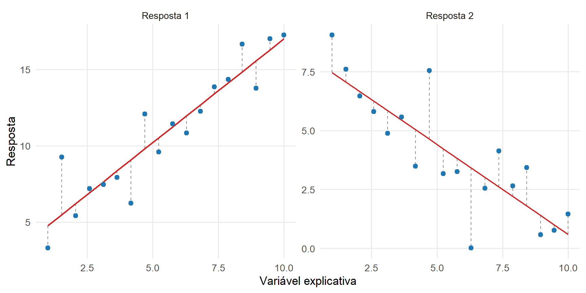

12 Modelo Linear Multivariado e Hipóteses Lineares
O capítulo anterior desenvolveu a estimação do vetor de médias e da matriz de covariâncias a partir de uma amostra aleatória multivariada. Nesse contexto, todas as unidades foram tratadas como provenientes de uma população com o mesmo vetor de médias.
Em muitas aplicações, as médias das respostas podem variar sistematicamente entre unidades em função de tratamentos, grupos, períodos, condições experimentais ou características quantitativas. Cada unidade continua fornecendo um vetor de respostas, mas sua média passa a depender de um conjunto de variáveis explicativas.
O modelo linear multivariado representa essa estrutura por meio de
\[ \boldsymbol{\mathcal Y} = \mathbf Z\mathbf B + \boldsymbol{\mathcal E}, \]
em que:
- \(\boldsymbol{\mathcal Y}\) é a matriz aleatória de respostas;
- \(\mathbf Z\) é a matriz de delineamento;
- \(\mathbf B\) é a matriz de parâmetros;
- \(\boldsymbol{\mathcal E}\) é a matriz aleatória de erros.
O modelo linear multivariado reúne, em uma mesma formulação, a estimação de vetores de médias, a regressão com várias respostas e a construção de hipóteses lineares sobre termos do modelo e combinações das respostas (Rencher; Christensen, 2012). Essa estrutura abrange:
- estimação de um vetor de médias;
- comparação de dois ou mais grupos;
- regressão com várias respostas;
- modelos com fatores e covariáveis;
- contrastes entre parâmetros;
- hipóteses sobre combinações das respostas.
O objetivo deste capítulo é construir essa formulação, obter o estimador da matriz de parâmetros, interpretar valores ajustados e resíduos como projeções, estimar a matriz de covariâncias residual e representar hipóteses lineares em forma matricial.
As distribuições amostrais exatas dos estimadores e das matrizes de somas de quadrados e produtos cruzados serão desenvolvidas no próximo capítulo. Aqui, a ênfase recai sobre a estrutura algébrica, geométrica e estatística do modelo e sobre a construção das quantidades utilizadas posteriormente na inferência.
12.1 Da resposta escalar à resposta vetorial
12.1.1 Respostas múltiplas por unidade
No modelo linear univariado, cada unidade amostral fornece uma única resposta aleatória:
\[ \mathsf Y_i \in \mathbb R. \]
Sua média condicional é representada por uma combinação linear dos termos do modelo:
\[ E \left( \mathsf Y_i \mid \mathbf z_i \right) = \mathbf z_i^\top \boldsymbol{\beta}, \]
em que
\[ \mathbf z_i \in \mathbb R^q \]
contém os valores dos \(q\) termos do modelo para a unidade \(i\), e
\[ \boldsymbol{\beta} \in \mathbb R^q \]
contém os coeficientes correspondentes.
A resposta pode ser escrita como
\[ \mathsf Y_i = \mathbf z_i^\top \boldsymbol{\beta} + \varepsilon_i, \]
em que \(\varepsilon_i\) representa a parcela não explicada pelos termos incluídos no modelo.
No modelo linear multivariado, cada unidade fornece simultaneamente \(p\) respostas. O vetor aleatório da unidade \(i\) é
\[ \boldsymbol{\mathsf Y}_i = \begin{bmatrix} \mathsf Y_{i1}\\ \mathsf Y_{i2}\\ \vdots\\ \mathsf Y_{ip} \end{bmatrix} \in \mathbb R^p. \tag{12.1}\]
Uma unidade experimental pode, por exemplo, ser descrita por diferentes medidas físicas, químicas, biológicas, sensoriais ou de desempenho. As respostas são observadas conjuntamente e podem apresentar associação residual mesmo depois de considerada a influência das variáveis explicativas.
O vetor de médias condicionais é
\[ E \left( \boldsymbol{\mathsf Y}_i \mid \mathbf z_i \right) = \begin{bmatrix} E \left( \mathsf Y_{i1} \mid \mathbf z_i \right) \\ E \left( \mathsf Y_{i2} \mid \mathbf z_i \right) \\ \vdots\\ E \left( \mathsf Y_{ip} \mid \mathbf z_i \right) \end{bmatrix} \in \mathbb R^p. \]
As mesmas entradas de \(\mathbf z_i\) são utilizadas para modelar todas as respostas, mas cada resposta possui seu próprio vetor de coeficientes.
Para a resposta \(j\), defina
\[ \boldsymbol{\beta}_j = \begin{bmatrix} \beta_{1j}\\ \beta_{2j}\\ \vdots\\ \beta_{qj} \end{bmatrix} \in \mathbb R^q. \]
Sua média condicional é
\[ E \left( \mathsf Y_{ij} \mid \mathbf z_i \right) = \mathbf z_i^\top \boldsymbol{\beta}_j. \tag{12.2}\]
Os vetores de coeficientes das \(p\) respostas são reunidos na matriz
\[ \mathbf B = \begin{bmatrix} \boldsymbol{\beta}_1 & \boldsymbol{\beta}_2 & \cdots & \boldsymbol{\beta}_p \end{bmatrix} \in \mathbb R^{q\times p}. \tag{12.3}\]
Explicitamente,
\[ \mathbf B = \begin{bmatrix} \beta_{11} & \beta_{12} & \cdots & \beta_{1p}\\ \beta_{21} & \beta_{22} & \cdots & \beta_{2p}\\ \vdots & \vdots & \ddots & \vdots\\ \beta_{q1} & \beta_{q2} & \cdots & \beta_{qp} \end{bmatrix}. \]
A coluna \(j\) contém os coeficientes da resposta \(j\). A linha \(h\) contém os coeficientes associados ao \(h\)-ésimo termo do modelo para todas as respostas.
Como
\[ \mathbf B^\top \in \mathbb R^{p\times q}, \]
o vetor de médias condicionais da unidade \(i\) pode ser escrito como
\[ E \left( \boldsymbol{\mathsf Y}_i \mid \mathbf z_i \right) = \mathbf B^\top \mathbf z_i. \tag{12.4}\]
De forma equivalente,
\[ E \left( \boldsymbol{\mathsf Y}_i^\top \mid \mathbf z_i \right) = \mathbf z_i^\top \mathbf B. \]
Definição 12.1 (Modelo linear multivariado para uma unidade) A resposta vetorial da unidade \(i\) é representada por
\[ \boldsymbol{\mathsf Y}_i = \mathbf B^\top \mathbf z_i + \boldsymbol{\varepsilon}_i, \tag{12.5}\]
em que
\[ \boldsymbol{\varepsilon}_i = \begin{bmatrix} \varepsilon_{i1}\\ \varepsilon_{i2}\\ \vdots\\ \varepsilon_{ip} \end{bmatrix} \in \mathbb R^p \]
é o vetor aleatório de erros da unidade.
O vetor de erros representa o afastamento da resposta em relação à sua média condicional, dado o delineamento:
\[ \boldsymbol{\varepsilon}_i = \boldsymbol{\mathsf Y}_i - E \left( \boldsymbol{\mathsf Y}_i \mid \mathbf Z \right), \]
com
\[ E \left( \boldsymbol{\mathsf Y}_i \mid \mathbf Z \right) = \mathbf B^\top\mathbf z_i. \]
As componentes de \(\boldsymbol{\varepsilon}_i\) podem ser correlacionadas. Essa estrutura de correlações residuais constitui uma das diferenças centrais entre o modelo linear univariado e o multivariado.
12.1.2 Equações por resposta
A equação vetorial em Equação eq-modelo-linear-multivariado-unidade reúne \(p\) modelos lineares:
\[ \begin{aligned} \mathsf Y_{i1} &= \mathbf z_i^\top \boldsymbol{\beta}_1 + \varepsilon_{i1}, \\ \mathsf Y_{i2} &= \mathbf z_i^\top \boldsymbol{\beta}_2 + \varepsilon_{i2}, \\ &\ \vdots \\ \mathsf Y_{ip} &= \mathbf z_i^\top \boldsymbol{\beta}_p + \varepsilon_{ip}. \end{aligned} \tag{12.6}\]
Cada resposta possui seu próprio vetor de coeficientes, mas todas utilizam a mesma representação \(\mathbf z_i\) dos termos do modelo.
A escrita por componentes é
\[ \mathsf Y_{ij} = \sum_{h=1}^q z_{ih}\beta_{hj} + \varepsilon_{ij}, \qquad i=1,\ldots,n, \qquad j=1,\ldots,p. \tag{12.7}\]
O parâmetro \(\beta_{hj}\) descreve a contribuição do termo \(h\) para a média da resposta \(j\), segundo a parametrização definida pela matriz de delineamento.
A matriz de covariâncias residuais de uma unidade será denotada por
\[ \boldsymbol{\Sigma} = \operatorname{Cov} \left( \boldsymbol{\varepsilon}_i \mid \mathbf Z \right) = \begin{bmatrix} \sigma_{11} & \sigma_{12} & \cdots & \sigma_{1p}\\ \sigma_{21} & \sigma_{22} & \cdots & \sigma_{2p}\\ \vdots & \vdots & \ddots & \vdots\\ \sigma_{p1} & \sigma_{p2} & \cdots & \sigma_{pp} \end{bmatrix}. \tag{12.8}\]
Os elementos diagonais são as variâncias residuais:
\[ \operatorname{Var} \left( \varepsilon_{ij} \mid \mathbf Z \right) = \sigma_{jj}. \]
Para \(j\neq k\), os elementos fora da diagonal são as covariâncias residuais:
\[ \operatorname{Cov} \left( \varepsilon_{ij}, \varepsilon_{ik} \mid \mathbf Z \right) = \sigma_{jk}. \]
Essas covariâncias medem a associação entre duas respostas da mesma unidade que permanece depois de considerada a parte sistemática representada por \(\mathbf z_i^\top\mathbf B\).
Uma associação observada entre duas respostas pode refletir diferenças sistemáticas explicadas pelos termos do modelo, associação linear residual ou ambas. O modelo linear multivariado permite representar separadamente essas duas fontes de associação.
12.1.3 Representação matricial
Considere \(n\) unidades, \(p\) respostas e \(q\) termos especificados no modelo.
Definição 12.2 (Matriz aleatória de respostas) A matriz aleatória de respostas é
\[ \boldsymbol{\mathcal Y} = \begin{bmatrix} \boldsymbol{\mathsf Y}_1^\top\\ \boldsymbol{\mathsf Y}_2^\top\\ \vdots\\ \boldsymbol{\mathsf Y}_n^\top \end{bmatrix} \in \mathbb R^{n\times p}. \tag{12.9}\]
Seu elemento \((i,j)\) é a resposta aleatória \(\mathsf Y_{ij}\) da unidade \(i\) na variável \(j\).
Após a observação dos dados, obtém-se a realização
\[ \mathbf Y = \begin{bmatrix} y_{11} & y_{12} & \cdots & y_{1p}\\ y_{21} & y_{22} & \cdots & y_{2p}\\ \vdots & \vdots & \ddots & \vdots\\ y_{n1} & y_{n2} & \cdots & y_{np} \end{bmatrix} \in \mathbb R^{n\times p}. \tag{12.10}\]
Cada linha de \(\boldsymbol{\mathcal Y}\) corresponde a uma unidade, enquanto cada coluna corresponde a uma resposta. A coluna aleatória associada à resposta \(j\) é
\[ \boldsymbol{\mathsf y}_j = \begin{bmatrix} \mathsf Y_{1j}\\ \mathsf Y_{2j}\\ \vdots\\ \mathsf Y_{nj} \end{bmatrix} \in \mathbb R^n. \]
Os termos do modelo são organizados na matriz de delineamento
\[ \mathbf Z = \begin{bmatrix} \mathbf z_1^\top\\ \mathbf z_2^\top\\ \vdots\\ \mathbf z_n^\top \end{bmatrix} = \begin{bmatrix} z_{11} & z_{12} & \cdots & z_{1q}\\ z_{21} & z_{22} & \cdots & z_{2q}\\ \vdots & \vdots & \ddots & \vdots\\ z_{n1} & z_{n2} & \cdots & z_{nq} \end{bmatrix} \in \mathbb R^{n\times q}. \tag{12.11}\]
A linha \(\mathbf z_i^\top\) contém os valores dos termos do modelo para a unidade \(i\). As colunas podem representar:
- intercepto;
- covariáveis quantitativas;
- indicadores de grupos ou tratamentos;
- contrastes codificados;
- interações;
- termos polinomiais;
- combinações de fatores e covariáveis.
Quando o modelo contém intercepto,
\[ \mathbf 1_n \in \mathcal C \left( \mathbf Z \right), \]
em que \(\mathcal C(\mathbf Z)\) é o espaço coluna da matriz de delineamento.
Os vetores de erros são organizados na matriz aleatória
\[ \boldsymbol{\mathcal E} = \begin{bmatrix} \boldsymbol{\varepsilon}_1^\top\\ \boldsymbol{\varepsilon}_2^\top\\ \vdots\\ \boldsymbol{\varepsilon}_n^\top \end{bmatrix} \in \mathbb R^{n\times p}. \tag{12.12}\]
Reunindo as equações das \(n\) unidades, obtém-se a formulação matricial.
Definição 12.3 (Modelo linear multivariado) O modelo linear multivariado é
\[ \boldsymbol{\mathcal Y} = \mathbf Z\mathbf B + \boldsymbol{\mathcal E}, \tag{12.13}\]
com
\[ \boldsymbol{\mathcal Y} \in \mathbb R^{n\times p}, \qquad \mathbf Z \in \mathbb R^{n\times q}, \qquad \mathbf B \in \mathbb R^{q\times p} \]
e
\[ \boldsymbol{\mathcal E} \in \mathbb R^{n\times p}. \]
As dimensões do produto são
\[ \left( n\times q \right) \left( q\times p \right) = n\times p, \]
de modo que \(\mathbf Z\mathbf B\) possui a mesma dimensão da matriz de respostas.
A matriz
\[ \mathbf Z\mathbf B = \begin{bmatrix} \mathbf z_1^\top\mathbf B\\ \mathbf z_2^\top\mathbf B\\ \vdots\\ \mathbf z_n^\top\mathbf B \end{bmatrix} \]
reúne os vetores de médias condicionais transpostos. Seu elemento \((i,j)\) é
\[ \left[ \mathbf Z\mathbf B \right]_{ij} = \mathbf z_i^\top \boldsymbol{\beta}_j. \]
Portanto,
\[ E \left( \boldsymbol{\mathcal Y} \mid \mathbf Z \right) = \mathbf Z\mathbf B \]
quando a matriz de erros possui esperança condicional nula.
A representação matricial mostra duas estruturas simultâneas:
- cada coluna de \(\boldsymbol{\mathcal Y}\) segue um modelo linear com a mesma matriz de delineamento;
- as respostas de uma mesma linha podem apresentar associação linear residual, descrita por \(\boldsymbol{\Sigma}\).
A próxima seção especificará as hipóteses de primeira e segunda ordens, a estrutura vetorizada e a distribuição normal matricial associada ao modelo.
12.2 Estrutura do modelo linear multivariado
A formulação
\[ \boldsymbol{\mathcal Y} = \mathbf Z\mathbf B + \boldsymbol{\mathcal E} \]
separa a resposta em duas parcelas:
\[ \underbrace{ \mathbf Z\mathbf B }_{\text{estrutura sistemática}} \qquad \text{e} \qquad \underbrace{ \boldsymbol{\mathcal E} }_{\text{variação residual}}. \]
A primeira parcela representa os vetores de médias condicionais determinados pelo delineamento e pelos parâmetros. A segunda reúne os afastamentos aleatórios em relação a essas médias. Essa formulação equivale a ajustar, para cada resposta, um modelo linear com a mesma matriz de delineamento, preservando em uma única matriz a estrutura de covariâncias entre as respostas (Rencher; Christensen, 2012).
12.2.1 Matrizes de respostas, delineamento e parâmetros
Considere:
\[ \boldsymbol{\mathcal Y} \in \mathbb R^{n\times p}, \qquad \mathbf Z \in \mathbb R^{n\times q}, \qquad \mathbf B \in \mathbb R^{q\times p}. \]
A matriz aleatória de respostas pode ser representada por suas linhas:
\[ \boldsymbol{\mathcal Y} = \begin{bmatrix} \boldsymbol{\mathsf Y}_1^\top\\ \vdots\\ \boldsymbol{\mathsf Y}_n^\top \end{bmatrix}, \]
ou por suas colunas:
\[ \boldsymbol{\mathcal Y} = \begin{bmatrix} \boldsymbol{\mathsf y}_1 & \cdots & \boldsymbol{\mathsf y}_p \end{bmatrix}. \]
A linha \(i\) contém o vetor de respostas da unidade \(i\):
\[ \boldsymbol{\mathsf Y}_i \in \mathbb R^p. \]
A coluna \(j\) contém os valores da resposta \(j\) nas \(n\) unidades:
\[ \boldsymbol{\mathsf y}_j \in \mathbb R^n. \]
A matriz de delineamento pode ser escrita como
\[ \mathbf Z = \begin{bmatrix} \mathbf z_1^\top\\ \vdots\\ \mathbf z_n^\top \end{bmatrix} = \begin{bmatrix} \mathbf z_{\cdot1} & \cdots & \mathbf z_{\cdot q} \end{bmatrix}. \]
Suas linhas representam as unidades, enquanto suas colunas representam os termos do modelo.
A matriz de parâmetros é
\[ \mathbf B = \begin{bmatrix} \boldsymbol{\beta}_1 & \cdots & \boldsymbol{\beta}_p \end{bmatrix}. \]
A coluna \(\boldsymbol{\beta}_j\) contém os parâmetros da resposta \(j\). A linha \(h\) contém os efeitos do termo \(h\) sobre todas as respostas.
A matriz de médias condicionais é
\[ \boldsymbol{\Xi} = E \left( \boldsymbol{\mathcal Y} \mid \mathbf Z \right) = \mathbf Z\mathbf B. \tag{12.14}\]
Seu elemento \((i,j)\) é
\[ \xi_{ij} = \mathbf z_i^\top \boldsymbol{\beta}_j. \]
A coluna \(j\) da matriz de médias é
\[ E \left( \boldsymbol{\mathsf y}_j \mid \mathbf Z \right) = \mathbf Z \boldsymbol{\beta}_j. \]
A linha \(i\) é
\[ E \left( \boldsymbol{\mathsf Y}_i^\top \mid \mathbf Z \right) = \mathbf z_i^\top \mathbf B. \]
O espaço coluna de \(\mathbf Z\) determina os vetores de médias que podem ser representados para cada resposta. Se
\[ r = \operatorname{posto} \left( \mathbf Z \right), \tag{12.15}\]
então
\[ r \leq \min \left( n,q \right). \]
Para cada resposta, o vetor de médias pertence ao subespaço
\[ \mathcal C \left( \mathbf Z \right) \subseteq \mathbb R^n, \]
cuja dimensão é \(r\).
O modelo pode apresentar \(q\) colunas em \(\mathbf Z\), mas somente \(r\) direções linearmente independentes no espaço de médias. Essa distinção será utilizada nas seções sobre estimação, graus de liberdade e estimabilidade.
12.2.2 Hipóteses de primeira e segunda ordens
A primeira hipótese especifica a esperança condicional dos erros.
Definição 12.4 (Hipótese de média residual nula) Assume-se que
\[ E \left( \boldsymbol{\varepsilon}_i \mid \mathbf Z \right) = \mathbf 0, \qquad i=1,\ldots,n. \tag{12.16}\]
Equivalentemente,
\[ E \left( \boldsymbol{\mathcal E} \mid \mathbf Z \right) = \mathbf 0_{n\times p}. \]
Essa condição implica
\[ E \left( \boldsymbol{\mathcal Y} \mid \mathbf Z \right) = \mathbf Z\mathbf B. \]
A segunda hipótese descreve a variabilidade conjunta das respostas de cada unidade.
Definição 12.5 (Estrutura de covariâncias residuais) Assume-se que
\[ \operatorname{Cov} \left( \boldsymbol{\varepsilon}_i \mid \mathbf Z \right) = \boldsymbol{\Sigma}, \qquad i=1,\ldots,n, \tag{12.17}\]
em que
\[ \boldsymbol{\Sigma} \in \mathbb R^{p\times p} \]
é simétrica e semidefinida positiva.
Também se assume que
\[ \operatorname{Cov} \left( \boldsymbol{\varepsilon}_i, \boldsymbol{\varepsilon}_k \mid \mathbf Z \right) = \mathbf 0, \qquad i\neq k. \tag{12.18}\]
A matriz \(\boldsymbol{\Sigma}\) é comum às unidades. Seu elemento \(\sigma_{jk}\) satisfaz
\[ \sigma_{jk} = \operatorname{Cov} \left( \varepsilon_{ij}, \varepsilon_{ik} \mid \mathbf Z \right). \]
A diagonal contém as variâncias residuais:
\[ \sigma_{jj} = \operatorname{Var} \left( \varepsilon_{ij} \mid \mathbf Z \right). \]
As entradas fora da diagonal representam a associação linear residual entre respostas da mesma unidade que permanece após o ajuste do modelo.
A ausência de covariância entre unidades distintas não implica independência em uma distribuição geral. Sob normalidade conjunta, entretanto, a covariância cruzada nula implica independência.
A estrutura de covariâncias entre todos os elementos da matriz de erros pode ser resumida por
\[ \operatorname{Cov} \left[ \operatorname{vec} \left( \boldsymbol{\mathcal E} \right) \mid \mathbf Z \right] = \boldsymbol{\Sigma} \otimes \mathbf I_n. \tag{12.19}\]
Essa expressão será derivada após a definição da convenção de vetorização.
12.2.3 Condicionamento na matriz de delineamento
A matriz \(\mathbf Z\) será tratada como fixa ou como condicionada nos valores observados. Assim, as esperanças e covariâncias serão escritas na forma
\[ E \left( \boldsymbol{\mathcal Y} \mid \mathbf Z \right) \]
e
\[ \operatorname{Cov} \left[ \operatorname{vec} \left( \boldsymbol{\mathcal Y} \right) \mid \mathbf Z \right]. \]
Essa formulação abrange duas situações.
Na primeira, os valores de \(\mathbf Z\) são definidos pelo delineamento do estudo, como ocorre em experimentos com tratamentos previamente determinados.
Na segunda, algumas colunas de \(\mathbf Z\) correspondem a covariáveis observadas. A análise descreve então a distribuição condicional das respostas, dados os valores dessas covariáveis.
O condicionamento em \(\mathbf Z\) permite concentrar a formulação na variabilidade das respostas e dos erros. A distribuição marginal conjunta de respostas e covariáveis exigiria um modelo probabilístico adicional para a matriz de delineamento.
A linearidade do modelo refere-se aos parâmetros:
\[ E \left( \boldsymbol{\mathcal Y} \mid \mathbf Z \right) = \mathbf Z\mathbf B. \]
As colunas de \(\mathbf Z\) podem conter transformações conhecidas de variáveis explicativas, como:
\[ x, \qquad x^2, \qquad \log x, \qquad xz. \]
O modelo continua linear em \(\mathbf B\) mesmo quando as entradas de \(\mathbf Z\) são construídas por funções não lineares das variáveis originais.
A especificação da matriz de delineamento determina:
- o espaço de médias;
- os efeitos representados;
- as funções paramétricas identificáveis;
- os graus de liberdade;
- os modelos reduzidos que podem ser comparados;
- as hipóteses lineares que podem ser formuladas.
Por isso, a interpretação de cada elemento de \(\mathbf B\) depende da codificação adotada em \(\mathbf Z\).
12.2.4 Forma vetorizada
A vetorização transforma uma matriz em um vetor empilhando suas colunas.
Definição 12.6 (Vetorização por colunas) Para uma matriz
\[ \mathbf A = \begin{bmatrix} \mathbf a_1 & \mathbf a_2 & \cdots & \mathbf a_m \end{bmatrix}, \]
define-se
\[ \operatorname{vec} \left( \mathbf A \right) = \begin{bmatrix} \mathbf a_1\\ \mathbf a_2\\ \vdots\\ \mathbf a_m \end{bmatrix}. \tag{12.20}\]
Como
\[ \boldsymbol{\mathcal Y} \in \mathbb R^{n\times p}, \]
tem-se
\[ \operatorname{vec} \left( \boldsymbol{\mathcal Y} \right) \in \mathbb R^{np}. \]
A identidade
\[ \operatorname{vec} \left( \mathbf A\mathbf X\mathbf C \right) = \left( \mathbf C^\top \otimes \mathbf A \right) \operatorname{vec} \left( \mathbf X \right) \]
fornece
\[ \operatorname{vec} \left( \mathbf Z\mathbf B \right) = \left( \mathbf I_p \otimes \mathbf Z \right) \operatorname{vec} \left( \mathbf B \right). \tag{12.21}\]
Aplicando a vetorização ao modelo,
\[ \operatorname{vec} \left( \boldsymbol{\mathcal Y} \right) = \left( \mathbf I_p \otimes \mathbf Z \right) \operatorname{vec} \left( \mathbf B \right) + \operatorname{vec} \left( \boldsymbol{\mathcal E} \right). \tag{12.22}\]
A forma vetorizada possui a estrutura de um modelo linear para um vetor com \(np\) componentes. Sua matriz de delineamento ampliada é
\[ \mathbf I_p \otimes \mathbf Z \in \mathbb R^{np\times qp}. \]
O vetor de parâmetros é
\[ \operatorname{vec} \left( \mathbf B \right) \in \mathbb R^{qp}. \]
A covariância do erro vetorizado pode ser derivada a partir da estrutura entre linhas e colunas da matriz de erros.
Proposição 12.1 (Covariância do erro vetorizado) Sob as hipóteses
\[ \operatorname{Cov} \left( \boldsymbol{\varepsilon}_i \mid \mathbf Z \right) = \boldsymbol{\Sigma} \]
e
\[ \operatorname{Cov} \left( \boldsymbol{\varepsilon}_i, \boldsymbol{\varepsilon}_k \mid \mathbf Z \right) = \mathbf 0 \qquad \text{para } i\neq k, \]
tem-se
\[ \operatorname{Cov} \left[ \operatorname{vec} \left( \boldsymbol{\mathcal E} \right) \mid \mathbf Z \right] = \boldsymbol{\Sigma} \otimes \mathbf I_n. \tag{12.23}\]
Comprovação. A vetorização por colunas organiza inicialmente os \(n\) erros da primeira resposta, depois os \(n\) erros da segunda resposta e assim sucessivamente.
O bloco \((j,k)\) da matriz de covariâncias vetorizada é
\[ \operatorname{Cov} \left( \boldsymbol{\varepsilon}_{\cdot j}, \boldsymbol{\varepsilon}_{\cdot k} \mid \mathbf Z \right), \]
em que
\[ \boldsymbol{\varepsilon}_{\cdot j} = \begin{bmatrix} \varepsilon_{1j}\\ \vdots\\ \varepsilon_{nj} \end{bmatrix}. \]
Como unidades distintas possuem covariância residual nula e a covariância entre as respostas \(j\) e \(k\) da mesma unidade é \(\sigma_{jk}\),
\[ \operatorname{Cov} \left( \boldsymbol{\varepsilon}_{\cdot j}, \boldsymbol{\varepsilon}_{\cdot k} \mid \mathbf Z \right) = \sigma_{jk} \mathbf I_n. \]
A matriz completa possui, portanto, o bloco \(\sigma_{jk}\mathbf I_n\) na posição \((j,k)\), o que corresponde a
\[ \boldsymbol{\Sigma} \otimes \mathbf I_n. \]
Como \(\mathbf Z\mathbf B\) é não aleatória condicionalmente a \(\mathbf Z\),
\[ \operatorname{Cov} \left[ \operatorname{vec} \left( \boldsymbol{\mathcal Y} \right) \mid \mathbf Z \right] = \boldsymbol{\Sigma} \otimes \mathbf I_n. \tag{12.24}\]
A matriz de covariâncias vetorizada separa duas estruturas:
- \(\boldsymbol{\Sigma}\) descreve a estrutura de covariâncias entre respostas da mesma unidade;
- \(\mathbf I_n\) representa ausência de covariância entre unidades distintas.
12.2.5 Distribuição normal matricial
A distribuição normal matricial representa uma matriz aleatória por meio da distribuição normal de sua vetorização, com uma estrutura de covariâncias separável expressa por um produto de Kronecker (Gupta; Nagar, 1999).
Definição 12.7 (Distribuição normal matricial) Sejam
\[ \boldsymbol{\mathcal A} \in \mathbb R^{n\times p}, \qquad \boldsymbol{\Xi} \in \mathbb R^{n\times p}, \]
\[ \mathbf U \in \mathbb R^{n\times n} \qquad \text{e} \qquad \mathbf V \in \mathbb R^{p\times p}, \]
com \(\mathbf U\) e \(\mathbf V\) simétricas e semidefinidas positivas.
A matriz aleatória \(\boldsymbol{\mathcal A}\) segue uma distribuição normal matricial com matriz de médias \(\boldsymbol{\Xi}\), fator de covariância no espaço das linhas \(\mathbf U\) e fator de covariância no espaço das colunas \(\mathbf V\) quando
\[ \operatorname{vec} \left( \boldsymbol{\mathcal A} \right) \sim N_{np} \left[ \operatorname{vec} \left( \boldsymbol{\Xi} \right), \mathbf V\otimes\mathbf U \right]. \]
Utiliza-se a notação
\[ \boldsymbol{\mathcal A} \sim N_{n\times p} \left( \boldsymbol{\Xi}, \mathbf U, \mathbf V \right). \tag{12.25}\]
Quando \(\mathbf U\) e \(\mathbf V\) são positivas definidas, a distribuição de \(\operatorname{vec}(\boldsymbol{\mathcal A})\) é não singular. Neste livro, a notação será também estendida ao caso em que pelo menos um desses fatores é singular. Nesse caso, a distribuição normal matricial é degenerada e não possui densidade em relação à medida de Lebesgue em \(\mathbb R^{np}\).
Na parametrização normal matricial geral, os fatores \(\mathbf U\) e \(\mathbf V\) não possuem escalas separadamente identificáveis, porque apenas o produto de Kronecker \(\mathbf V\otimes\mathbf U\) determina a matriz de covariâncias da vetorização (Gupta; Nagar, 1999). De fato, para qualquer \(c>0\),
\[ \mathbf V\otimes\mathbf U = \left( c^{-1}\mathbf V \right) \otimes \left( c\mathbf U \right). \]
No modelo linear multivariado, essa indeterminação não ocorre porque a estrutura entre unidades é fixada em \(\mathbf I_n\).
Definição 12.8 (Modelo linear normal multivariado) O modelo linear normal multivariado é definido por
\[ \boldsymbol{\mathcal Y} = \mathbf Z\mathbf B + \boldsymbol{\mathcal E}, \]
com
\[ \boldsymbol{\mathcal E} \mid \mathbf Z \sim N_{n\times p} \left( \mathbf 0, \mathbf I_n, \boldsymbol{\Sigma} \right). \tag{12.26}\]
Consequentemente,
\[ \boldsymbol{\mathcal Y} \mid \mathbf Z \sim N_{n\times p} \left( \mathbf Z\mathbf B, \mathbf I_n, \boldsymbol{\Sigma} \right). \tag{12.27}\]
A forma vetorizada equivalente é
\[ \operatorname{vec} \left( \boldsymbol{\mathcal Y} \right) \mid \mathbf Z \sim N_{np} \left[ \left( \mathbf I_p\otimes\mathbf Z \right) \operatorname{vec} \left( \mathbf B \right), \boldsymbol{\Sigma}\otimes\mathbf I_n \right]. \tag{12.28}\]
A normal matricial implica que as linhas são independentes e possuem distribuições
\[ \boldsymbol{\mathsf Y}_i \mid \mathbf z_i \sim N_p \left( \mathbf B^\top\mathbf z_i, \boldsymbol{\Sigma} \right), \qquad i=1,\ldots,n. \tag{12.29}\]
Para a coluna correspondente à resposta \(j\),
\[ \boldsymbol{\mathsf y}_j \mid \mathbf Z \sim N_n \left( \mathbf Z\boldsymbol{\beta}_j, \sigma_{jj}\mathbf I_n \right). \tag{12.30}\]
Para duas respostas \(j\) e \(k\),
\[ \operatorname{Cov} \left( \boldsymbol{\mathsf y}_j, \boldsymbol{\mathsf y}_k \mid \mathbf Z \right) = \sigma_{jk}\mathbf I_n. \tag{12.31}\]
A densidade condicional da matriz observada \(\mathbf Y\) é
\[ \begin{aligned} f \left( \mathbf Y \mid \mathbf Z; \mathbf B, \boldsymbol{\Sigma} \right) &= (2\pi)^{-np/2} \left| \boldsymbol{\Sigma} \right|^{-n/2} \\ &\quad\times \exp \left\{ -\frac{1}{2} \operatorname{tr} \left[ \boldsymbol{\Sigma}^{-1} \left( \mathbf Y-\mathbf Z\mathbf B \right)^\top \left( \mathbf Y-\mathbf Z\mathbf B \right) \right] \right\}, \end{aligned} \tag{12.32}\]
quando
\[ \boldsymbol{\Sigma} \succ \mathbf 0. \]
A função log-verossimilhança, desconsiderando constantes que não dependem dos parâmetros, é
\[ \begin{aligned} \ell \left( \mathbf B, \boldsymbol{\Sigma} \right) &= -\frac{n}{2} \log \left| \boldsymbol{\Sigma} \right| \\ &\quad -\frac{1}{2} \operatorname{tr} \left[ \boldsymbol{\Sigma}^{-1} \left( \mathbf Y-\mathbf Z\mathbf B \right)^\top \left( \mathbf Y-\mathbf Z\mathbf B \right) \right]. \end{aligned} \tag{12.33}\]
Essa expressão relaciona a estimação da matriz de parâmetros à minimização de uma forma quadrática matricial dos resíduos.
12.2.6 Transformações das respostas e das unidades
A distribuição normal matricial é preservada por transformações lineares aplicadas às linhas e às colunas.
Proposição 12.2 (Transformação de uma matriz normal) Se
\[ \boldsymbol{\mathcal A} \sim N_{n\times p} \left( \boldsymbol{\Xi}, \mathbf U, \mathbf V \right), \]
e
\[ \mathbf L \in \mathbb R^{m\times n}, \qquad \mathbf R \in \mathbb R^{p\times s}, \]
então
\[ \mathbf L \boldsymbol{\mathcal A} \mathbf R \sim N_{m\times s} \left( \mathbf L \boldsymbol{\Xi} \mathbf R, \mathbf L\mathbf U\mathbf L^\top, \mathbf R^\top\mathbf V\mathbf R \right). \tag{12.34}\]
Comprovação. Pela identidade da vetorização,
\[ \operatorname{vec} \left( \mathbf L \boldsymbol{\mathcal A} \mathbf R \right) = \left( \mathbf R^\top \otimes \mathbf L \right) \operatorname{vec} \left( \boldsymbol{\mathcal A} \right). \]
Como uma transformação linear de um vetor normal permanece normal, a média transformada é
\[ \left( \mathbf R^\top \otimes \mathbf L \right) \operatorname{vec} \left( \boldsymbol{\Xi} \right) = \operatorname{vec} \left( \mathbf L \boldsymbol{\Xi} \mathbf R \right). \]
A matriz de covariâncias é
\[ \begin{aligned} & \left( \mathbf R^\top \otimes \mathbf L \right) \left( \mathbf V\otimes\mathbf U \right) \left( \mathbf R\otimes\mathbf L^\top \right) \\ &= \left( \mathbf R^\top \mathbf V \mathbf R \right) \otimes \left( \mathbf L \mathbf U \mathbf L^\top \right). \end{aligned} \]
Esse resultado corresponde à distribuição normal matricial indicada.
No modelo linear multivariado, uma transformação das respostas é obtida por
\[ \boldsymbol{\mathcal Y}^{\ast} = \boldsymbol{\mathcal Y} \mathbf R, \]
com
\[ \mathbf R \in \mathbb R^{p\times s}. \]
Então,
\[ \boldsymbol{\mathcal Y}^{\ast} = \mathbf Z \left( \mathbf B\mathbf R \right) + \boldsymbol{\mathcal E} \mathbf R. \tag{12.35}\]
Sob normalidade,
\[ \boldsymbol{\mathcal Y}^{\ast} \mid \mathbf Z \sim N_{n\times s} \left( \mathbf Z\mathbf B\mathbf R, \mathbf I_n, \mathbf R^\top \boldsymbol{\Sigma} \mathbf R \right). \tag{12.36}\]
Cada coluna de \(\boldsymbol{\mathcal Y}^{\ast}\) é uma combinação linear das respostas originais. Essa propriedade será utilizada na formulação de hipóteses sobre médias, diferenças ou contrastes entre respostas.
Uma transformação das unidades é obtida por
\[ \boldsymbol{\mathcal Y}^{\dagger} = \mathbf L \boldsymbol{\mathcal Y}, \]
com
\[ \mathbf L \in \mathbb R^{m\times n}. \]
Nesse caso,
\[ \boldsymbol{\mathcal Y}^{\dagger} = \left( \mathbf L\mathbf Z \right) \mathbf B + \mathbf L \boldsymbol{\mathcal E}. \tag{12.37}\]
Sob normalidade,
\[ \boldsymbol{\mathcal Y}^{\dagger} \mid \mathbf Z \sim N_{m\times p} \left( \mathbf L\mathbf Z\mathbf B, \mathbf L\mathbf L^\top, \boldsymbol{\Sigma} \right). \tag{12.38}\]
Em geral,
\[ \mathbf L\mathbf L^\top \neq \mathbf I_m. \]
Portanto, combinações lineares das unidades podem introduzir covariância entre as novas linhas, mesmo quando as unidades originais são independentes.
Quando \(\mathbf L\) possui linhas ortonormais,
\[ \mathbf L\mathbf L^\top = \mathbf I_m, \]
e a estrutura de independência entre as linhas transformadas é preservada sob normalidade.
As transformações à direita atuam sobre o espaço das respostas. As transformações à esquerda atuam sobre o espaço das unidades. Essa distinção será utilizada posteriormente:
- os projetores do modelo atuarão à esquerda;
- as combinações de respostas nas hipóteses lineares atuarão à direita;
- os contrastes sobre os parâmetros atuarão sobre as linhas de \(\mathbf B\).
12.3 Estimação da matriz de parâmetros
A estimação de \(\mathbf B\) busca determinar a matriz de coeficientes cuja estrutura sistemática
\[ \mathbf Z\mathbf B \]
se aproxima da matriz observada de respostas \(\mathbf Y\) segundo o critério adotado.
Quando todas as respostas utilizam a mesma matriz de delineamento, a minimização da norma de Frobenius equivale a minimizar separadamente a soma de quadrados residual de cada coluna de \(\mathbf Y\). A formulação matricial reúne essas estimações e preserva a estrutura necessária para estimar conjuntamente a matriz de covariâncias residual (Rencher; Christensen, 2012).
12.3.1 Critério de mínimos quadrados
Considere uma matriz candidata
\[ \mathbf G \in \mathbb R^{q\times p}. \]
A matriz de resíduos associada a essa candidata é
\[ \mathbf Y-\mathbf Z\mathbf G. \]
Definição 12.9 (Critério de mínimos quadrados multivariado) O critério de mínimos quadrados é
\[ Q \left( \mathbf G \right) = \left\| \mathbf Y-\mathbf Z\mathbf G \right\|_F^2. \tag{12.39}\]
Equivalentemente,
\[ Q \left( \mathbf G \right) = \operatorname{tr} \left[ \left( \mathbf Y-\mathbf Z\mathbf G \right)^\top \left( \mathbf Y-\mathbf Z\mathbf G \right) \right]. \tag{12.40}\]
A norma de Frobenius soma os quadrados de todos os resíduos:
\[ Q \left( \mathbf G \right) = \sum_{j=1}^p \sum_{i=1}^n \left( y_{ij} - \mathbf z_i^\top \mathbf g_j \right)^2, \]
em que \(\mathbf g_j\) é a coluna \(j\) de \(\mathbf G\).
O critério também pode ser escrito como
\[ Q \left( \mathbf G \right) = \sum_{j=1}^p \left\| \mathbf y_j-\mathbf Z\mathbf g_j \right\|^2. \tag{12.41}\]
Portanto, minimizar \(Q(\mathbf G)\) equivale a minimizar simultaneamente as somas de quadrados residuais das \(p\) respostas.
O critério de mínimos quadrados não utiliza diretamente as covariâncias fora da diagonal de \(\boldsymbol{\Sigma}\). Mesmo assim, a estrutura multivariada será relevante para:
- a covariância entre as colunas estimadas de \(\mathbf B\);
- a estimação da matriz de covariâncias residual;
- a construção de hipóteses conjuntas sobre várias respostas;
- a inferência desenvolvida no capítulo seguinte.
12.3.2 Equações normais
Para obter um ponto estacionário, expanda o critério:
\[ \begin{aligned} Q \left( \mathbf G \right) &= \operatorname{tr} \left( \mathbf Y^\top\mathbf Y \right) - 2 \operatorname{tr} \left( \mathbf G^\top \mathbf Z^\top \mathbf Y \right) \\ &\quad+ \operatorname{tr} \left( \mathbf G^\top \mathbf Z^\top \mathbf Z \mathbf G \right). \end{aligned} \tag{12.42}\]
O gradiente matricial em relação a \(\mathbf G\) é
\[ \nabla_{\mathbf G} Q \left( \mathbf G \right) = -2 \mathbf Z^\top \mathbf Y + 2 \mathbf Z^\top \mathbf Z \mathbf G. \]
Igualando o gradiente a zero, obtêm-se as equações normais.
Proposição 12.3 (Equações normais do modelo linear multivariado) Toda solução de mínimos quadrados satisfaz
\[ \mathbf Z^\top \mathbf Z \widehat{\mathbf B}_{\mathrm{obs}} = \mathbf Z^\top \mathbf Y. \tag{12.43}\]
Equivalentemente,
\[ \mathbf Z^\top \left( \mathbf Y- \mathbf Z \widehat{\mathbf B}_{\mathrm{obs}} \right) = \mathbf 0_{q\times p}. \tag{12.44}\]
A segunda expressão mostra que cada coluna da matriz de resíduos é ortogonal a todas as colunas da matriz de delineamento.
Se
\[ \widehat{\mathbf U} = \mathbf Y- \mathbf Z \widehat{\mathbf B}_{\mathrm{obs}}, \]
então
\[ \mathbf Z^\top \widehat{\mathbf U} = \mathbf 0. \]
Assim, o ajuste e o resíduo são separados pela geometria do espaço coluna de \(\mathbf Z\).
As equações normais podem possuir:
- uma única solução;
- várias soluções;
- representações diferentes do mesmo vetor ajustado.
A unicidade da matriz de coeficientes depende do posto da matriz de delineamento.
12.3.3 Solução sob posto completo
Suponha que
\[ \operatorname{posto} \left( \mathbf Z \right) = q. \tag{12.45}\]
Nesse caso,
\[ q\leq n \]
e
\[ \mathbf Z^\top \mathbf Z \]
é positiva definida e invertível.
Proposição 12.4 (Estimador de mínimos quadrados sob posto completo) Se
\[ \operatorname{posto} \left( \mathbf Z \right) = q, \]
a solução única das equações normais é
\[ \widehat{\mathbf B} = \left( \mathbf Z^\top \mathbf Z \right)^{-1} \mathbf Z^\top \boldsymbol{\mathcal Y}. \tag{12.46}\]
Para a matriz observada de respostas,
\[ \widehat{\mathbf B}_{\mathrm{obs}} = \left( \mathbf Z^\top \mathbf Z \right)^{-1} \mathbf Z^\top \mathbf Y. \tag{12.47}\]
A coluna \(j\) do estimador é
\[ \widehat{\boldsymbol{\beta}}_j = \left( \mathbf Z^\top \mathbf Z \right)^{-1} \mathbf Z^\top \boldsymbol{\mathsf y}_j. \tag{12.48}\]
Portanto, cada coluna coincide com o estimador de mínimos quadrados do modelo linear correspondente àquela resposta.
A matriz de coeficientes também pode ser caracterizada por uma decomposição do critério.
Proposição 12.5 (Decomposição do critério de mínimos quadrados) Sob posto coluna completo, para qualquer
\[ \mathbf G \in \mathbb R^{q\times p}, \]
tem-se
\[ \begin{aligned} Q \left( \mathbf G \right) &= Q \left( \widehat{\mathbf B}_{\mathrm{obs}} \right) \\ &\quad+ \operatorname{tr} \left[ \left( \mathbf G- \widehat{\mathbf B}_{\mathrm{obs}} \right)^\top \mathbf Z^\top \mathbf Z \left( \mathbf G- \widehat{\mathbf B}_{\mathrm{obs}} \right) \right]. \end{aligned} \tag{12.49}\]
Comprovação. Escreva
\[ \mathbf Y-\mathbf Z\mathbf G = \widehat{\mathbf U} - \mathbf Z \left( \mathbf G- \widehat{\mathbf B}_{\mathrm{obs}} \right). \]
A norma quadrática correspondente é
\[ \begin{aligned} Q \left( \mathbf G \right) &= \operatorname{tr} \left( \widehat{\mathbf U}^\top \widehat{\mathbf U} \right) \\ &\quad- 2 \operatorname{tr} \left[ \left( \mathbf G- \widehat{\mathbf B}_{\mathrm{obs}} \right)^\top \mathbf Z^\top \widehat{\mathbf U} \right] \\ &\quad+ \operatorname{tr} \left[ \left( \mathbf G- \widehat{\mathbf B}_{\mathrm{obs}} \right)^\top \mathbf Z^\top \mathbf Z \left( \mathbf G- \widehat{\mathbf B}_{\mathrm{obs}} \right) \right]. \end{aligned} \]
Pelas equações normais,
\[ \mathbf Z^\top \widehat{\mathbf U} = \mathbf 0. \]
Logo, o termo cruzado é nulo e obtém-se a decomposição.
Como \(\mathbf Z^\top\mathbf Z\) é positiva definida, a segunda parcela é não negativa e se anula somente quando
\[ \mathbf G = \widehat{\mathbf B}_{\mathrm{obs}}. \]
A decomposição mostra que a estimativa encontrada é o minimizador global e único do critério.
12.3.4 Relação com máxima verossimilhança
Sob o modelo linear normal multivariado com matriz de covariâncias residual positiva definida, a maximização da verossimilhança em relação à matriz de parâmetros conduz às mesmas equações normais obtidas pelo critério de mínimos quadrados (Anderson, 2003). A log-verossimilhança é
\[ \begin{aligned} \ell \left( \mathbf G, \boldsymbol{\Sigma} \right) &= -\frac{n}{2} \log \left| \boldsymbol{\Sigma} \right| \\ &\quad- \frac{1}{2} \operatorname{tr} \left[ \boldsymbol{\Sigma}^{-1} \left( \mathbf Y-\mathbf Z\mathbf G \right)^\top \left( \mathbf Y-\mathbf Z\mathbf G \right) \right], \end{aligned} \]
desconsiderando constantes.
Para \(\boldsymbol{\Sigma}\) fixa e positiva definida, maximizar a log-verossimilhança em relação a \(\mathbf G\) equivale a minimizar
\[ Q_{\boldsymbol{\Sigma}} \left( \mathbf G \right) = \operatorname{tr} \left[ \boldsymbol{\Sigma}^{-1} \left( \mathbf Y-\mathbf Z\mathbf G \right)^\top \left( \mathbf Y-\mathbf Z\mathbf G \right) \right]. \tag{12.50}\]
O gradiente desse critério é
\[ \nabla_{\mathbf G} Q_{\boldsymbol{\Sigma}} \left( \mathbf G \right) = -2 \mathbf Z^\top \left( \mathbf Y-\mathbf Z\mathbf G \right) \boldsymbol{\Sigma}^{-1}. \]
Como \(\boldsymbol{\Sigma}^{-1}\) é invertível, a condição de primeira ordem é
\[ \mathbf Z^\top \left( \mathbf Y-\mathbf Z\mathbf G \right) = \mathbf 0. \]
Essa é a mesma equação normal obtida pelos mínimos quadrados não ponderados.
Proposição 12.6 (Equivalência na estimação da matriz de parâmetros) Considere o modelo linear normal multivariado com
\[ \operatorname{posto} \left( \mathbf Z \right) = q. \]
Para qualquer matriz \(\boldsymbol{\Sigma}\succ\mathbf 0\) fixada, o maximizador da verossimilhança em relação a \(\mathbf B\) coincide com o estimador de mínimos quadrados:
\[ \widehat{\mathbf B} = \left( \mathbf Z^\top \mathbf Z \right)^{-1} \mathbf Z^\top \boldsymbol{\mathcal Y}. \]
Consequentemente, sempre que o estimador de máxima verossimilhança conjunto de
\[ \left( \mathbf B, \boldsymbol{\Sigma} \right) \]
existir no espaço paramétrico com \(\boldsymbol{\Sigma}\succ\mathbf 0\), sua componente correspondente a \(\mathbf B\) será
\[ \widehat{\mathbf B}_{\mathrm{MV}} = \widehat{\mathbf B}. \tag{12.51}\]
A coincidência decorre do fato de todas as respostas utilizarem a mesma matriz de delineamento e da estrutura separável de covariâncias
\[ \boldsymbol{\Sigma} \otimes \mathbf I_n. \]
A ponderação por \(\boldsymbol{\Sigma}^{-1}\) atua no espaço das respostas e, por ser comum a todas elas, não modifica as equações normais para \(\mathbf B\).
A matriz \(\boldsymbol{\Sigma}\) altera a covariância conjunta dos coeficientes estimados, mas não altera a expressão de \(\widehat{\mathbf B}\).
Esse resultado não se estende automaticamente a modelos nos quais:
- respostas diferentes possuem delineamentos diferentes;
- as unidades apresentam covariância residual não proporcional à identidade;
- há dados ausentes com padrões distintos entre respostas;
- são impostas restrições adicionais aos parâmetros.
12.3.5 Esperança e matriz de covariâncias
Substituindo o modelo no estimador,
\[ \begin{aligned} \widehat{\mathbf B} &= \left( \mathbf Z^\top \mathbf Z \right)^{-1} \mathbf Z^\top \left( \mathbf Z\mathbf B + \boldsymbol{\mathcal E} \right) \\ &= \mathbf B + \left( \mathbf Z^\top \mathbf Z \right)^{-1} \mathbf Z^\top \boldsymbol{\mathcal E}. \end{aligned} \tag{12.52}\]
Essa expressão separa o parâmetro fixo do erro de estimação.
Proposição 12.7 (Esperança e covariância do estimador da matriz de parâmetros) Considere o modelo
\[ \boldsymbol{\mathcal Y} = \mathbf Z\mathbf B + \boldsymbol{\mathcal E}, \]
com
\[ E \left( \boldsymbol{\mathcal E} \mid \mathbf Z \right) = \mathbf 0, \]
\[ \operatorname{Cov} \left[ \operatorname{vec} \left( \boldsymbol{\mathcal E} \right) \mid \mathbf Z \right] = \boldsymbol{\Sigma} \otimes \mathbf I_n, \]
e
\[ \operatorname{posto} \left( \mathbf Z \right) = q. \]
Então,
\[ E \left( \widehat{\mathbf B} \mid \mathbf Z \right) = \mathbf B. \tag{12.53}\]
Além disso,
\[ \operatorname{Cov} \left[ \operatorname{vec} \left( \widehat{\mathbf B} \right) \mid \mathbf Z \right] = \boldsymbol{\Sigma} \otimes \left( \mathbf Z^\top \mathbf Z \right)^{-1}. \tag{12.54}\]
Comprovação. Pela hipótese de média residual nula,
\[ E \left( \boldsymbol{\mathcal E} \mid \mathbf Z \right) = \mathbf 0. \]
Aplicando esperança em Equação eq-decomposicao-estimador-matriz-parametros,
\[ E \left( \widehat{\mathbf B} \mid \mathbf Z \right) = \mathbf B. \]
Para a covariância, defina
\[ \mathbf A_Z = \left( \mathbf Z^\top \mathbf Z \right)^{-1} \mathbf Z^\top. \]
Então,
\[ \widehat{\mathbf B}-\mathbf B = \mathbf A_Z \boldsymbol{\mathcal E}. \]
Pela identidade da vetorização,
\[ \operatorname{vec} \left( \widehat{\mathbf B}-\mathbf B \right) = \left( \mathbf I_p\otimes\mathbf A_Z \right) \operatorname{vec} \left( \boldsymbol{\mathcal E} \right). \]
Assim,
\[ \begin{aligned} & \operatorname{Cov} \left[ \operatorname{vec} \left( \widehat{\mathbf B} \right) \mid \mathbf Z \right] \\ &= \left( \mathbf I_p\otimes\mathbf A_Z \right) \left( \boldsymbol{\Sigma}\otimes\mathbf I_n \right) \left( \mathbf I_p\otimes\mathbf A_Z^\top \right) \\ &= \boldsymbol{\Sigma} \otimes \left( \mathbf A_Z\mathbf A_Z^\top \right). \end{aligned} \]
Como
\[ \begin{aligned} \mathbf A_Z\mathbf A_Z^\top &= \left( \mathbf Z^\top \mathbf Z \right)^{-1} \mathbf Z^\top \mathbf Z \left( \mathbf Z^\top \mathbf Z \right)^{-1} \\ &= \left( \mathbf Z^\top \mathbf Z \right)^{-1}, \end{aligned} \]
obtém-se o resultado.
Para duas respostas \(j\) e \(k\),
\[ \operatorname{Cov} \left( \widehat{\boldsymbol{\beta}}_j, \widehat{\boldsymbol{\beta}}_k \mid \mathbf Z \right) = \sigma_{jk} \left( \mathbf Z^\top \mathbf Z \right)^{-1}. \tag{12.55}\]
Em particular,
\[ \operatorname{Cov} \left( \widehat{\boldsymbol{\beta}}_j \mid \mathbf Z \right) = \sigma_{jj} \left( \mathbf Z^\top \mathbf Z \right)^{-1}. \tag{12.56}\]
A matriz
\[ \left( \mathbf Z^\top \mathbf Z \right)^{-1} \]
descreve a contribuição do delineamento para a variabilidade dos coeficientes. A matriz \(\boldsymbol{\Sigma}\) descreve a contribuição da variabilidade residual e das covariâncias entre as respostas.
Para vetores
\[ \mathbf c \in \mathbb R^q \qquad \text{e} \qquad \mathbf m \in \mathbb R^p, \]
o estimador da combinação escalar
\[ \mathbf c^\top \mathbf B \mathbf m \]
é
\[ \mathbf c^\top \widehat{\mathbf B} \mathbf m. \]
Sua variância condicional é
\[ \operatorname{Var} \left( \mathbf c^\top \widehat{\mathbf B} \mathbf m \mid \mathbf Z \right) = \left[ \mathbf c^\top \left( \mathbf Z^\top \mathbf Z \right)^{-1} \mathbf c \right] \left( \mathbf m^\top \boldsymbol{\Sigma} \mathbf m \right). \tag{12.57}\]
A expressão separa:
- a informação do delineamento, representada pelo primeiro fator;
- a variabilidade da combinação de respostas, representada pelo segundo.
12.3.6 Modelo contendo somente intercepto
Considere o modelo
\[ \boldsymbol{\mathsf Y}_i = \boldsymbol{\mu} + \boldsymbol{\varepsilon}_i, \qquad i=1,\ldots,n. \tag{12.58}\]
Nesse caso,
\[ \mathbf Z = \mathbf 1_n \in \mathbb R^{n\times1} \]
e
\[ \mathbf B = \boldsymbol{\mu}^\top \in \mathbb R^{1\times p}. \]
Como
\[ \mathbf Z^\top \mathbf Z = n, \]
o estimador é
\[ \begin{aligned} \widehat{\mathbf B} &= \frac{1}{n} \mathbf 1_n^\top \boldsymbol{\mathcal Y} \\ &= \bar{\boldsymbol{\mathsf Y}}^\top, \end{aligned} \tag{12.59}\]
em que
\[ \bar{\boldsymbol{\mathsf Y}} = \frac{1}{n} \sum_{i=1}^n \boldsymbol{\mathsf Y}_i. \]
Para a amostra observada,
\[ \widehat{\mathbf B}_{\mathrm{obs}} = \bar{\mathbf y}^{\top}. \]
Portanto,
\[ \bar{\boldsymbol{\mathsf Y}}^\top \]
é o estimador de mínimos quadrados da matriz de parâmetros no modelo contendo somente intercepto, enquanto
\[ \bar{\mathbf y}^\top \]
é sua estimativa observada.
A matriz de covariâncias do vetor aleatório de médias amostrais é
\[ \operatorname{Cov} \left( \bar{\boldsymbol{\mathsf Y}} \right) = \frac{\boldsymbol{\Sigma}}{n}, \]
pois
\[ \left( \mathbf Z^\top \mathbf Z \right)^{-1} = \frac{1}{n}. \]
Esse caso mostra que a estimação do vetor de médias é uma situação particular da estimação de uma estrutura de médias representada por uma matriz de delineamento.
12.4 Valores ajustados, resíduos e projeções
Os valores ajustados e os resíduos são obtidos pela decomposição ortogonal de cada coluna da matriz de respostas em:
- uma componente pertencente ao espaço coluna de \(\mathbf Z\);
- uma componente pertencente ao complemento ortogonal desse espaço.
A construção depende de \(\mathcal C(\mathbf Z)\), e não da parametrização particular utilizada para representar esse espaço. Por isso, os valores ajustados e os resíduos permanecem únicos mesmo quando a matriz de parâmetros não possui uma estimativa única (Christensen, 2011).
12.4.1 Projetores do modelo e residual
Considere
\[ r = \operatorname{posto} \left( \mathbf Z \right). \]
A projeção ortogonal sobre o espaço coluna de \(\mathbf Z\) pode ser definida utilizando a pseudoinversa de Moore–Penrose.
Definição 12.10 (Projetores do modelo e residual) O projetor ortogonal sobre o espaço coluna de \(\mathbf Z\) é
\[ \mathbf P_Z = \mathbf Z\mathbf Z^+. \tag{12.60}\]
O projetor residual é
\[ \mathbf M_Z = \mathbf I_n-\mathbf P_Z. \tag{12.61}\]
Quando
\[ \operatorname{posto} \left( \mathbf Z \right) = q, \]
a pseudoinversa é
\[ \mathbf Z^+ = \left( \mathbf Z^\top \mathbf Z \right)^{-1} \mathbf Z^\top, \]
e o projetor do modelo assume a forma
\[ \mathbf P_Z = \mathbf Z \left( \mathbf Z^\top \mathbf Z \right)^{-1} \mathbf Z^\top. \tag{12.62}\]
Os dois projetores possuem dimensão \(n\times n\) e atuam à esquerda da matriz de respostas. Assim, eles transformam as colunas de \(\boldsymbol{\mathcal Y}\) sem combinar respostas diferentes.
Proposição 12.8 (Propriedades dos projetores do modelo) Os projetores \(\mathbf P_Z\) e \(\mathbf M_Z\) satisfazem:
\[ \mathbf P_Z^\top = \mathbf P_Z, \qquad \mathbf P_Z^2 = \mathbf P_Z, \]
\[ \mathbf M_Z^\top = \mathbf M_Z, \qquad \mathbf M_Z^2 = \mathbf M_Z, \]
e
\[ \mathbf P_Z\mathbf M_Z = \mathbf M_Z\mathbf P_Z = \mathbf 0. \tag{12.63}\]
Além disso,
\[ \mathcal C \left( \mathbf P_Z \right) = \mathcal C \left( \mathbf Z \right), \]
\[ \mathcal C \left( \mathbf M_Z \right) = \mathcal N \left( \mathbf Z^\top \right) = \mathcal C \left( \mathbf Z \right)^\perp, \]
e
\[ \mathbf P_Z\mathbf Z = \mathbf Z, \qquad \mathbf M_Z\mathbf Z = \mathbf 0. \tag{12.64}\]
Se
\[ r = \operatorname{posto} \left( \mathbf Z \right), \]
então
\[ \operatorname{posto} \left( \mathbf P_Z \right) = \operatorname{tr} \left( \mathbf P_Z \right) = r \]
e
\[ \operatorname{posto} \left( \mathbf M_Z \right) = \operatorname{tr} \left( \mathbf M_Z \right) = n-r. \tag{12.65}\]
Comprovação. A pseudoinversa satisfaz
\[ \mathbf Z\mathbf Z^+\mathbf Z = \mathbf Z \]
e
\[ \left( \mathbf Z\mathbf Z^+ \right)^\top = \mathbf Z\mathbf Z^+. \]
Portanto,
\[ \mathbf P_Z^\top = \mathbf P_Z \]
e
\[ \begin{aligned} \mathbf P_Z^2 &= \mathbf Z\mathbf Z^+ \mathbf Z\mathbf Z^+ \\ &= \mathbf Z\mathbf Z^+ \\ &= \mathbf P_Z. \end{aligned} \]
Como
\[ \mathbf M_Z = \mathbf I_n-\mathbf P_Z, \]
a simetria e a idempotência de \(\mathbf M_Z\) decorrem das propriedades de \(\mathbf P_Z\).
Também se tem
\[ \begin{aligned} \mathbf P_Z\mathbf M_Z &= \mathbf P_Z \left( \mathbf I_n-\mathbf P_Z \right) \\ &= \mathbf P_Z-\mathbf P_Z^2 \\ &= \mathbf 0. \end{aligned} \]
A igualdade
\[ \mathcal C \left( \mathbf P_Z \right) = \mathcal C \left( \mathbf Z \right) \]
decorre do fato de \(\mathbf P_Z\) ser o projetor ortogonal sobre esse espaço. Seu complemento ortogonal é
\[ \mathcal N \left( \mathbf Z^\top \right), \]
que corresponde à imagem de \(\mathbf M_Z\).
Os autovalores de uma matriz simétrica e idempotente são iguais a zero ou um. Por isso, seu traço coincide com seu posto. Como
\[ \operatorname{posto} \left( \mathbf P_Z \right) = r, \]
segue que
\[ \operatorname{posto} \left( \mathbf M_Z \right) = n-r. \]
A dimensão \(r\) corresponde ao número de direções linearmente independentes do espaço de médias de cada resposta. Para cada uma das \(p\) respostas, o espaço das funções lineares paramétricas estimáveis possui dimensão \(r\). Portanto, considerando conjuntamente as \(p\) respostas, a dimensão correspondente é \(rp\). O projetor \(\mathbf P_Z\), entretanto, possui traço \(r\) porque atua no espaço das \(n\) unidades e é aplicado separadamente a cada coluna da matriz de respostas.
Definição 12.11 (Valores ajustados e resíduos) A matriz aleatória de valores ajustados é
\[ \widehat{\boldsymbol{\mathcal Y}} = \mathbf P_Z \boldsymbol{\mathcal Y}. \tag{12.66}\]
A matriz aleatória de resíduos é
\[ \widehat{\boldsymbol{\mathcal U}} = \boldsymbol{\mathcal Y} - \widehat{\boldsymbol{\mathcal Y}} = \mathbf M_Z \boldsymbol{\mathcal Y}. \tag{12.67}\]
Para a matriz observada \(\mathbf Y\), obtêm-se
\[ \widehat{\mathbf Y} = \mathbf P_Z\mathbf Y \tag{12.68}\]
e
\[ \widehat{\mathbf U} = \mathbf Y-\widehat{\mathbf Y} = \mathbf M_Z\mathbf Y. \tag{12.69}\]
Sob posto coluna completo,
\[ \widehat{\boldsymbol{\mathcal Y}} = \mathbf Z\widehat{\mathbf B} \]
e
\[ \widehat{\mathbf Y} = \mathbf Z\widehat{\mathbf B}_{\mathrm{obs}}. \]
Quando \(\mathbf Z\) possui posto deficiente, diferentes soluções das equações normais podem produzir diferentes matrizes de coeficientes, mas todas produzem a mesma matriz ajustada:
\[ \mathbf Z\widehat{\mathbf B}_{\mathrm{obs}} = \mathbf P_Z\mathbf Y. \]
A unicidade dos valores ajustados decorre da unicidade da projeção ortogonal sobre \(\mathcal C(\mathbf Z)\).
12.4.2 Decomposição ortogonal
Como
\[ \mathbf P_Z+\mathbf M_Z = \mathbf I_n, \]
a matriz de respostas admite a decomposição
\[ \boldsymbol{\mathcal Y} = \widehat{\boldsymbol{\mathcal Y}} + \widehat{\boldsymbol{\mathcal U}}. \tag{12.70}\]
Para os dados observados,
\[ \mathbf Y = \widehat{\mathbf Y} + \widehat{\mathbf U}. \tag{12.71}\]
Cada coluna de \(\mathbf Y\) é decomposta em sua projeção sobre \(\mathcal C(\mathbf Z)\) e no resíduo pertencente a \(\mathcal C(\mathbf Z)^\perp\):
\[ \mathbf y_j = \widehat{\mathbf y}_j + \widehat{\mathbf u}_j, \qquad j=1,\ldots,p. \]
As componentes ajustada e residual são ortogonais.
Proposição 12.9 (Ortogonalidade entre valores ajustados e resíduos) Para a matriz observada,
\[ \widehat{\mathbf Y}^\top \widehat{\mathbf U} = \mathbf 0_{p\times p}. \tag{12.72}\]
Consequentemente,
\[ \left\| \mathbf Y \right\|_F^2 = \left\| \widehat{\mathbf Y} \right\|_F^2 + \left\| \widehat{\mathbf U} \right\|_F^2. \tag{12.73}\]
Comprovação. Como
\[ \widehat{\mathbf Y} = \mathbf P_Z\mathbf Y \]
e
\[ \widehat{\mathbf U} = \mathbf M_Z\mathbf Y, \]
tem-se
\[ \begin{aligned} \widehat{\mathbf Y}^\top \widehat{\mathbf U} &= \mathbf Y^\top \mathbf P_Z^\top \mathbf M_Z \mathbf Y \\ &= \mathbf Y^\top \mathbf P_Z \mathbf M_Z \mathbf Y \\ &= \mathbf 0. \end{aligned} \]
Expandindo a norma da soma,
\[ \begin{aligned} \left\| \mathbf Y \right\|_F^2 &= \left\| \widehat{\mathbf Y} + \widehat{\mathbf U} \right\|_F^2 \\ &= \left\| \widehat{\mathbf Y} \right\|_F^2 + \left\| \widehat{\mathbf U} \right\|_F^2 + 2 \operatorname{tr} \left( \widehat{\mathbf Y}^\top \widehat{\mathbf U} \right). \end{aligned} \]
O último termo é nulo, o que fornece a decomposição.
A igualdade da norma de Frobenius considera os produtos internos em relação à origem. Quando o modelo contém intercepto, a decomposição da variação em torno do vetor de médias amostrais será expressa posteriormente por matrizes de somas de quadrados e produtos cruzados.
12.4.3 Ortogonalidade em relação ao delineamento
A matriz de resíduos satisfaz uma condição mais específica que a ortogonalidade em relação aos valores ajustados.
Proposição 12.10 (Ortogonalidade dos resíduos ao delineamento) A matriz observada de resíduos satisfaz
\[ \mathbf Z^\top \widehat{\mathbf U} = \mathbf 0_{q\times p}. \tag{12.74}\]
Assim, cada coluna de \(\widehat{\mathbf U}\) pertence a
\[ \mathcal N \left( \mathbf Z^\top \right) = \mathcal C \left( \mathbf Z \right)^\perp. \]
Comprovação. Como
\[ \widehat{\mathbf U} = \mathbf M_Z\mathbf Y \]
e
\[ \mathbf Z^\top\mathbf M_Z = \mathbf 0, \]
segue que
\[ \mathbf Z^\top \widehat{\mathbf U} = \mathbf Z^\top \mathbf M_Z \mathbf Y = \mathbf 0. \]
Para a resposta \(j\),
\[ \mathbf Z^\top \widehat{\mathbf u}_j = \mathbf 0. \]
Isso significa que cada vetor residual é ortogonal a todas as colunas da matriz de delineamento e, portanto, não possui componente pertencente ao espaço \(\mathcal C(\mathbf Z)\) utilizado para representar a média da resposta.
Quando o modelo contém intercepto,
\[ \mathbf 1_n \in \mathcal C \left( \mathbf Z \right). \]
Nesse caso,
\[ \mathbf 1_n^\top \widehat{\mathbf U} = \mathbf 0^\top, \tag{12.75}\]
e, portanto,
\[ \sum_{i=1}^n \widehat u_{ij} = 0, \qquad j=1,\ldots,p. \]
A média dos resíduos observados é zero para cada resposta.
12.4.4 Esperança e covariâncias
Os valores ajustados e os resíduos são transformações lineares da matriz de respostas. Suas esperanças e covariâncias decorrem das propriedades dos projetores.
Proposição 12.11 (Momentos dos valores ajustados e dos resíduos) Considere o modelo
\[ \boldsymbol{\mathcal Y} = \mathbf Z\mathbf B + \boldsymbol{\mathcal E}, \]
com
\[ E \left( \boldsymbol{\mathcal E} \mid \mathbf Z \right) = \mathbf0 \]
e
\[ \operatorname{Cov} \left[ \operatorname{vec} \left( \boldsymbol{\mathcal E} \right) \mid \mathbf Z \right] = \boldsymbol{\Sigma} \otimes \mathbf I_n. \]
Então,
\[ E \left( \widehat{\boldsymbol{\mathcal Y}} \mid \mathbf Z \right) = \mathbf Z\mathbf B \tag{12.76}\]
e
\[ E \left( \widehat{\boldsymbol{\mathcal U}} \mid \mathbf Z \right) = \mathbf 0. \tag{12.77}\]
As matrizes de covariâncias vetorizadas são
\[ \operatorname{Cov} \left[ \operatorname{vec} \left( \widehat{\boldsymbol{\mathcal Y}} \right) \mid \mathbf Z \right] = \boldsymbol{\Sigma} \otimes \mathbf P_Z \tag{12.78}\]
e
\[ \operatorname{Cov} \left[ \operatorname{vec} \left( \widehat{\boldsymbol{\mathcal U}} \right) \mid \mathbf Z \right] = \boldsymbol{\Sigma} \otimes \mathbf M_Z. \tag{12.79}\]
Além disso,
\[ \operatorname{Cov} \left[ \operatorname{vec} \left( \widehat{\boldsymbol{\mathcal Y}} \right), \operatorname{vec} \left( \widehat{\boldsymbol{\mathcal U}} \right) \mid \mathbf Z \right] = \mathbf 0. \tag{12.80}\]
Comprovação. Como
\[ \widehat{\boldsymbol{\mathcal Y}} = \mathbf P_Z \boldsymbol{\mathcal Y}, \]
tem-se
\[ \begin{aligned} E \left( \widehat{\boldsymbol{\mathcal Y}} \mid \mathbf Z \right) &= \mathbf P_Z E \left( \boldsymbol{\mathcal Y} \mid \mathbf Z \right) \\ &= \mathbf P_Z\mathbf Z\mathbf B \\ &= \mathbf Z\mathbf B. \end{aligned} \]
De forma semelhante,
\[ \begin{aligned} E \left( \widehat{\boldsymbol{\mathcal U}} \mid \mathbf Z \right) &= \mathbf M_Z \mathbf Z\mathbf B \\ &= \mathbf 0. \end{aligned} \]
Pela identidade da vetorização,
\[ \operatorname{vec} \left( \widehat{\boldsymbol{\mathcal Y}} \right) = \left( \mathbf I_p\otimes\mathbf P_Z \right) \operatorname{vec} \left( \boldsymbol{\mathcal Y} \right). \]
Logo,
\[ \begin{aligned} & \operatorname{Cov} \left[ \operatorname{vec} \left( \widehat{\boldsymbol{\mathcal Y}} \right) \mid \mathbf Z \right] \\ &= \left( \mathbf I_p\otimes\mathbf P_Z \right) \left( \boldsymbol{\Sigma}\otimes\mathbf I_n \right) \left( \mathbf I_p\otimes\mathbf P_Z \right) \\ &= \boldsymbol{\Sigma} \otimes \mathbf P_Z. \end{aligned} \]
O mesmo argumento fornece
\[ \operatorname{Cov} \left[ \operatorname{vec} \left( \widehat{\boldsymbol{\mathcal U}} \right) \mid \mathbf Z \right] = \boldsymbol{\Sigma} \otimes \mathbf M_Z. \]
A covariância cruzada contém o fator
\[ \mathbf P_Z\mathbf M_Z = \mathbf 0, \]
o que produz a matriz nula.
Se \(h_{ik}\) e \(m_{ik}\) são, respectivamente, os elementos \((i,k)\) de \(\mathbf P_Z\) e \(\mathbf M_Z\), então
\[ \operatorname{Cov} \left( \widehat{\boldsymbol{\mathsf Y}}_i, \widehat{\boldsymbol{\mathsf Y}}_k \mid \mathbf Z \right) = h_{ik} \boldsymbol{\Sigma} \tag{12.81}\]
e
\[ \operatorname{Cov} \left( \widehat{\boldsymbol{\mathsf U}}_i, \widehat{\boldsymbol{\mathsf U}}_k \mid \mathbf Z \right) = m_{ik} \boldsymbol{\Sigma}. \tag{12.82}\]
Para a mesma unidade,
\[ \operatorname{Cov} \left( \widehat{\boldsymbol{\mathsf U}}_i \mid \mathbf Z \right) = \left( 1-h_{ii} \right) \boldsymbol{\Sigma}, \tag{12.83}\]
pois
\[ m_{ii} = 1-h_{ii}. \]
Para unidades distintas,
\[ i\neq k, \]
tem-se
\[ m_{ik} = -h_{ik}, \]
e, portanto,
\[ \operatorname{Cov} \left( \widehat{\boldsymbol{\mathsf U}}_i, \widehat{\boldsymbol{\mathsf U}}_k \mid \mathbf Z \right) = -h_{ik} \boldsymbol{\Sigma}. \tag{12.84}\]
O ajuste pode introduzir covariâncias entre resíduos de unidades distintas mesmo quando os erros das unidades originais são não correlacionados.
Sob o modelo normal matricial, os valores ajustados e os resíduos são conjuntamente normais. A covariância cruzada nula implica, nesse caso, independência entre as duas matrizes. Esse resultado será retomado no desenvolvimento das distribuições amostrais.
12.4.5 Alavancagem
Os elementos diagonais do projetor \(\mathbf P_Z\) descrevem a participação de cada unidade na determinação de seu próprio valor ajustado.
Definição 12.12 (Alavancagem) A alavancagem da unidade \(i\) é
\[ h_{ii} = \left[ \mathbf P_Z \right]_{ii}. \tag{12.85}\]
Sob posto coluna completo,
\[ h_{ii} = \mathbf z_i^\top \left( \mathbf Z^\top \mathbf Z \right)^{-1} \mathbf z_i. \tag{12.86}\]
As alavancagens satisfazem
\[ 0 \leq h_{ii} \leq 1 \]
e
\[ \sum_{i=1}^n h_{ii} = \operatorname{tr} \left( \mathbf P_Z \right) = r. \tag{12.87}\]
A alavancagem média é
\[ \frac{1}{n} \sum_{i=1}^n h_{ii} = \frac{r}{n}. \]
A mesma alavancagem se aplica às \(p\) respostas porque o mesmo projetor atua sobre todas as colunas de \(\boldsymbol{\mathcal Y}\).
A linha ajustada da unidade \(i\) pode ser escrita como
\[ \widehat{\boldsymbol{\mathsf Y}}_i^\top = \sum_{k=1}^n h_{ik} \boldsymbol{\mathsf Y}_k^\top. \tag{12.88}\]
Assim, o vetor ajustado de uma unidade é uma combinação linear dos vetores de respostas de todas as unidades, com pesos determinados exclusivamente pelo delineamento.
Uma alavancagem elevada indica que a unidade \(i\) possui uma configuração de valores das variáveis explicativas com forte influência potencial sobre seu próprio valor ajustado. Ela não implica, por si só, que a unidade apresente resposta atípica ou grande resíduo.
Como
\[ \operatorname{Cov} \left( \widehat{\boldsymbol{\mathsf U}}_i \mid \mathbf Z \right) = \left( 1-h_{ii} \right) \boldsymbol{\Sigma}, \]
unidades com alavancagens diferentes possuem variabilidades residuais diferentes. Essa propriedade motiva a padronização dos resíduos em procedimentos de diagnóstico.
12.4.6 Interpretação geométrica
Cada coluna da matriz de respostas é um vetor em \(\mathbb R^n\):
\[ \boldsymbol{\mathsf y}_j = \begin{bmatrix} \mathsf Y_{1j}\\ \vdots\\ \mathsf Y_{nj} \end{bmatrix}. \]
O modelo decompõe esse vetor em
\[ \boldsymbol{\mathsf y}_j = \mathbf P_Z \boldsymbol{\mathsf y}_j + \mathbf M_Z \boldsymbol{\mathsf y}_j. \]
A primeira parcela pertence a \(\mathcal C(\mathbf Z)\) e representa a estrutura de médias permitida pelo modelo. A segunda pertence a \(\mathcal C(\mathbf Z)^\perp\) e representa a parte da resposta que não pode ser reproduzida por combinações lineares das colunas do delineamento.
O mesmo espaço \(\mathcal C(\mathbf Z)\) é utilizado para todas as respostas. As colunas ajustadas podem ocupar posições diferentes dentro desse espaço porque seus vetores de coeficientes são diferentes.
Considere um modelo com intercepto, uma variável explicativa quantitativa e duas respostas:
\[ \mathbf Z = \begin{bmatrix} 1 & x_1\\ \vdots & \vdots\\ 1 & x_n \end{bmatrix}. \]
A Figura Figura fig-ajustes-residuos-multivariados representa, em painéis separados, as duas colunas da matriz de respostas. Os segmentos verticais ligam cada valor observado ao correspondente valor ajustado.
As duas respostas utilizam a mesma matriz de delineamento e o mesmo projetor \(\mathbf P_Z\). Cada uma, porém, possui seus próprios coeficientes, valores ajustados e resíduos.
Os gráficos separados não representam diretamente a associação residual entre as duas respostas. Essa estrutura de covariâncias será resumida pela matriz de somas de quadrados e produtos cruzados residuais.
No modelo contendo somente intercepto,
\[ \mathbf Z = \mathbf 1_n. \]
Nesse caso,
\[ \mathbf P_Z = \frac{1}{n} \mathbf 1_n \mathbf 1_n^\top \]
e
\[ \mathbf M_Z = \mathbf I_n - \frac{1}{n} \mathbf 1_n \mathbf 1_n^\top = \mathbf H_n. \tag{12.89}\]
Os valores ajustados são
\[ \widehat{\mathbf Y} = \mathbf 1_n \bar{\mathbf y}^\top, \]
de modo que todas as unidades recebem o mesmo vetor ajustado \(\bar{\mathbf y}\). A matriz residual é
\[ \widehat{\mathbf U} = \mathbf H_n\mathbf Y, \]
que coincide com a matriz amostral centralizada estudada no capítulo anterior.
A próxima seção utilizará \(\widehat{\mathbf U}\) para construir a SSCP residual, determinar seus graus de liberdade e estimar a matriz de covariâncias \(\boldsymbol{\Sigma}\).
12.5 SSCP residual e estimação da covariância
A matriz de resíduos reúne os afastamentos das respostas observadas em relação aos valores ajustados:
\[ \widehat{\mathbf U} = \mathbf M_Z\mathbf Y. \]
Cada coluna contém os resíduos de uma resposta. Cada linha contém o vetor residual de uma unidade.
As variâncias e covariâncias residuais são estimadas a partir dos produtos cruzados entre essas colunas. A matriz resultante generaliza a SSCP amostral construída no modelo contendo somente intercepto.
12.5.1 Construção da SSCP residual
Definição 12.13 (Matriz de somas de quadrados e produtos cruzados residuais) A SSCP residual aleatória é
\[ \boldsymbol{\mathsf E}_{\mathrm{res}} = \widehat{\boldsymbol{\mathcal U}}^\top \widehat{\boldsymbol{\mathcal U}}. \tag{12.90}\]
Como
\[ \widehat{\boldsymbol{\mathcal U}} = \mathbf M_Z \boldsymbol{\mathcal Y}, \]
e \(\mathbf M_Z\) é simétrica e idempotente,
\[ \boldsymbol{\mathsf E}_{\mathrm{res}} = \boldsymbol{\mathcal Y}^\top \mathbf M_Z \boldsymbol{\mathcal Y}. \tag{12.91}\]
Para a matriz observada de respostas, utiliza-se
\[ \mathbf E = \widehat{\mathbf U}^\top \widehat{\mathbf U} = \mathbf Y^\top \mathbf M_Z \mathbf Y. \tag{12.92}\]
A matriz
\[ \mathbf E \in \mathbb R^{p\times p} \]
é simétrica e semidefinida positiva.
Seu elemento \((j,k)\) é
\[ e_{jk} = \sum_{i=1}^n \widehat u_{ij} \widehat u_{ik}. \tag{12.93}\]
Quando
\[ j=k, \]
obtém-se a soma de quadrados residual da resposta \(j\):
\[ e_{jj} = \sum_{i=1}^n \widehat u_{ij}^2. \]
Quando
\[ j\neq k, \]
obtém-se o produto cruzado residual entre as respostas \(j\) e \(k\):
\[ e_{jk} = \sum_{i=1}^n \widehat u_{ij} \widehat u_{ik}. \]
A SSCP residual também pode ser escrita em função da matriz aleatória de erros. Como
\[ \boldsymbol{\mathcal Y} = \mathbf Z\mathbf B + \boldsymbol{\mathcal E} \]
e
\[ \mathbf M_Z\mathbf Z = \mathbf 0, \]
tem-se
\[ \widehat{\boldsymbol{\mathcal U}} = \mathbf M_Z \boldsymbol{\mathcal E}. \tag{12.94}\]
Consequentemente,
\[ \boldsymbol{\mathsf E}_{\mathrm{res}} = \boldsymbol{\mathcal E}^\top \mathbf M_Z \boldsymbol{\mathcal E}. \tag{12.95}\]
Embora seja construída após o ajuste da estrutura de médias, a SSCP residual não depende de \(\mathbf B\). O efeito do ajuste é incorporado pelo projetor residual \(\mathbf M_Z\), que depende do espaço coluna da matriz de delineamento.
Para qualquer vetor
\[ \mathbf a \in \mathbb R^p, \]
tem-se
\[ \begin{aligned} \mathbf a^\top \mathbf E \mathbf a &= \mathbf a^\top \widehat{\mathbf U}^\top \widehat{\mathbf U} \mathbf a \\ &= \left\| \widehat{\mathbf U} \mathbf a \right\|^2 \\ &\geq 0. \end{aligned} \tag{12.96}\]
A forma quadrática representa a soma de quadrados residual da combinação linear das respostas definida por \(\mathbf a\).
Se
\[ \mathbf y_{\mathbf a} = \mathbf Y\mathbf a, \]
então
\[ \widehat{\mathbf u}_{\mathbf a} = \mathbf M_Z \mathbf Y\mathbf a = \widehat{\mathbf U}\mathbf a, \]
e
\[ \widehat{\mathbf u}_{\mathbf a}^\top \widehat{\mathbf u}_{\mathbf a} = \mathbf a^\top \mathbf E \mathbf a. \tag{12.97}\]
Assim, a matriz \(\mathbf E\) permite obter a soma de quadrados residual de qualquer combinação linear das respostas por meio da forma quadrática
\[ \mathbf a^\top \mathbf E \mathbf a. \]
Uma transformação linear das respostas também transforma a SSCP residual de maneira compatível. Se
\[ \mathbf Y^\ast = \mathbf Y\mathbf R, \qquad \mathbf R \in \mathbb R^{p\times s}, \]
então
\[ \widehat{\mathbf U}^{\ast} = \mathbf M_Z \mathbf Y^\ast = \widehat{\mathbf U}\mathbf R, \]
e
\[ \mathbf E^\ast = \mathbf R^\top \mathbf E \mathbf R. \tag{12.98}\]
Essa propriedade será utilizada na formulação de hipóteses sobre combinações das respostas.
12.5.2 Esperança e graus de liberdade
O valor esperado da SSCP residual depende do posto do espaço de médias removido pelo ajuste. Como o projetor residual possui posto e traço iguais a \(n-r\), a SSCP residual dispõe de \(n-r\) graus de liberdade (Rencher; Christensen, 2012).
Considere
\[ r = \operatorname{posto} \left( \mathbf Z \right). \]
Como
\[ \operatorname{posto} \left( \mathbf M_Z \right) = \operatorname{tr} \left( \mathbf M_Z \right) = n-r, \]
o ajuste deixa
\[ n-r \]
direções residuais no espaço das unidades.
Definição 12.14 (Graus de liberdade residuais) Os graus de liberdade residuais do modelo são
\[ \nu_E = n-r, \tag{12.99}\]
em que
\[ r = \operatorname{posto} \left( \mathbf Z \right). \]
Quando \(\mathbf Z\) possui posto coluna completo,
\[ r=q, \]
e
\[ \nu_E = n-q. \]
A utilização do posto, em vez do número de colunas da matriz de delineamento, permite incluir parametrizações redundantes.
Proposição 12.12 (Esperança da SSCP residual) Sob as hipóteses
\[ E \left( \boldsymbol{\mathcal E} \mid \mathbf Z \right) = \mathbf 0, \]
\[ \operatorname{Cov} \left( \boldsymbol{\varepsilon}_i \mid \mathbf Z \right) = \boldsymbol{\Sigma} \]
e
\[ \operatorname{Cov} \left( \boldsymbol{\varepsilon}_i, \boldsymbol{\varepsilon}_k \mid \mathbf Z \right) = \mathbf 0 \qquad \text{para } i\neq k, \]
tem-se
\[ E \left( \boldsymbol{\mathsf E}_{\mathrm{res}} \mid \mathbf Z \right) = (n-r) \boldsymbol{\Sigma}. \tag{12.100}\]
Comprovação. Considere os elementos \((j,k)\) da SSCP residual:
\[ \left[ \boldsymbol{\mathsf E}_{\mathrm{res}} \right]_{jk} = \boldsymbol{\varepsilon}_{\cdot j}^\top \mathbf M_Z \boldsymbol{\varepsilon}_{\cdot k}, \]
em que
\[ \boldsymbol{\varepsilon}_{\cdot j} = \begin{bmatrix} \varepsilon_{1j}\\ \vdots\\ \varepsilon_{nj} \end{bmatrix}. \]
Expandindo a forma bilinear,
\[ \boldsymbol{\varepsilon}_{\cdot j}^\top \mathbf M_Z \boldsymbol{\varepsilon}_{\cdot k} = \sum_{i=1}^n \sum_{\ell=1}^n m_{i\ell} \varepsilon_{ij} \varepsilon_{\ell k}. \]
Para
\[ i\neq\ell, \]
a covariância entre unidades é nula e as médias dos erros são zero. Portanto,
\[ E \left( \varepsilon_{ij} \varepsilon_{\ell k} \mid \mathbf Z \right) = 0. \]
Para
\[ i=\ell, \]
tem-se
\[ E \left( \varepsilon_{ij} \varepsilon_{ik} \mid \mathbf Z \right) = \sigma_{jk}. \]
Logo,
\[ \begin{aligned} E \left[ \boldsymbol{\varepsilon}_{\cdot j}^\top \mathbf M_Z \boldsymbol{\varepsilon}_{\cdot k} \mid \mathbf Z \right] &= \sum_{i=1}^n m_{ii} \sigma_{jk} \\ &= \operatorname{tr} \left( \mathbf M_Z \right) \sigma_{jk} \\ &= (n-r) \sigma_{jk}. \end{aligned} \]
Como o resultado vale para todos os elementos,
\[ E \left( \boldsymbol{\mathsf E}_{\mathrm{res}} \mid \mathbf Z \right) = (n-r) \boldsymbol{\Sigma}. \]
A redução de \(n\) para \(n-r\) decorre da estimação da estrutura de médias. O projetor residual elimina \(r\) direções do espaço das unidades e preserva \(n-r\) direções ortogonais ao modelo.
Essa interpretação generaliza a perda de um grau de liberdade produzida pela estimação do vetor de médias no modelo contendo somente intercepto.
12.5.3 Estimador não viesado
Como o valor esperado da SSCP residual é \((n-r)\boldsymbol{\Sigma}\), sua divisão pelos graus de liberdade residuais produz um estimador não viesado da matriz de covariâncias residual (Rencher; Christensen, 2012).
Definição 12.15 (Estimador não viesado da matriz de covariâncias residual) Se
\[ n-r>0, \]
define-se
\[ \widehat{\boldsymbol{\Sigma}} = \frac{ \boldsymbol{\mathsf E}_{\mathrm{res}} }{ n-r }. \tag{12.101}\]
Para a amostra observada,
\[ \widehat{\boldsymbol{\Sigma}}_{\mathrm{obs}} = \frac{ \mathbf E }{ n-r }. \tag{12.102}\]
Pela linearidade da esperança,
\[ E \left( \widehat{\boldsymbol{\Sigma}} \mid \mathbf Z \right) = \boldsymbol{\Sigma}. \tag{12.103}\]
Para a amostra observada, os elementos da estimativa
\[ \widehat{\boldsymbol{\Sigma}}_{\mathrm{obs}} = \frac{\mathbf E}{n-r} \]
são
\[ \widehat{\sigma}_{jk,\mathrm{obs}} = \frac{e_{jk}}{n-r}. \]
Em particular,
\[ \widehat{\sigma}_{jj,\mathrm{obs}} = \frac{1}{n-r} \sum_{i=1}^n \widehat u_{ij}^2 \]
é a estimativa observada da variância residual da resposta \(j\) obtida a partir do estimador não viesado.
Para
\[ j\neq k, \]
a quantidade
\[ \widehat{\sigma}_{jk,\mathrm{obs}} = \frac{1}{n-r} \sum_{i=1}^n \widehat u_{ij} \widehat u_{ik} \]
é a estimativa observada da covariância residual entre as respostas \(j\) e \(k\).
Quando todas as variâncias residuais estimadas são positivas, a matriz de correlações residuais pode ser construída por
\[ \widehat{\mathbf R}_{\mathrm{res}} = \widehat{\mathbf D}_{\Sigma}^{-1/2} \widehat{\boldsymbol{\Sigma}}_{\mathrm{obs}} \widehat{\mathbf D}_{\Sigma}^{-1/2}, \tag{12.104}\]
em que
\[ \widehat{\mathbf D}_{\Sigma} = \operatorname{diag} \left( \widehat{\sigma}_{11,\mathrm{obs}}, \ldots, \widehat{\sigma}_{pp,\mathrm{obs}} \right). \]
Como a multiplicação da matriz de covariâncias por um escalar positivo não altera suas correlações, a mesma matriz de correlações é obtida diretamente a partir de \(\mathbf E\):
\[ \widehat{\mathbf R}_{\mathrm{res}} = \mathbf D_E^{-1/2} \mathbf E \mathbf D_E^{-1/2}, \]
quando todos os elementos diagonais de \(\mathbf E\) são positivos.
12.5.4 Estimador de máxima verossimilhança
Sob o modelo normal matricial, a maximização conjunta da verossimilhança produz a SSCP residual dividida por \(n\) como estimativa de máxima verossimilhança de \(\boldsymbol{\Sigma}\), desde que a SSCP residual observada seja positiva definida (Anderson, 2003). A função log-verossimilhança é
\[ \begin{aligned} \ell \left( \mathbf B, \boldsymbol{\Sigma} \right) &= -\frac{n}{2} \log \left| \boldsymbol{\Sigma} \right| \\ &\quad- \frac{1}{2} \operatorname{tr} \left[ \boldsymbol{\Sigma}^{-1} \left( \mathbf Y-\mathbf Z\mathbf B \right)^\top \left( \mathbf Y-\mathbf Z\mathbf B \right) \right], \end{aligned} \]
desconsiderando constantes.
Depois de maximizar em relação a \(\mathbf B\), a log-verossimilhança concentrada é
\[ \ell_c \left( \boldsymbol{\Sigma} \right) = -\frac{n}{2} \log \left| \boldsymbol{\Sigma} \right| - \frac{1}{2} \operatorname{tr} \left( \boldsymbol{\Sigma}^{-1} \mathbf E \right). \tag{12.105}\]
Se
\[ \mathbf E \succ \mathbf 0, \]
a maximização produz
\[ \widehat{\boldsymbol{\Sigma}}_{\mathrm{MV,obs}} = \frac{\mathbf E}{n}. \tag{12.106}\]
Independentemente da normalidade, pode-se definir a estatística com divisor \(n\),
\[ \widetilde{\boldsymbol{\Sigma}}_n = \frac{ \boldsymbol{\mathsf E}_{\mathrm{res}} }{ n }. \tag{12.107}\]
Sob o modelo normal matricial, sempre que o estimador de máxima verossimilhança de \(\boldsymbol{\Sigma}\) existir, ele coincide com essa estatística. Em particular, se
\[ \boldsymbol{\Sigma} \succ \mathbf0 \]
e
\[ n-r \geq p, \]
a SSCP residual é positiva definida com probabilidade 1 e, consequentemente,
\[ \widehat{\boldsymbol{\Sigma}}_{\mathrm{MV}} = \widetilde{\boldsymbol{\Sigma}}_n = \frac{ \boldsymbol{\mathsf E}_{\mathrm{res}} }{ n } \]
com probabilidade 1.
Proposição 12.13 (Relação entre os estimadores de covariância residual) Os estimadores com divisores \(n-r\) e \(n\) satisfazem
\[ \widetilde{\boldsymbol{\Sigma}}_n = \frac{n-r}{n} \widehat{\boldsymbol{\Sigma}}. \tag{12.108}\]
Além disso,
\[ E \left( \widetilde{\boldsymbol{\Sigma}}_n \mid \mathbf Z \right) = \frac{n-r}{n} \boldsymbol{\Sigma}, \tag{12.109}\]
e seu viés é
\[ \operatorname{Bias} \left( \widetilde{\boldsymbol{\Sigma}}_n \mid \mathbf Z \right) = -\frac{r}{n} \boldsymbol{\Sigma}. \tag{12.110}\]
Sob o modelo normal matricial, sempre que o estimador de máxima verossimilhança de \(\boldsymbol{\Sigma}\) existir,
\[ \widehat{\boldsymbol{\Sigma}}_{\mathrm{MV}} = \widetilde{\boldsymbol{\Sigma}}_n. \]
O divisor \(n-r\) corrige o efeito da estimação da estrutura de médias e produz um estimador não viesado. O divisor \(n\) define um estimador viesado em condições gerais e, sob o modelo normal matricial quando o máximo existe, coincide com o estimador de máxima verossimilhança.
Os dois estimadores são múltiplos escalares positivos da mesma SSCP residual. Portanto, possuem:
- os mesmos autovetores;
- o mesmo posto;
- o mesmo número de condição;
- a mesma matriz de correlações;
- as mesmas direções principais de dispersão residual.
A diferença está na escala dos autovalores e das variâncias estimadas.
12.5.5 Posto e singularidade
Como
\[ \mathbf E = \widehat{\mathbf U}^\top \widehat{\mathbf U}, \]
tem-se
\[ \operatorname{posto} \left( \mathbf E \right) = \operatorname{posto} \left( \widehat{\mathbf U} \right). \]
A matriz residual satisfaz
\[ \widehat{\mathbf U} = \mathbf M_Z\mathbf Y, \]
e, portanto,
\[ \operatorname{posto} \left( \widehat{\mathbf U} \right) \leq \min \left[ \operatorname{posto} \left( \mathbf M_Z \right), p \right]. \]
Como
\[ \operatorname{posto} \left( \mathbf M_Z \right) = n-r, \]
obtém-se o limite fundamental.
Proposição 12.14 (Posto da SSCP residual) A SSCP residual satisfaz
\[ \operatorname{posto} \left( \mathbf E \right) \leq \min \left( p,n-r \right). \tag{12.111}\]
Consequentemente, se
\[ p>n-r, \]
a matriz \(\mathbf E\) é necessariamente singular.
Nesse caso, tanto
\[ \widehat{\boldsymbol{\Sigma}}_{\mathrm{obs}} = \frac{\mathbf E}{n-r} \]
quanto
\[ \frac{\mathbf E}{n} \]
são singulares.
Uma condição necessária para obter uma estimativa positiva definida é
\[ n-r \geq p. \tag{12.112}\]
Essa desigualdade não garante definitude positiva em uma amostra arbitrária. Também é necessário que a matriz de resíduos apresente posto coluna completo:
\[ \operatorname{posto} \left( \widehat{\mathbf U} \right) = p. \]
Sob o modelo normal matricial com
\[ \boldsymbol{\Sigma}\succ\mathbf 0, \]
tem-se, com probabilidade 1,
\[ \operatorname{posto} \left( \mathbf E \right) = \min \left( p,n-r \right). \tag{12.113}\]
Assim, sob normalidade não singular,
\[ \mathbf E\succ\mathbf 0 \]
com probabilidade 1 quando
\[ n-r\geq p. \]
A existência de posto completo não garante estabilidade numérica. Se o menor autovalor de \(\mathbf E\) for positivo, mas muito pequeno, a matriz de covariâncias estimada pode ser mal condicionada.
A inversão de
\[ \widehat{\boldsymbol{\Sigma}}_{\mathrm{obs}} \]
deve considerar:
- o número de graus de liberdade residuais;
- a dimensão \(p\);
- a presença de respostas quase linearmente dependentes;
- a magnitude dos menores autovalores;
- o número de condição.
Quando a matriz é singular ou instável, podem ser utilizadas pseudoinversas ou estimadores regularizados. Essas alternativas modificam o procedimento estatístico e exigem formulações inferenciais próprias.
12.5.6 Modelo contendo somente intercepto
Considere
\[ \mathbf Z = \mathbf 1_n. \]
Nesse caso,
\[ r=1, \]
\[ \mathbf P_Z = \frac{1}{n} \mathbf 1_n \mathbf 1_n^\top \]
e
\[ \mathbf M_Z = \mathbf H_n = \mathbf I_n - \frac{1}{n} \mathbf 1_n \mathbf 1_n^\top. \]
A matriz de resíduos observada é
\[ \widehat{\mathbf U} = \mathbf H_n\mathbf Y = \begin{bmatrix} \left( \mathbf y_1-\bar{\mathbf y} \right)^\top\\ \vdots\\ \left( \mathbf y_n-\bar{\mathbf y} \right)^\top \end{bmatrix}. \]
A SSCP residual é
\[ \begin{aligned} \mathbf E &= \mathbf Y^\top \mathbf H_n \mathbf Y \\ &= \sum_{i=1}^n \left( \mathbf y_i-\bar{\mathbf y} \right) \left( \mathbf y_i-\bar{\mathbf y} \right)^\top. \end{aligned} \tag{12.114}\]
Essa é a SSCP amostral desenvolvida no capítulo anterior.
Como
\[ n-r = n-1, \]
a estimativa obtida pelo estimador não viesado é
\[ \widehat{\boldsymbol{\Sigma}}_{\mathrm{obs}} = \frac{\mathbf E}{n-1} = \mathbf S. \tag{12.115}\]
Sob normalidade e quando \(\mathbf E\) possui posto completo, a estimativa de máxima verossimilhança é
\[ \widehat{\boldsymbol{\Sigma}}_{\mathrm{MV,obs}} = \frac{\mathbf E}{n}. \]
Portanto, o modelo contendo somente intercepto recupera simultaneamente:
- o vetor de médias amostrais como estimador da matriz de parâmetros;
- a centralização amostral como projeção residual;
- a SSCP amostral como SSCP residual;
- a matriz de covariâncias amostral como estimador não viesado de \(\boldsymbol{\Sigma}\).
O modelo linear multivariado amplia esses resultados ao substituir a média comum por uma estrutura de médias pertencente ao espaço coluna de uma matriz de delineamento.
12.6 Decomposição da variação multivariada
Quando o modelo contém intercepto, a matriz de respostas pode ser decomposta em três níveis:
- afastamentos das observações em relação ao vetor de médias amostrais;
- afastamentos dos valores ajustados em relação ao vetor de médias amostrais;
- afastamentos das observações em relação aos valores ajustados.
Essa decomposição generaliza a identidade entre variação total, variação explicada e variação residual do modelo linear univariado. No caso multivariado, cada parcela é representada por uma matriz de somas de quadrados e produtos cruzados.
12.6.1 SSCP total
Considere a matriz de centralização
\[ \mathbf H_n = \mathbf I_n - \frac{1}{n} \mathbf 1_n \mathbf 1_n^\top. \]
O vetor de médias amostrais das respostas é
\[ \bar{\mathbf y} = \frac{1}{n} \mathbf Y^\top \mathbf 1_n \in \mathbb R^p. \]
A matriz de respostas centralizada é
\[ \mathbf Y_c = \mathbf H_n \mathbf Y = \mathbf Y - \mathbf 1_n \bar{\mathbf y}^\top. \tag{12.116}\]
Definição 12.16 (SSCP total corrigida) A matriz de somas de quadrados e produtos cruzados total, corrigida em relação ao vetor de médias amostrais, é
\[ \mathbf T = \mathbf Y^\top \mathbf H_n \mathbf Y. \tag{12.117}\]
Equivalentemente,
\[ \mathbf T = \mathbf Y_c^\top \mathbf Y_c \]
ou
\[ \mathbf T = \sum_{i=1}^n \left( \mathbf y_i-\bar{\mathbf y} \right) \left( \mathbf y_i-\bar{\mathbf y} \right)^\top. \tag{12.118}\]
A matriz
\[ \mathbf T \in \mathbb R^{p\times p} \]
é simétrica e semidefinida positiva.
Seu elemento \((j,k)\) é
\[ t_{jk} = \sum_{i=1}^n \left( y_{ij}-\bar y_j \right) \left( y_{ik}-\bar y_k \right). \]
Os elementos diagonais são as somas de quadrados totais das respostas. Os elementos fora da diagonal são os produtos cruzados totais.
A matriz de covariâncias amostral das respostas é
\[ \mathbf S_Y = \frac{\mathbf T}{n-1}. \]
A SSCP total representa a variabilidade observada antes de descontar os efeitos descritos pela matriz de delineamento.
Para qualquer
\[ \mathbf a \in \mathbb R^p, \]
tem-se
\[ \mathbf a^\top \mathbf T \mathbf a = \sum_{i=1}^n \left[ \mathbf a^\top \left( \mathbf y_i-\bar{\mathbf y} \right) \right]^2. \tag{12.119}\]
Essa forma quadrática é a soma de quadrados total da combinação linear
\[ \mathbf Y\mathbf a. \]
12.6.2 SSCP explicada pelo modelo
Suponha que o modelo contenha intercepto:
\[ \mathbf 1_n \in \mathcal C \left( \mathbf Z \right). \tag{12.120}\]
O projetor sobre o espaço das constantes é
\[ \mathbf P_1 = \frac{1}{n} \mathbf 1_n \mathbf 1_n^\top. \tag{12.121}\]
Como
\[ \mathcal C \left( \mathbf 1_n \right) \subseteq \mathcal C \left( \mathbf Z \right), \]
tem-se
\[ \mathbf P_Z \mathbf P_1 = \mathbf P_1 \mathbf P_Z = \mathbf P_1. \tag{12.122}\]
A matriz
\[ \mathbf P_Z-\mathbf P_1 \]
é o projetor ortogonal sobre a parte do espaço do modelo que é ortogonal ao vetor constante.
Proposição 12.15 (Projetor do modelo além do intercepto) Quando
\[ \mathbf 1_n \in \mathcal C \left( \mathbf Z \right), \]
a matriz
\[ \mathbf P_Z-\mathbf P_1 \]
é simétrica e idempotente.
Sua imagem é
\[ \mathcal C \left( \mathbf Z \right) \cap \mathcal C \left( \mathbf 1_n \right)^\perp, \]
e seu posto é
\[ \operatorname{posto} \left( \mathbf P_Z-\mathbf P_1 \right) = r-1, \tag{12.123}\]
em que
\[ r = \operatorname{posto} \left( \mathbf Z \right). \]
Comprovação. A simetria decorre da simetria de \(\mathbf P_Z\) e \(\mathbf P_1\).
Utilizando
\[ \mathbf P_Z\mathbf P_1 = \mathbf P_1\mathbf P_Z = \mathbf P_1, \]
obtém-se
\[ \begin{aligned} \left( \mathbf P_Z-\mathbf P_1 \right)^2 &= \mathbf P_Z^2 - \mathbf P_Z\mathbf P_1 - \mathbf P_1\mathbf P_Z + \mathbf P_1^2 \\ &= \mathbf P_Z - \mathbf P_1 - \mathbf P_1 + \mathbf P_1 \\ &= \mathbf P_Z-\mathbf P_1. \end{aligned} \]
Portanto, a matriz é um projetor ortogonal.
Como o espaço das constantes possui dimensão 1 e está contido em \(\mathcal C(\mathbf Z)\), a dimensão da parcela ortogonal ao intercepto é
\[ r-1. \]
Definição 12.17 (SSCP explicada pelo modelo) Quando o modelo contém intercepto, a SSCP explicada pelos termos além da média geral é
\[ \mathbf H_{\mathrm{mod}} = \mathbf Y^\top \left( \mathbf P_Z-\mathbf P_1 \right) \mathbf Y. \tag{12.124}\]
A notação \(\mathbf H_{\mathrm{mod}}\) diferencia essa matriz da SSCP associada a uma hipótese linear específica, que será denotada posteriormente por \(\mathbf H\).
A matriz explicada também pode ser escrita como
\[ \mathbf H_{\mathrm{mod}} = \widehat{\mathbf Y}_c^\top \widehat{\mathbf Y}_c, \tag{12.125}\]
em que
\[ \widehat{\mathbf Y}_c = \widehat{\mathbf Y} - \mathbf 1_n \bar{\mathbf y}^\top. \]
De fato,
\[ \begin{aligned} \widehat{\mathbf Y}_c &= \mathbf P_Z\mathbf Y - \mathbf P_1\mathbf Y \\ &= \left( \mathbf P_Z-\mathbf P_1 \right) \mathbf Y. \end{aligned} \]
Como \(\mathbf P_Z-\mathbf P_1\) é simétrica e idempotente,
\[ \widehat{\mathbf Y}_c^\top \widehat{\mathbf Y}_c = \mathbf Y^\top \left( \mathbf P_Z-\mathbf P_1 \right) \mathbf Y. \]
O elemento \((j,k)\) de \(\mathbf H_{\mathrm{mod}}\) mede o produto cruzado entre os valores ajustados centralizados das respostas \(j\) e \(k\).
Para qualquer \(\mathbf a\in\mathbb R^p\),
\[ \mathbf a^\top \mathbf H_{\mathrm{mod}} \mathbf a = \left\| \left( \mathbf P_Z-\mathbf P_1 \right) \mathbf Y\mathbf a \right\|^2. \tag{12.126}\]
Essa é a soma de quadrados explicada pelo modelo para a combinação linear das respostas definida por \(\mathbf a\).
12.6.3 Decomposição fundamental
Quando o modelo contém intercepto,
\[ \mathbf H_n = \mathbf I_n-\mathbf P_1. \]
Como
\[ \mathbf I_n = \mathbf P_Z+\mathbf M_Z, \]
tem-se
\[ \begin{aligned} \mathbf H_n &= \mathbf P_Z + \mathbf M_Z - \mathbf P_1 \\ &= \left( \mathbf P_Z-\mathbf P_1 \right) + \mathbf M_Z. \end{aligned} \tag{12.127}\]
As duas parcelas são projetores ortogonais, pois
\[ \left( \mathbf P_Z-\mathbf P_1 \right) \mathbf M_Z = \mathbf 0. \]
Essa identidade produz a decomposição das matrizes de somas de quadrados e produtos cruzados.
Proposição 12.16 (Decomposição da SSCP total) Quando o modelo contém intercepto,
\[ \mathbf T = \mathbf H_{\mathrm{mod}} + \mathbf E, \tag{12.128}\]
em que
\[ \mathbf T = \mathbf Y^\top \mathbf H_n \mathbf Y, \]
\[ \mathbf H_{\mathrm{mod}} = \mathbf Y^\top \left( \mathbf P_Z-\mathbf P_1 \right) \mathbf Y \]
e
\[ \mathbf E = \mathbf Y^\top \mathbf M_Z \mathbf Y. \]
Comprovação. Substituindo a decomposição do projetor de centralização,
\[ \begin{aligned} \mathbf T &= \mathbf Y^\top \mathbf H_n \mathbf Y \\ &= \mathbf Y^\top \left[ \left( \mathbf P_Z-\mathbf P_1 \right) + \mathbf M_Z \right] \mathbf Y \\ &= \mathbf Y^\top \left( \mathbf P_Z-\mathbf P_1 \right) \mathbf Y + \mathbf Y^\top \mathbf M_Z \mathbf Y \\ &= \mathbf H_{\mathrm{mod}} + \mathbf E. \end{aligned} \]
As três matrizes são simétricas e semidefinidas positivas.
A decomposição também pode ser escrita diretamente a partir dos vetores observados:
\[ \begin{aligned} & \sum_{i=1}^n \left( \mathbf y_i-\bar{\mathbf y} \right) \left( \mathbf y_i-\bar{\mathbf y} \right)^\top \\ &= \sum_{i=1}^n \left( \widehat{\mathbf y}_i-\bar{\mathbf y} \right) \left( \widehat{\mathbf y}_i-\bar{\mathbf y} \right)^\top \\ &\quad+ \sum_{i=1}^n \left( \mathbf y_i-\widehat{\mathbf y}_i \right) \left( \mathbf y_i-\widehat{\mathbf y}_i \right)^\top. \end{aligned} \tag{12.129}\]
O termo cruzado desaparece porque os ajustes centralizados e os resíduos pertencem a subespaços ortogonais.
A decomposição dos postos dos projetores fornece a decomposição dos graus de liberdade:
\[ n-1 = (r-1) + (n-r). \tag{12.130}\]
As parcelas correspondem a:
| Fonte | Projetor | Graus de liberdade |
|---|---|---|
| Total corrigido | \(\mathbf H_n\) | \(n-1\) |
| Modelo além do intercepto | \(\mathbf P_Z-\mathbf P_1\) | \(r-1\) |
| Residual | \(\mathbf M_Z\) | \(n-r\) |
Os graus de liberdade descrevem dimensões dos subespaços no espaço das unidades. Eles não devem ser confundidos com o posto das matrizes \(\mathbf T\), \(\mathbf H_{\mathrm{mod}}\) e \(\mathbf E\), que também depende do número de respostas.
Os postos satisfazem
\[ \operatorname{posto} \left( \mathbf T \right) \leq \min \left( p,n-1 \right), \]
\[ \operatorname{posto} \left( \mathbf H_{\mathrm{mod}} \right) \leq \min \left( p,r-1 \right) \]
e
\[ \operatorname{posto} \left( \mathbf E \right) \leq \min \left( p,n-r \right). \tag{12.131}\]
12.6.4 Combinações lineares das respostas
A decomposição matricial implica simultaneamente a decomposição univariada correspondente a qualquer combinação linear das respostas.
Para
\[ \mathbf a \in \mathbb R^p, \]
defina
\[ \mathbf y_{\mathbf a} = \mathbf Y\mathbf a \in \mathbb R^n. \]
A média amostral da combinação é
\[ \bar y_{\mathbf a} = \bar{\mathbf y}^\top \mathbf a. \]
A soma de quadrados total é
\[ \operatorname{SQ}_{T} \left( \mathbf a \right) = \mathbf a^\top \mathbf T \mathbf a. \]
A soma de quadrados explicada é
\[ \operatorname{SQ}_{H} \left( \mathbf a \right) = \mathbf a^\top \mathbf H_{\mathrm{mod}} \mathbf a. \]
A soma de quadrados residual é
\[ \operatorname{SQ}_{E} \left( \mathbf a \right) = \mathbf a^\top \mathbf E \mathbf a. \]
Pela decomposição matricial,
\[ \operatorname{SQ}_{T} \left( \mathbf a \right) = \operatorname{SQ}_{H} \left( \mathbf a \right) + \operatorname{SQ}_{E} \left( \mathbf a \right) \tag{12.132}\]
para toda combinação linear \(\mathbf a\).
Essa propriedade mostra que a identidade
\[ \mathbf T = \mathbf H_{\mathrm{mod}} + \mathbf E \]
não resume apenas as respostas originais. Ela representa todas as projeções univariadas do vetor de respostas.
Uma direção \(\mathbf a\) pode apresentar grande variação explicada mesmo quando outras direções apresentam pouca separação entre ajustes e resíduos. Os procedimentos inferenciais multivariados examinarão conjuntamente o comportamento dessas formas quadráticas.
Quando
\[ \mathbf E \succ \mathbf 0, \]
a razão
\[ \frac{ \mathbf a^\top \mathbf H_{\mathrm{mod}} \mathbf a }{ \mathbf a^\top \mathbf E \mathbf a } \tag{12.133}\]
compara a variação explicada à variação residual na direção \(\mathbf a\).
A maximização dessa razão conduz ao problema de autovalores generalizados
\[ \mathbf H_{\mathrm{mod}} \mathbf a = \lambda \mathbf E \mathbf a. \tag{12.134}\]
Essa estrutura de autovalores generalizados será retomada posteriormente na formulação da MANOVA e da análise discriminante. Na MANOVA, a SSCP explicada pelo modelo será substituída, em geral, pela SSCP associada à hipótese específica sob avaliação. Neste ponto, a relação evidencia como matrizes de variação explicada e residual podem definir direções de maior separação relativa.
12.6.5 Modelos sem intercepto
Quando
\[ \mathbf 1_n \notin \mathcal C \left( \mathbf Z \right), \]
o projetor \(\mathbf P_1\) não está contido no espaço do modelo. Nesse caso,
\[ \mathbf P_Z-\mathbf P_1 \]
não é necessariamente um projetor e a decomposição
\[ \mathbf T = \mathbf H_{\mathrm{mod}} + \mathbf E \]
não se aplica na forma anterior.
Permanece válida a decomposição em relação à origem:
\[ \mathbf Y^\top \mathbf Y = \mathbf Y^\top \mathbf P_Z \mathbf Y + \mathbf Y^\top \mathbf M_Z \mathbf Y. \tag{12.135}\]
Define-se, nesse contexto, a SSCP do modelo calculada em relação à origem:
\[ \mathbf H_{\mathrm{orig}} = \mathbf Y^\top \mathbf P_Z \mathbf Y, \]
enquanto a SSCP residual permanece
\[ \mathbf E = \mathbf Y^\top \mathbf M_Z \mathbf Y. \]
A matriz \(\mathbf H_{\mathrm{orig}}\) mede a magnitude dos valores ajustados em relação à origem, e não em relação ao vetor de médias amostrais. Por isso, ela não deve ser interpretada automaticamente como variação explicada em torno da média geral.
A identidade numérica
\[ n-1 = (r-1) + (n-r) \]
continua sendo verdadeira, mas deixa de representar, em geral, uma decomposição dos graus de liberdade da variação corrigida em torno da média, pois \(\mathbf P_Z-\mathbf P_1\) não é necessariamente um projetor.
Para a decomposição em relação à origem, os projetores
\[ \mathbf I_n, \qquad \mathbf P_Z, \qquad \mathbf M_Z \]
fornecem
\[ n = r + (n-r), \]
que corresponde às dimensões dos subespaços envolvidos nessa decomposição não corrigida.
12.6.6 Modelo de grupos
Considere \(g\) grupos mutuamente exclusivos e não vazios. Seja
\[ n_h \]
o número de unidades do grupo \(h\), com
\[ \sum_{h=1}^g n_h = n. \]
Uma parametrização por médias de grupos utiliza a matriz indicadora
\[ \mathbf Z = \begin{bmatrix} z_{11} & \cdots & z_{1g}\\ \vdots & \ddots & \vdots\\ z_{n1} & \cdots & z_{ng} \end{bmatrix}, \]
em que
\[ z_{ih} = \begin{cases} 1, & \text{se a unidade } i \text{ pertence ao grupo } h, \\ 0, & \text{caso contrário}. \end{cases} \]
Como todos os grupos são não vazios,
\[ \operatorname{posto} \left( \mathbf Z \right) = g. \]
Além disso,
\[ \mathbf Z^\top \mathbf Z = \operatorname{diag} \left( n_1,\ldots,n_g \right). \]
A matriz de parâmetros é
\[ \mathbf B = \begin{bmatrix} \boldsymbol{\mu}_1^\top\\ \vdots\\ \boldsymbol{\mu}_g^\top \end{bmatrix}, \]
em que
\[ \boldsymbol{\mu}_h \in \mathbb R^p \]
é o vetor de médias do grupo \(h\).
O modelo é
\[ \boldsymbol{\mathsf Y}_i = \boldsymbol{\mu}_{g(i)} + \boldsymbol{\varepsilon}_i, \tag{12.136}\]
em que \(g(i)\) identifica o grupo da unidade \(i\).
Para os dados observados, a estimativa de mínimos quadrados é
\[ \widehat{\mathbf B}_{\mathrm{obs}} = \begin{bmatrix} \bar{\mathbf y}_1^\top\\ \vdots\\ \bar{\mathbf y}_g^\top \end{bmatrix}, \tag{12.137}\]
em que
\[ \bar{\mathbf y}_h = \frac{1}{n_h} \sum_{i\in G_h} \mathbf y_i \]
é o vetor de médias amostrais do grupo \(h\).
O vetor ajustado da unidade \(i\) é a média de seu grupo:
\[ \widehat{\mathbf y}_i = \bar{\mathbf y}_{g(i)}. \]
A SSCP residual é
\[ \mathbf E = \sum_{h=1}^g \sum_{i\in G_h} \left( \mathbf y_i-\bar{\mathbf y}_h \right) \left( \mathbf y_i-\bar{\mathbf y}_h \right)^\top. \tag{12.138}\]
Essa matriz representa a variabilidade dentro dos grupos.
Como
\[ \mathbf 1_n = \mathbf Z\mathbf 1_g, \]
o modelo contém intercepto. A SSCP explicada é
\[ \mathbf H_{\mathrm{mod}} = \sum_{h=1}^g n_h \left( \bar{\mathbf y}_h-\bar{\mathbf y} \right) \left( \bar{\mathbf y}_h-\bar{\mathbf y} \right)^\top. \tag{12.139}\]
Essa matriz representa a variabilidade entre os vetores de médias dos grupos.
A SSCP total é
\[ \mathbf T = \sum_{i=1}^n \left( \mathbf y_i-\bar{\mathbf y} \right) \left( \mathbf y_i-\bar{\mathbf y} \right)^\top. \]
A decomposição torna-se
\[ \mathbf T = \mathbf H_{\mathrm{mod}} + \mathbf E, \tag{12.140}\]
com graus de liberdade
\[ n-1 = (g-1) + (n-g). \tag{12.141}\]
Essa é a decomposição total, entre grupos e dentro dos grupos desenvolvida anteriormente a partir dos centroides. Na notação utilizada no Capítulo 8, a SSCP residual \(\mathbf E\) corresponde à matriz intragrupos \(\mathbf W\), enquanto \(\mathbf H_{\mathrm{mod}}\) corresponde à matriz entre grupos anteriormente denotada por \(\mathbf B\). Neste capítulo, a notação \(\mathbf H_{\mathrm{mod}}\) evita conflito com \(\mathbf B\), reservada para a matriz de parâmetros do modelo linear multivariado.
A mesma decomposição surge agora como consequência da decomposição ortogonal produzida pelos projetores.
Uma parametrização com intercepto e \(g-1\) indicadores também representa o mesmo espaço de médias. Embora os elementos de \(\mathbf B\) sejam diferentes, permanecem iguais:
- o espaço coluna de \(\mathbf Z\);
- o projetor \(\mathbf P_Z\);
- os valores ajustados;
- os resíduos;
- as matrizes \(\mathbf H_{\mathrm{mod}}\) e \(\mathbf E\).
Essa invariância em relação à parametrização conduz ao estudo de posto, identificabilidade e funções estimáveis.
12.7 Posto, parametrização e estimabilidade
A expressão
\[ \widehat{\mathbf B} = \left( \mathbf Z^\top \mathbf Z \right)^{-1} \mathbf Z^\top \boldsymbol{\mathcal Y} \]
pressupõe que as colunas da matriz de delineamento sejam linearmente independentes. Essa condição garante a identificação de todos os elementos da matriz de parâmetros.
Em algumas parametrizações, a matriz de delineamento contém colunas redundantes. O modelo ainda pode representar uma estrutura de médias bem definida, mas diferentes matrizes de parâmetros podem produzir a mesma matriz
\[ \mathbf Z\mathbf B. \]
Quando \(\mathbf Z\) possui posto deficiente, a matriz \(\mathbf B\) não é identificada de forma única. Permanece identificada a matriz de médias condicionais \(\mathbf Z\mathbf B\), bem como as funções lineares dos parâmetros que são invariantes entre todas as parametrizações equivalentes (Christensen, 2011).
12.7.1 Delineamento com posto deficiente
Considere
\[ \mathbf Z \in \mathbb R^{n\times q} \]
com
\[ r = \operatorname{posto} \left( \mathbf Z \right) < q. \tag{12.142}\]
Como a nulidade de \(\mathbf Z\) é
\[ \operatorname{nul} \left( \mathbf Z \right) = q-r, \]
existem vetores não nulos
\[ \mathbf d \in \mathcal N \left( \mathbf Z \right) \]
tais que
\[ \mathbf Z\mathbf d = \mathbf 0. \]
Considere uma matriz
\[ \mathbf D \in \mathbb R^{q\times p} \]
cujas colunas pertencem ao núcleo de \(\mathbf Z\). Então,
\[ \mathbf Z\mathbf D = \mathbf 0_{n\times p}. \]
Consequentemente,
\[ \begin{aligned} \mathbf Z \left( \mathbf B+\mathbf D \right) &= \mathbf Z\mathbf B + \mathbf Z\mathbf D \\ &= \mathbf Z\mathbf B. \end{aligned} \tag{12.143}\]
Portanto, \(\mathbf B\) e \(\mathbf B+\mathbf D\) representam a mesma matriz de médias condicionais.
Definição 12.18 (Matrizes de parâmetros equivalentes) Duas matrizes
\[ \mathbf B_1, \mathbf B_2 \in \mathbb R^{q\times p} \]
são equivalentes em relação à matriz de delineamento \(\mathbf Z\) quando
\[ \mathbf Z\mathbf B_1 = \mathbf Z\mathbf B_2. \tag{12.144}\]
Equivalentemente,
\[ \mathbf B_1-\mathbf B_2 \]
possui todas as suas colunas em
\[ \mathcal N \left( \mathbf Z \right). \]
A classe de matrizes equivalentes a \(\mathbf B\) é
\[ \left\{ \mathbf B+\mathbf D: \mathbf Z\mathbf D=\mathbf 0 \right\}. \tag{12.145}\]
A matriz de parâmetros contém \(qp\) elementos. Quando o posto de \(\mathbf Z\) é \(r\), o espaço das funções lineares paramétricas estimáveis possui dimensão \(r\) para cada resposta. Considerando conjuntamente as \(p\) respostas, sua dimensão é
\[ rp. \tag{12.146}\]
A dimensão do subespaço paramétrico não identificável é
\[ (q-r)p. \tag{12.147}\]
A deficiência de posto não significa que o modelo ajustado seja indefinido. Ela significa que a mesma estrutura sistemática admite várias representações paramétricas.
A distinção central é
\[ \text{matriz de parâmetros não única} \qquad \text{e} \qquad \text{matriz de médias única}. \]
Os valores ajustados, os resíduos e as SSCP dependem de
\[ \mathcal C \left( \mathbf Z \right), \]
e não de uma escolha específica entre matrizes de parâmetros equivalentes.
12.7.2 Soluções das equações normais
As equações normais continuam sendo
\[ \mathbf Z^\top \mathbf Z \widehat{\mathbf B}_{\mathrm{obs}} = \mathbf Z^\top \mathbf Y. \tag{12.148}\]
Quando \(r<q\), a matriz \(\mathbf Z^\top\mathbf Z\) é singular e as equações possuem infinitas soluções.
A pseudoinversa de Moore–Penrose fornece uma solução particular:
\[ \widehat{\mathbf B}_{0} = \mathbf Z^+\mathbf Y. \tag{12.149}\]
Proposição 12.17 (Soluções de mínimos quadrados sob posto deficiente) Se
\[ \operatorname{posto} \left( \mathbf Z \right) = r < q, \]
todas as soluções de mínimos quadrados podem ser escritas como
\[ \widehat{\mathbf B}_{\mathbf K} = \mathbf Z^+\mathbf Y + \left( \mathbf I_q-\mathbf Z^+\mathbf Z \right) \mathbf K, \tag{12.150}\]
em que
\[ \mathbf K \in \mathbb R^{q\times p} \]
é arbitrária.
Todas essas soluções produzem a mesma matriz ajustada:
\[ \mathbf Z \widehat{\mathbf B}_{\mathbf K} = \mathbf Z\mathbf Z^+\mathbf Y = \mathbf P_Z\mathbf Y. \tag{12.151}\]
Comprovação. A matriz
\[ \mathbf Z^+\mathbf Z \]
é o projetor ortogonal sobre
\[ \mathcal C \left( \mathbf Z^\top \right), \]
enquanto
\[ \mathbf I_q-\mathbf Z^+\mathbf Z \]
é o projetor ortogonal sobre
\[ \mathcal N \left( \mathbf Z \right). \]
Portanto,
\[ \mathbf Z \left( \mathbf I_q-\mathbf Z^+\mathbf Z \right) = \mathbf 0. \]
Multiplicando a solução geral por \(\mathbf Z\),
\[ \begin{aligned} \mathbf Z \widehat{\mathbf B}_{\mathbf K} &= \mathbf Z\mathbf Z^+\mathbf Y + \mathbf Z \left( \mathbf I_q-\mathbf Z^+\mathbf Z \right) \mathbf K \\ &= \mathbf Z\mathbf Z^+\mathbf Y. \end{aligned} \]
Logo, todas as soluções produzem a projeção de \(\mathbf Y\) sobre \(\mathcal C(\mathbf Z)\).
Reciprocamente, duas soluções de mínimos quadrados possuem a mesma matriz ajustada. Sua diferença pertence ao núcleo de \(\mathbf Z\) e pode ser representada por
\[ \left( \mathbf I_q-\mathbf Z^+\mathbf Z \right) \mathbf K \]
para alguma matriz \(\mathbf K\).
Entre todas as soluções, a matriz
\[ \widehat{\mathbf B}_{0} = \mathbf Z^+\mathbf Y \]
possui a menor norma de Frobenius:
\[ \left\| \widehat{\mathbf B}_{0} \right\|_F \leq \left\| \widehat{\mathbf B}_{\mathbf K} \right\|_F. \tag{12.152}\]
Essa propriedade seleciona uma solução algébrica específica. Ela não torna os parâmetros individuais identificáveis.
A pseudoinversa escolhe um representante da classe de soluções, enquanto a informação disponível nos dados continua determinada pelo espaço coluna de \(\mathbf Z\).
Independentemente da solução escolhida, permanecem únicos:
\[ \widehat{\mathbf Y} = \mathbf P_Z\mathbf Y, \]
\[ \widehat{\mathbf U} = \mathbf M_Z\mathbf Y, \]
e
\[ \mathbf E = \mathbf Y^\top \mathbf M_Z \mathbf Y. \]
Os graus de liberdade residuais continuam sendo
\[ \nu_E = n-r. \]
Assim, para os dados observados, a estimativa obtida pelo estimador não viesado da covariância residual utiliza os graus de liberdade determinados pelo posto efetivo:
\[ \widehat{\boldsymbol{\Sigma}}_{\mathrm{obs}} = \frac{\mathbf E}{n-r}. \]
12.7.3 Funções estimáveis
Quando \(\mathbf B\) não é identificada integralmente, a inferência deve ser formulada sobre funções estimáveis, isto é, funções dos parâmetros que permanecem determinadas pela distribuição das respostas e assumem o mesmo valor em todas as parametrizações equivalentes (Christensen, 2011).
Considere
\[ \mathbf C \in \mathbb R^{g\times q}. \]
A função paramétrica
\[ \mathbf C\mathbf B \in \mathbb R^{g\times p} \]
combina as linhas da matriz de parâmetros.
Definição 12.19 (Função estimável) A função linear
\[ \mathbf C\mathbf B \]
é estimável quando existe uma matriz
\[ \mathbf A \in \mathbb R^{n\times g} \]
tal que
\[ E \left( \mathbf A^\top \boldsymbol{\mathcal Y} \mid \mathbf Z \right) = \mathbf C\mathbf B \]
para toda matriz de parâmetros \(\mathbf B\).
Como
\[ E \left( \mathbf A^\top \boldsymbol{\mathcal Y} \mid \mathbf Z \right) = \mathbf A^\top \mathbf Z\mathbf B, \]
a função é estimável quando
\[ \mathbf A^\top \mathbf Z = \mathbf C. \tag{12.153}\]
Essa igualdade exige que as linhas de \(\mathbf C\) pertençam ao espaço linha de \(\mathbf Z\), condição que caracteriza a estimabilidade das funções lineares no modelo (Christensen, 2011).
Proposição 12.18 (Caracterização das funções estimáveis) Para
\[ \mathbf C \in \mathbb R^{g\times q}, \]
as seguintes condições são equivalentes:
\(\mathbf C\mathbf B\) é estimável;
existe \(\mathbf A\in\mathbb R^{n\times g}\) tal que
\[ \mathbf C = \mathbf A^\top \mathbf Z; \]
as linhas de \(\mathbf C\) pertencem ao espaço linha de \(\mathbf Z\):
\[ \mathcal C \left( \mathbf C^\top \right) \subseteq \mathcal C \left( \mathbf Z^\top \right); \]
\(\mathbf C\) é invariante sob a projeção sobre o espaço linha de \(\mathbf Z\):
\[ \mathbf C = \mathbf C\mathbf Z^+\mathbf Z; \]
\(\mathbf C\) anula as direções não identificáveis:
\[ \mathbf C \left( \mathbf I_q-\mathbf Z^+\mathbf Z \right) = \mathbf 0. \]
Essas condições podem ser resumidas por
\[ \mathbf C\mathbf B \text{ é estimável} \iff \mathbf C = \mathbf C\mathbf Z^+\mathbf Z. \tag{12.154}\]
Comprovação. Se \(\mathbf C\mathbf B\) é estimável, existe \(\mathbf A\) tal que
\[ \mathbf A^\top\mathbf Z = \mathbf C. \]
Logo, cada linha de \(\mathbf C\) é combinação linear das linhas de \(\mathbf Z\).
Reciprocamente, se as linhas de \(\mathbf C\) pertencem a \(\mathcal C(\mathbf Z^\top)\), existe uma matriz \(\mathbf A\) satisfazendo
\[ \mathbf C = \mathbf A^\top\mathbf Z. \]
Nesse caso,
\[ \mathbf A^\top\boldsymbol{\mathcal Y} \]
é um estimador linear não viesado de \(\mathbf C\mathbf B\).
Como
\[ \mathbf Z^+\mathbf Z \]
é o projetor ortogonal sobre \(\mathcal C(\mathbf Z^\top)\), uma matriz cujas linhas pertencem a esse espaço satisfaz
\[ \mathbf C = \mathbf C\mathbf Z^+\mathbf Z. \]
Finalmente,
\[ \mathbf C = \mathbf C\mathbf Z^+\mathbf Z \]
é equivalente a
\[ \mathbf C \left( \mathbf I_q-\mathbf Z^+\mathbf Z \right) = \mathbf 0. \]
Para uma única combinação,
\[ \mathbf c^\top\mathbf B, \qquad \mathbf c\in\mathbb R^q, \]
a condição torna-se
\[ \mathbf c \in \mathcal C \left( \mathbf Z^\top \right). \tag{12.155}\]
Equivalentemente,
\[ \mathbf c \perp \mathcal N \left( \mathbf Z \right). \]
Essa formulação mostra que uma função estimável não varia quando a matriz de parâmetros é deslocada em uma direção pertencente ao núcleo do delineamento.
Se
\[ \mathbf B_2 = \mathbf B_1+\mathbf D \]
e
\[ \mathbf Z\mathbf D = \mathbf 0, \]
então, para uma função estimável,
\[ \mathbf C\mathbf B_2 = \mathbf C\mathbf B_1. \tag{12.156}\]
Uma estimativa conveniente é
\[ \widehat{\boldsymbol{\Theta}}_C = \mathbf C\mathbf Z^+\mathbf Y. \tag{12.157}\]
Sua esperança é
\[ \begin{aligned} E \left( \widehat{\boldsymbol{\Theta}}_C \mid \mathbf Z \right) &= \mathbf C\mathbf Z^+ \mathbf Z\mathbf B \\ &= \mathbf C\mathbf B, \end{aligned} \]
quando
\[ \mathbf C = \mathbf C\mathbf Z^+\mathbf Z. \]
A mesma estimativa é obtida utilizando qualquer solução das equações normais.
Proposição 12.19 (Unicidade da estimativa de uma função estimável) Se \(\mathbf C\mathbf B\) é estimável e
\[ \widehat{\mathbf B}_1 \qquad \text{e} \qquad \widehat{\mathbf B}_2 \]
são duas soluções das equações normais, então
\[ \mathbf C\widehat{\mathbf B}_1 = \mathbf C\widehat{\mathbf B}_2 = \mathbf C\mathbf Z^+\mathbf Y. \tag{12.158}\]
Comprovação. Como as duas soluções produzem os mesmos valores ajustados,
\[ \mathbf Z \left( \widehat{\mathbf B}_1 - \widehat{\mathbf B}_2 \right) = \mathbf 0. \]
Logo, as colunas da diferença pertencem a \(\mathcal N(\mathbf Z)\).
Como as linhas de \(\mathbf C\) pertencem a
\[ \mathcal N \left( \mathbf Z \right)^\perp, \]
tem-se
\[ \mathbf C \left( \widehat{\mathbf B}_1 - \widehat{\mathbf B}_2 \right) = \mathbf 0. \]
Portanto,
\[ \mathbf C\widehat{\mathbf B}_1 = \mathbf C\widehat{\mathbf B}_2. \]
Considere também uma matriz fixa
\[ \mathbf M \in \mathbb R^{p\times s}. \]
A função bilateral
\[ \mathbf C\mathbf B\mathbf M \in \mathbb R^{g\times s} \]
combina simultaneamente:
- termos do modelo, por meio de \(\mathbf C\);
- respostas, por meio de \(\mathbf M\).
Se \(\mathbf C\mathbf B\) é estimável, então
\[ \mathbf C\mathbf B\mathbf M \]
é estimável para qualquer matriz fixa \(\mathbf M\), com estimativa
\[ \mathbf C\mathbf Z^+\mathbf Y\mathbf M. \tag{12.159}\]
Quando \(\mathbf M\neq\mathbf 0\), a condição
\[ \mathbf C = \mathbf C\mathbf Z^+\mathbf Z \]
também é necessária para que a função bilateral seja invariante em relação a todas as parametrizações equivalentes.
Essa estrutura será utilizada na formulação da hipótese linear multivariada geral.
12.7.4 Parametrizações equivalentes
Diferentes matrizes de delineamento podem representar o mesmo conjunto de matrizes de médias.
Definição 12.20 (Parametrizações equivalentes) Duas matrizes de delineamento
\[ \mathbf Z_1 \qquad \text{e} \qquad \mathbf Z_2 \]
definem parametrizações equivalentes quando
\[ \mathcal C \left( \mathbf Z_1 \right) = \mathcal C \left( \mathbf Z_2 \right). \tag{12.160}\]
Parametrizações equivalentes possuem o mesmo projetor:
\[ \mathbf P_{Z_1} = \mathbf P_{Z_2}. \tag{12.161}\]
Consequentemente, produzem:
\[ \widehat{\mathbf Y}_1 = \widehat{\mathbf Y}_2, \]
\[ \widehat{\mathbf U}_1 = \widehat{\mathbf U}_2 \]
e
\[ \mathbf E_1 = \mathbf E_2. \tag{12.162}\]
Os elementos das matrizes de parâmetros podem possuir significados diferentes porque cada parametrização utiliza um sistema de coordenadas distinto para o mesmo espaço de médias.
Exemplo 12.1 (Parametrizações de um modelo com três grupos) Considere três grupos não vazios e mutuamente exclusivos. Sejam
\[ \mathbf g_1, \mathbf g_2, \mathbf g_3 \in \mathbb R^n \]
seus vetores indicadores. Como cada unidade pertence a exatamente um grupo,
\[ \mathbf 1_n = \mathbf g_1+\mathbf g_2+\mathbf g_3. \tag{12.163}\]
Uma parametrização por médias de grupos utiliza
\[ \mathbf Z_{\mathrm{med}} = \begin{bmatrix} \mathbf g_1 & \mathbf g_2 & \mathbf g_3 \end{bmatrix} \]
e
\[ \mathbf B_{\mathrm{med}} = \begin{bmatrix} \boldsymbol{\mu}_1^\top\\ \boldsymbol{\mu}_2^\top\\ \boldsymbol{\mu}_3^\top \end{bmatrix}. \tag{12.164}\]
A matriz possui posto 3, e os parâmetros são diretamente os vetores de médias dos grupos.
Uma parametrização com grupo de referência utiliza
\[ \mathbf Z_{\mathrm{ref}} = \begin{bmatrix} \mathbf 1_n & \mathbf g_2 & \mathbf g_3 \end{bmatrix} \]
e
\[ \mathbf B_{\mathrm{ref}} = \begin{bmatrix} \boldsymbol{\mu}_1^\top\\ \left( \boldsymbol{\mu}_2-\boldsymbol{\mu}_1 \right)^\top\\ \left( \boldsymbol{\mu}_3-\boldsymbol{\mu}_1 \right)^\top \end{bmatrix}. \tag{12.165}\]
Nessa representação, a primeira linha contém a média do grupo de referência e as demais contêm diferenças em relação a esse grupo.
Também é possível utilizar a parametrização redundante
\[ \mathbf Z_{\mathrm{sup}} = \begin{bmatrix} \mathbf 1_n & \mathbf g_1 & \mathbf g_2 & \mathbf g_3 \end{bmatrix}. \tag{12.166}\]
Como
\[ \mathbf 1_n - \mathbf g_1 - \mathbf g_2 - \mathbf g_3 = \mathbf 0, \]
tem-se
\[ \operatorname{posto} \left( \mathbf Z_{\mathrm{sup}} \right) = 3 < 4. \]
Escreva
\[ \mathbf B_{\mathrm{sup}} = \begin{bmatrix} \boldsymbol{\beta}_0^\top\\ \boldsymbol{\beta}_1^\top\\ \boldsymbol{\beta}_2^\top\\ \boldsymbol{\beta}_3^\top \end{bmatrix}. \]
Os vetores de médias são
\[ \boldsymbol{\mu}_h = \boldsymbol{\beta}_0 + \boldsymbol{\beta}_h, \qquad h=1,2,3. \tag{12.167}\]
Para qualquer
\[ \boldsymbol{\delta} \in \mathbb R^p, \]
a transformação
\[ \boldsymbol{\beta}_0^\ast = \boldsymbol{\beta}_0+\boldsymbol{\delta} \]
e
\[ \boldsymbol{\beta}_h^\ast = \boldsymbol{\beta}_h-\boldsymbol{\delta}, \qquad h=1,2,3, \]
preserva todos os vetores de médias.
Os coeficientes individuais da parametrização redundante não são identificáveis. Permanecem estimáveis:
\[ \boldsymbol{\mu}_1, \qquad \boldsymbol{\mu}_2, \qquad \boldsymbol{\mu}_3, \]
e contrastes como
\[ \boldsymbol{\mu}_1-\boldsymbol{\mu}_2 = \boldsymbol{\beta}_1-\boldsymbol{\beta}_2. \]
As três matrizes de delineamento satisfazem
\[ \mathcal C \left( \mathbf Z_{\mathrm{med}} \right) = \mathcal C \left( \mathbf Z_{\mathrm{ref}} \right) = \mathcal C \left( \mathbf Z_{\mathrm{sup}} \right). \tag{12.168}\]
Elas produzem os mesmos valores ajustados, resíduos e SSCP residuais, embora seus coeficientes possuam interpretações diferentes.
As conclusões substantivas devem ser expressas por meio de:
- médias ajustadas;
- diferenças entre médias;
- contrastes;
- tendências;
- outras funções estimáveis.
Coeficientes isolados devem ser interpretados de acordo com a codificação que os define.
12.7.5 Restrições de identificação
Uma parametrização redundante pode ser convertida em uma representação única pela imposição de restrições.
Considere
\[ \mathbf R \in \mathbb R^{(q-r)\times q} \]
e as restrições homogêneas
\[ \mathbf R\mathbf B = \mathbf 0. \tag{12.169}\]
O objetivo é selecionar um único representante de cada classe de matrizes equivalentes.
Proposição 12.20 (Condição para restrições de identificação) Suponha que
\[ \operatorname{posto} \left( \mathbf Z \right) = r < q \]
e que
\[ \operatorname{posto} \left( \mathbf R \right) = q-r. \]
As restrições
\[ \mathbf R\mathbf B = \mathbf 0 \]
identificam uma única matriz de parâmetros para cada matriz de médias representável quando
\[ \mathcal N \left( \mathbf Z \right) \cap \mathcal N \left( \mathbf R \right) = \left\{ \mathbf 0 \right\}. \tag{12.170}\]
Equivalentemente,
\[ \operatorname{posto} \begin{bmatrix} \mathbf Z\\ \mathbf R \end{bmatrix} = q. \tag{12.171}\]
Comprovação. Primeiro, considere a existência. Como
\[ \dim \mathcal N \left( \mathbf Z \right) = q-r \]
e
\[ \operatorname{posto} \left( \mathbf R \right) = q-r, \]
a aplicação linear definida pela restrição,
\[ \mathbf d \longmapsto \mathbf R\mathbf d, \qquad \mathbf d \in \mathcal N \left( \mathbf Z \right), \]
possui domínio e contradomínio de dimensão \(q-r\).
A condição
\[ \mathcal N \left( \mathbf Z \right) \cap \mathcal N \left( \mathbf R \right) = \left\{ \mathbf0 \right\} \]
implica que essa aplicação é injetiva e, portanto, bijetiva.
Dada qualquer matriz \(\mathbf B_0\) que represente uma matriz de médias
\[ \mathbf Z\mathbf B_0, \]
para cada coluna de \(\mathbf B_0\) existe uma única correção pertencente a \(\mathcal N(\mathbf Z)\) que torna a restrição satisfeita. Reunindo essas correções em uma matriz \(\mathbf D\), obtém-se
\[ \mathbf Z\mathbf D = \mathbf0 \]
e
\[ \mathbf R \left( \mathbf B_0+\mathbf D \right) = \mathbf0. \]
Logo, existe um representante da classe que satisfaz as restrições.
Para verificar a unicidade, considere duas matrizes de parâmetros equivalentes que satisfazem as restrições:
\[ \mathbf Z\mathbf B_1 = \mathbf Z\mathbf B_2 \]
e
\[ \mathbf R\mathbf B_1 = \mathbf R\mathbf B_2 = \mathbf0. \]
A diferença
\[ \mathbf D = \mathbf B_1-\mathbf B_2 \]
satisfaz
\[ \mathbf Z\mathbf D = \mathbf0 \]
e
\[ \mathbf R\mathbf D = \mathbf0. \]
Cada coluna de \(\mathbf D\) pertence a
\[ \mathcal N \left( \mathbf Z \right) \cap \mathcal N \left( \mathbf R \right). \]
Pela hipótese, essa interseção contém apenas o vetor nulo. Portanto,
\[ \mathbf D = \mathbf0, \]
e o representante é único.
Finalmente,
\[ \mathcal N \begin{pmatrix} \mathbf Z\\ \mathbf R \end{pmatrix} = \mathcal N \left( \mathbf Z \right) \cap \mathcal N \left( \mathbf R \right). \]
Assim,
\[ \mathcal N \begin{pmatrix} \mathbf Z\\ \mathbf R \end{pmatrix} = \left\{ \mathbf0 \right\} \]
é equivalente a
\[ \operatorname{posto} \begin{bmatrix} \mathbf Z\\ \mathbf R \end{bmatrix} = q. \]
No modelo superparametrizado de grupos, uma restrição possível é selecionar o primeiro grupo como referência:
\[ \boldsymbol{\beta}_1 = \mathbf 0. \]
Nesse caso,
\[ \boldsymbol{\beta}_0 = \boldsymbol{\mu}_1 \]
e
\[ \boldsymbol{\beta}_h = \boldsymbol{\mu}_h-\boldsymbol{\mu}_1, \qquad h=2,3. \]
Outra possibilidade é impor
\[ \boldsymbol{\beta}_1 + \boldsymbol{\beta}_2 + \boldsymbol{\beta}_3 = \mathbf 0. \tag{12.172}\]
Essa restrição representa os efeitos dos grupos como desvios em relação à média não ponderada dos três vetores de médias.
Se o objetivo for utilizar a média geral ponderada pelos tamanhos dos grupos, pode-se impor
\[ n_1\boldsymbol{\beta}_1 + n_2\boldsymbol{\beta}_2 + n_3\boldsymbol{\beta}_3 = \mathbf 0. \tag{12.173}\]
As restrições alteram os valores e as interpretações dos coeficientes individuais. Elas não alteram:
- o espaço de médias;
- os valores ajustados;
- as funções estimáveis;
- as conclusões expressas por contrastes equivalentes.
12.7.6 Aprofundamento: posto numérico
O posto algébrico trata relações lineares exatas. Em aplicações, as colunas de \(\mathbf Z\) podem ser quase linearmente dependentes.
Sejam
\[ m = \min(n,q) \]
e
\[ s_1 \geq s_2 \geq \cdots \geq s_m \geq 0 \]
os valores singulares de \(\mathbf Z\). Se
\[ r = \operatorname{posto} \left( \mathbf Z \right), \]
então
\[ s_r>0 \]
e, quando \(r<m\),
\[ s_{r+1}=\cdots=s_m=0. \]
No subespaço associado aos valores singulares positivos, pode-se definir o número de condição efetivo
\[ \kappa_{2,+} \left( \mathbf Z \right) = \frac{s_1}{s_r}. \tag{12.174}\]
Quando \(\mathbf Z\) possui posto coluna completo,
\[ r=q, \]
esse número coincide com o número de condição espectral usual,
\[ \kappa_2 \left( \mathbf Z \right) = \frac{s_1}{s_q}. \]
Um valor elevado indica que existem direções no espaço das colunas que são muito menos determinadas numericamente do que outras. Se \(\mathbf Z\) possui posto coluna deficiente, o número de condição espectral usual é infinito, enquanto \(\kappa_{2,+}(\mathbf Z)\) descreve apenas o condicionamento no subespaço associado aos valores singulares positivos.
Quando \(\mathbf Z\) possui posto coluna completo,
\[ \kappa_2 \left( \mathbf Z^\top\mathbf Z \right) = \kappa_2 \left( \mathbf Z \right)^2. \tag{12.175}\]
Por isso, formar e inverter explicitamente \(\mathbf Z^\top\mathbf Z\) pode agravar problemas de condicionamento numérico.
Uma definição computacional de posto utiliza uma tolerância \(\tau>0\):
\[ \operatorname{posto}_{\tau} \left( \mathbf Z \right) = \# \left\{ j\in\{1,\ldots,m\}: s_j>\tau s_1 \right\}. \tag{12.176}\]
O posto numérico pode depender:
- da escala das colunas;
- da precisão computacional;
- da tolerância adotada;
- do método de decomposição;
- da magnitude relativa dos valores singulares.
O posto algébrico e o posto numérico respondem a problemas diferentes. O primeiro caracteriza identificabilidade exata. O segundo avalia a estabilidade prática da estimação.
Em situações de quase dependência linear:
- os valores ajustados podem permanecer relativamente estáveis;
- os coeficientes individuais podem variar intensamente;
- pequenos erros nos dados podem produzir grandes alterações nas estimativas;
- funções estimáveis bem determinadas podem ser mais estáveis que os coeficientes isolados;
- erros-padrão associados a determinadas direções podem ser elevados.
Decomposições QR e SVD permitem calcular ajustes e diagnosticar o posto sem depender da inversão explícita de
\[ \mathbf Z^\top\mathbf Z. \]
No cálculo computacional da pseudoinversa, valores singulares muito pequenos podem ser tratados como numericamente nulos segundo uma tolerância. Por isso, a pseudoinversa calculada numericamente pode depender do critério utilizado para determinar o posto efetivo.
A deficiência de posto, a quase colinearidade e a não identificabilidade não devem ser tratadas como sinônimos:
- a deficiência de posto corresponde a dependência linear exata;
- a quase colinearidade corresponde a dependência aproximada e instabilidade;
- a não identificabilidade refere-se à impossibilidade de determinar unicamente determinados parâmetros ou funções paramétricas a partir da distribuição dos dados.
A formulação das hipóteses lineares deve respeitar o espaço de funções estimáveis. Na próxima seção, combinações das linhas e das colunas de \(\mathbf B\) serão reunidas na forma
\[ \mathbf C\mathbf B\mathbf M, \]
permitindo representar contrastes sobre parâmetros, grupos e respostas em uma única estrutura.
12.8 Hipóteses lineares multivariadas
O modelo linear multivariado permite formular hipóteses simultaneamente sobre:
- os termos representados nas linhas de \(\mathbf B\);
- as respostas representadas nas colunas de \(\mathbf B\);
- combinações dos termos e das respostas.
A hipótese linear geral é construída por multiplicações à esquerda e à direita da matriz de parâmetros:
\[ \mathbf C\mathbf B\mathbf M. \]
A matriz \(\mathbf C\) define combinações lineares dos termos do modelo, que podem representar seleções de parâmetros, contrastes ou outras restrições lineares, enquanto \(\mathbf M\) define combinações lineares das respostas. Essa formulação bilateral abrange comparações entre grupos, testes de efeitos, tendências e hipóteses sobre respostas transformadas (Rao, 1973).
12.8.1 Combinações lineares e contrastes sobre os parâmetros
Considere
\[ \mathbf C \in \mathbb R^{g\times q}. \]
A função
\[ \mathbf C\mathbf B \in \mathbb R^{g\times p} \]
combina as linhas da matriz de parâmetros.
Cada linha de \(\mathbf C\) define uma combinação linear dos termos do modelo. Se
\[ \mathbf c^\top \in \mathbb R^{1\times q} \]
é uma linha de \(\mathbf C\), então
\[ \mathbf c^\top\mathbf B \in \mathbb R^{1\times p} \]
é um vetor contendo a mesma combinação paramétrica para todas as respostas.
Na parametrização por médias de \(g_0\) grupos,
\[ \mathbf B = \begin{bmatrix} \boldsymbol{\mu}_1^\top\\ \boldsymbol{\mu}_2^\top\\ \vdots\\ \boldsymbol{\mu}_{g_0}^\top \end{bmatrix}, \]
a matriz
\[ \mathbf C = \begin{bmatrix} 1 & -1 & 0 & \cdots & 0 \end{bmatrix} \]
produz
\[ \mathbf C\mathbf B = \left( \boldsymbol{\mu}_1-\boldsymbol{\mu}_2 \right)^\top. \]
Para comparar simultaneamente três grupos com o primeiro, pode-se utilizar
\[ \mathbf C = \begin{bmatrix} 1 & -1 & 0\\ 1 & 0 & -1 \end{bmatrix}. \]
Nesse caso,
\[ \mathbf C\mathbf B = \begin{bmatrix} \left( \boldsymbol{\mu}_1-\boldsymbol{\mu}_2 \right)^\top\\ \left( \boldsymbol{\mu}_1-\boldsymbol{\mu}_3 \right)^\top \end{bmatrix}. \]
Uma matriz de contrastes deve ser construída de acordo com a parametrização adotada. O mesmo efeito substantivo pode exigir matrizes \(\mathbf C\) diferentes em parametrizações por médias, grupos de referência ou efeitos com restrição de soma nula.
A função paramétrica, entretanto, permanece a mesma quando os contrastes são corretamente traduzidos entre parametrizações equivalentes.
12.8.2 Combinações lineares das respostas
Considere
\[ \mathbf M \in \mathbb R^{p\times s}. \]
A função
\[ \mathbf B\mathbf M \in \mathbb R^{q\times s} \]
combina as colunas de \(\mathbf B\) e, portanto, as respostas.
Cada coluna de \(\mathbf M\) define uma combinação linear das \(p\) respostas. Para
\[ \mathbf m \in \mathbb R^p, \]
a combinação das respostas é
\[ \mathsf W_i = \mathbf m^\top \boldsymbol{\mathsf Y}_i. \]
Sua média condicional é
\[ \begin{aligned} E \left( \mathsf W_i \mid \mathbf Z \right) &= \mathbf m^\top \mathbf B^\top \mathbf z_i \\ &= \mathbf z_i^\top \mathbf B \mathbf m. \end{aligned} \tag{12.177}\]
O vetor de coeficientes da nova resposta é
\[ \mathbf B\mathbf m \in \mathbb R^q. \]
Sua variância residual é
\[ \operatorname{Var} \left( \mathbf m^\top \boldsymbol{\varepsilon}_i \mid \mathbf Z \right) = \mathbf m^\top \boldsymbol{\Sigma} \mathbf m. \tag{12.178}\]
Quando \(\mathbf M\) possui \(s\) colunas, a matriz transformada de respostas é
\[ \boldsymbol{\mathcal Y}_{M} = \boldsymbol{\mathcal Y}\mathbf M \in \mathbb R^{n\times s}. \]
O modelo correspondente é
\[ \boldsymbol{\mathcal Y}_{M} = \mathbf Z \left( \mathbf B\mathbf M \right) + \boldsymbol{\mathcal E}\mathbf M. \tag{12.179}\]
Sua matriz de covariâncias residuais é
\[ \boldsymbol{\Sigma}_{M} = \mathbf M^\top \boldsymbol{\Sigma} \mathbf M. \tag{12.180}\]
Se
\[ \boldsymbol{\Sigma}\succ\mathbf 0 \]
e \(\mathbf M\) possui posto coluna completo, então
\[ \boldsymbol{\Sigma}_{M}\succ\mathbf 0. \]
Para comparar duas respostas, pode-se utilizar
\[ \mathbf m = \begin{bmatrix} 1\\ -1 \end{bmatrix}. \]
A nova resposta é
\[ \mathsf W_i = \mathsf Y_{i1} - \mathsf Y_{i2}. \]
Para estudar a média de três respostas, pode-se utilizar
\[ \mathbf m = \frac{1}{3} \begin{bmatrix} 1\\ 1\\ 1 \end{bmatrix}. \]
A matriz \(\mathbf M\) pode conter várias dessas combinações simultaneamente.
12.8.3 Hipótese linear geral
A multiplicação bilateral reúne contrastes sobre termos e combinações de respostas.
Definição 12.21 (Função paramétrica bilateral) Considere
\[ \mathbf C \in \mathbb R^{g\times q}, \qquad \mathbf B \in \mathbb R^{q\times p} \]
e
\[ \mathbf M \in \mathbb R^{p\times s}. \]
A função paramétrica bilateral é
\[ \boldsymbol{\Theta} = \mathbf C\mathbf B\mathbf M \in \mathbb R^{g\times s}. \tag{12.181}\]
As dimensões do produto são
\[ \left( g\times q \right) \left( q\times p \right) \left( p\times s \right) = g\times s. \]
As linhas de \(\boldsymbol{\Theta}\) correspondem às combinações definidas por \(\mathbf C\). As colunas correspondem às combinações das respostas definidas por \(\mathbf M\).
Definição 12.22 (Hipótese linear geral multivariada) A hipótese linear geral é
\[ H_0: \mathbf C\mathbf B\mathbf M = \boldsymbol{\Theta}_0, \tag{12.182}\]
em que
\[ \boldsymbol{\Theta}_0 \in \mathbb R^{g\times s} \]
é uma matriz conhecida.
A hipótese alternativa é
\[ H_1: \mathbf C\mathbf B\mathbf M \neq \boldsymbol{\Theta}_0. \]
Quando
\[ \boldsymbol{\Theta}_0 = \mathbf 0, \]
a hipótese é homogênea:
\[ H_0: \mathbf C\mathbf B\mathbf M = \mathbf 0. \tag{12.183}\]
Casos particulares incluem:
\[ H_0: \mathbf C\mathbf B = \boldsymbol{\Theta}_0 \]
quando
\[ \mathbf M = \mathbf I_p, \]
e
\[ H_0: \mathbf B\mathbf M = \boldsymbol{\Theta}_0 \]
quando
\[ \mathbf C = \mathbf I_q. \]
Para uma única combinação de termos e uma única combinação de respostas,
\[ g=s=1, \]
a hipótese reduz-se a
\[ H_0: \mathbf c^\top \mathbf B \mathbf m = \theta_0. \tag{12.184}\]
Embora o lado esquerdo seja construído a partir de uma matriz de parâmetros, a hipótese pode assumir dimensão escalar, vetorial ou matricial.
12.8.4 Estimabilidade e dimensões
A hipótese deve ser formulada sobre uma função paramétrica estimável.
Quando \(\mathbf M\neq\mathbf 0\), a função
\[ \mathbf C\mathbf B\mathbf M \]
é estimável para todas as matrizes de parâmetros equivalentes se, e somente se,
\[ \mathbf C = \mathbf C\mathbf Z^+\mathbf Z. \tag{12.185}\]
Essa é a mesma condição exigida para a estimabilidade de \(\mathbf C\mathbf B\).
Para verificar a necessidade, considere uma direção não identificável
\[ \mathbf d \in \mathcal N \left( \mathbf Z \right). \]
Uma alteração da forma
\[ \mathbf B^\ast = \mathbf B + \mathbf d\mathbf v^\top \]
preserva a matriz de médias, pois
\[ \mathbf Z\mathbf d\mathbf v^\top = \mathbf 0. \]
Como
\[ \mathbf M\neq\mathbf0, \]
existe pelo menos um vetor \(\mathbf v\) tal que
\[ \mathbf v^\top\mathbf M \neq \mathbf0^\top. \]
Consequentemente, para que a função bilateral permaneça invariável diante de qualquer perturbação não identificável da forma
\[ \mathbf d\mathbf v^\top, \]
é necessário e suficiente que
\[ \mathbf C\mathbf d = \mathbf0 \]
para toda
\[ \mathbf d \in \mathcal N(\mathbf Z). \]
Isso equivale a exigir que as linhas de \(\mathbf C\) pertençam ao espaço linha de \(\mathbf Z\).
Quando a função bilateral é estimável, seu estimador pode ser escrito como
\[ \widehat{\boldsymbol{\Theta}} = \mathbf C \widehat{\mathbf B} \mathbf M, \]
independentemente da solução de mínimos quadrados utilizada para representar \(\widehat{\mathbf B}\).
Quando o delineamento possui posto deficiente, pode-se escrever
\[ \widehat{\boldsymbol{\Theta}} = \mathbf C \mathbf Z^+ \boldsymbol{\mathcal Y} \mathbf M. \tag{12.186}\]
Para os dados observados,
\[ \widehat{\boldsymbol{\Theta}}_{\mathrm{obs}} = \mathbf C \mathbf Z^+ \mathbf Y \mathbf M. \tag{12.187}\]
Sob estimabilidade,
\[ E \left( \widehat{\boldsymbol{\Theta}} \mid \mathbf Z \right) = \mathbf C\mathbf B\mathbf M. \tag{12.188}\]
Defina
\[ \mathbf A_C = \mathbf C\mathbf Z^+ \in \mathbb R^{g\times n}. \tag{12.189}\]
Então,
\[ \widehat{\boldsymbol{\Theta}} - \boldsymbol{\Theta} = \mathbf A_C \boldsymbol{\mathcal E} \mathbf M. \]
A matriz associada à variabilidade das combinações dos parâmetros é
\[ \mathbf G_C = \mathbf A_C \mathbf A_C^\top = \mathbf C \mathbf Z^+ \left( \mathbf Z^+ \right)^\top \mathbf C^\top. \tag{12.190}\]
Quando \(\mathbf Z\) possui posto coluna completo,
\[ \mathbf G_C = \mathbf C \left( \mathbf Z^\top \mathbf Z \right)^{-1} \mathbf C^\top. \tag{12.191}\]
Proposição 12.21 (Covariância da função bilateral estimada) Considere a função estimável
\[ \boldsymbol{\Theta} = \mathbf C\mathbf B\mathbf M, \]
com
\[ \mathbf C = \mathbf C\mathbf Z^+\mathbf Z, \]
e o estimador
\[ \widehat{\boldsymbol{\Theta}} = \mathbf C\mathbf Z^+ \boldsymbol{\mathcal Y} \mathbf M. \]
Sob a estrutura de segunda ordem
\[ \operatorname{Cov} \left[ \operatorname{vec} \left( \boldsymbol{\mathcal E} \right) \mid \mathbf Z \right] = \boldsymbol{\Sigma} \otimes \mathbf I_n, \]
tem-se
\[ \operatorname{Cov} \left[ \operatorname{vec} \left( \widehat{\boldsymbol{\Theta}} \right) \mid \mathbf Z \right] = \left( \mathbf M^\top \boldsymbol{\Sigma} \mathbf M \right) \otimes \mathbf G_C. \tag{12.192}\]
Comprovação. Pela identidade da vetorização,
\[ \operatorname{vec} \left( \widehat{\boldsymbol{\Theta}} - \boldsymbol{\Theta} \right) = \left( \mathbf M^\top \otimes \mathbf A_C \right) \operatorname{vec} \left( \boldsymbol{\mathcal E} \right). \]
Como
\[ \operatorname{Cov} \left[ \operatorname{vec} \left( \boldsymbol{\mathcal E} \right) \mid \mathbf Z \right] = \boldsymbol{\Sigma} \otimes \mathbf I_n, \]
tem-se
\[ \begin{aligned} & \operatorname{Cov} \left[ \operatorname{vec} \left( \widehat{\boldsymbol{\Theta}} \right) \mid \mathbf Z \right] \\ &= \left( \mathbf M^\top \otimes \mathbf A_C \right) \left( \boldsymbol{\Sigma} \otimes \mathbf I_n \right) \left( \mathbf M \otimes \mathbf A_C^\top \right) \\ &= \left( \mathbf M^\top \boldsymbol{\Sigma} \mathbf M \right) \otimes \left( \mathbf A_C \mathbf A_C^\top \right). \end{aligned} \]
A segunda parcela é \(\mathbf G_C\).
A matriz \(\mathbf G_C\) possui dimensão \(g\times g\) e representa o fator de variabilidade associado ao delineamento para as combinações definidas por \(\mathbf C\). Na covariância de \(\widehat{\boldsymbol{\Theta}}\), esse fator aparece conjuntamente com
\[ \mathbf M^\top \boldsymbol{\Sigma} \mathbf M. \]
Os elementos diagonais de \(\mathbf G_C\) controlam a escala da variabilidade de cada combinação dos parâmetros, enquanto os elementos fora da diagonal participam das covariâncias entre diferentes combinações.
Se as linhas de \(\mathbf C\) contêm restrições redundantes, então
\[ \mathbf G_C \]
é singular. As hipóteses redundantes devem ser retiradas ou representadas por uma matriz de posto linha completo.
Defina
\[ h = \operatorname{posto} \left( \mathbf G_C \right). \tag{12.193}\]
O número \(h\) representa a quantidade de combinações linearmente independentes dos termos do modelo incluídas na hipótese.
De modo semelhante, deve-se verificar
\[ s_M = \operatorname{posto} \left( \mathbf M \right). \]
Se
\[ s_M<s, \]
as colunas de \(\mathbf M\) contêm combinações redundantes das respostas. Nesse caso, a hipótese pode ser reescrita utilizando uma base para \(\mathcal C(\mathbf M)\).
Essa redução é particularmente importante para a construção das matrizes de hipótese e erro. Se
\[ \operatorname{posto}(\mathbf M)<s, \]
então
\[ \mathbf M^\top \boldsymbol{\Sigma} \mathbf M \]
e
\[ \mathbf E_M = \mathbf M^\top \mathbf E \mathbf M \]
são estruturalmente singulares, independentemente do tamanho amostral, sempre que são representadas nas \(s\) colunas redundantes originais. Por isso, na formulação inferencial, é preferível trabalhar com uma base de \(\mathcal C(\mathbf M)\) e transformar \(\boldsymbol{\Theta}_0\) de modo compatível.
A remoção de redundâncias não altera o conteúdo substantivo da hipótese. Ela produz uma representação com dimensões efetivas bem definidas.
12.8.5 Matriz SSCP da hipótese
A SSCP da hipótese transforma o afastamento observado de uma função estimável em uma matriz de dimensão associada às combinações das respostas, ponderando os contrastes pela variabilidade induzida pelo delineamento (Rencher; Christensen, 2012). Considere o desvio observado:
\[ \widehat{\boldsymbol{\Delta}} = \mathbf C \widehat{\mathbf B}_{\mathrm{obs}} \mathbf M - \boldsymbol{\Theta}_0 \in \mathbb R^{g\times s}. \tag{12.194}\]
Suponha que:
\[ \mathbf C\mathbf B\mathbf M \]
seja estimável e que as restrições tenham sido representadas sem redundância, de modo que
\[ \mathbf G_C\succ\mathbf 0. \]
Definição 12.23 (SSCP da hipótese linear) A matriz de somas de quadrados e produtos cruzados associada à hipótese é
\[ \mathbf H = \widehat{\boldsymbol{\Delta}}^\top \mathbf G_C^{-1} \widehat{\boldsymbol{\Delta}}. \tag{12.195}\]
A matriz
\[ \mathbf H \in \mathbb R^{s\times s} \]
é simétrica e semidefinida positiva.
Para qualquer
\[ \mathbf a \in \mathbb R^s, \]
tem-se
\[ \begin{aligned} \mathbf a^\top \mathbf H \mathbf a &= \mathbf a^\top \widehat{\boldsymbol{\Delta}}^\top \mathbf G_C^{-1} \widehat{\boldsymbol{\Delta}} \mathbf a \\ &= \left\| \mathbf G_C^{-1/2} \widehat{\boldsymbol{\Delta}} \mathbf a \right\|^2 \\ &\geq 0. \end{aligned} \tag{12.196}\]
A forma quadrática mede o afastamento da hipótese para a combinação das respostas definida por \(\mathbf a\), ponderado pela variabilidade induzida pelo delineamento.
Se
\[ \widehat{\boldsymbol{\Delta}} = \mathbf 0, \]
então
\[ \mathbf H = \mathbf 0. \]
A matriz \(\mathbf H\) registra o afastamento estimado em relação a \(\boldsymbol{\Theta}_0\) depois da ponderação pela variabilidade associada aos contrastes. Diferentes critérios inferenciais resumirão posteriormente esse afastamento por funções escalares ou espectrais de \(\mathbf H\) e da matriz residual correspondente.
Quando \(\mathbf G_C\) é singular por causa de restrições redundantes, a alternativa preferencial é substituir \(\mathbf C\) por uma representação com linhas linearmente independentes, reexpressando também \(\boldsymbol{\Theta}_0\) de forma compatível.
Também é possível utilizar a pseudoinversa \(\mathbf G_C^+\), desde que a representação redundante da hipótese seja coerente, isto é, que \(\boldsymbol{\Theta}_0\) satisfaça as mesmas relações lineares impostas pelas linhas redundantes de \(\mathbf C\).
Na segunda representação,
\[ \mathbf H = \widehat{\boldsymbol{\Delta}}^\top \mathbf G_C^+ \widehat{\boldsymbol{\Delta}}. \tag{12.197}\]
A primeira alternativa torna mais explícito o número efetivo de restrições e será preferida na formulação inferencial.
A SSCP residual correspondente às respostas transformadas por \(\mathbf M\) é
\[ \mathbf E_M = \mathbf M^\top \mathbf E \mathbf M. \tag{12.198}\]
A matriz \(\mathbf E_M\) possui dimensão \(s\times s\) e representa a variação residual das combinações de respostas incluídas na hipótese.
Seu posto satisfaz
\[ \operatorname{posto} \left( \mathbf E_M \right) \leq \min \left\{ \operatorname{posto}(\mathbf E), \operatorname{posto}(\mathbf M) \right\}. \]
Assim, colunas redundantes em \(\mathbf M\) produzem necessariamente uma matriz \(\mathbf E_M\) singular. Na formulação clássica das estatísticas multivariadas, essas redundâncias devem ser removidas antes da construção dos critérios de teste.
Assim, a formulação bilateral produz o par
\[ \left( \mathbf H, \mathbf E_M \right). \]
A matriz \(\mathbf H\) representa o afastamento em relação à hipótese. A matriz \(\mathbf E_M\) representa a variabilidade residual disponível para avaliar esse afastamento.
O próximo capítulo construirá estatísticas de teste a partir das raízes associadas a essas duas matrizes.
Quando
\[ \mathbf M = \mathbf I_p, \]
obtém-se
\[ \mathbf E_M = \mathbf E \]
e
\[ \mathbf H \in \mathbb R^{p\times p}. \]
Quando
\[ s=1, \]
as matrizes \(\mathbf H\) e \(\mathbf E_M\) reduzem-se a escalares. A hipótese corresponde, então, a um problema univariado aplicado à combinação de respostas definida pela coluna de \(\mathbf M\).
12.8.6 Modelos encaixados
Uma hipótese linear também pode ser representada pela comparação entre dois espaços de médias encaixados. A diferença entre os respectivos projetores isola a parcela do espaço de médias acrescentada pelo modelo completo (Christensen, 2011).
Considere um modelo completo com matriz de delineamento
\[ \mathbf Z_F \]
e um modelo reduzido com matriz
\[ \mathbf Z_R, \]
tais que
\[ \mathcal C \left( \mathbf Z_R \right) \subseteq \mathcal C \left( \mathbf Z_F \right). \tag{12.199}\]
Defina
\[ r_F = \operatorname{posto} \left( \mathbf Z_F \right) \]
e
\[ r_R = \operatorname{posto} \left( \mathbf Z_R \right). \]
Os projetores são
\[ \mathbf P_F = \mathbf Z_F \mathbf Z_F^+ \]
e
\[ \mathbf P_R = \mathbf Z_R \mathbf Z_R^+. \]
Como os espaços são encaixados,
\[ \mathbf P_F\mathbf P_R = \mathbf P_R\mathbf P_F = \mathbf P_R. \tag{12.200}\]
A diferença
\[ \mathbf P_F-\mathbf P_R \]
é um projetor ortogonal.
Proposição 12.22 (Projetor associado à diferença entre modelos) Se
\[ \mathcal C \left( \mathbf Z_R \right) \subseteq \mathcal C \left( \mathbf Z_F \right), \]
então
\[ \mathbf P_F-\mathbf P_R \]
é o projetor ortogonal sobre
\[ \mathcal C \left( \mathbf Z_F \right) \cap \mathcal C \left( \mathbf Z_R \right)^\perp. \]
Seu posto é
\[ \operatorname{posto} \left( \mathbf P_F-\mathbf P_R \right) = r_F-r_R. \tag{12.201}\]
A SSCP residual do modelo reduzido é
\[ \mathbf E_R = \mathbf Y^\top \left( \mathbf I_n-\mathbf P_R \right) \mathbf Y. \]
A SSCP residual do modelo completo é
\[ \mathbf E_F = \mathbf Y^\top \left( \mathbf I_n-\mathbf P_F \right) \mathbf Y. \]
Como
\[ \mathbf I_n-\mathbf P_R = \left( \mathbf P_F-\mathbf P_R \right) + \left( \mathbf I_n-\mathbf P_F \right), \]
obtém-se a decomposição:
Proposição 12.23 (Decomposição das SSCP de modelos encaixados) Para dois modelos encaixados,
\[ \mathbf E_R = \mathbf H + \mathbf E_F, \tag{12.202}\]
em que
\[ \mathbf H = \mathbf Y^\top \left( \mathbf P_F-\mathbf P_R \right) \mathbf Y. \tag{12.203}\]
A matriz \(\mathbf H\) mede a redução da SSCP residual obtida ao passar do modelo reduzido para o modelo completo:
\[ \mathbf H = \mathbf E_R-\mathbf E_F. \tag{12.204}\]
Os graus de liberdade associados são:
\[ \nu_H = r_F-r_R \tag{12.205}\]
e
\[ \nu_E = n-r_F. \tag{12.206}\]
A comparação pergunta se as direções acrescentadas pelo modelo completo produzem uma redução relevante da variabilidade residual.
Para respostas transformadas,
\[ \mathbf Y_M = \mathbf Y\mathbf M, \]
as matrizes correspondentes são
\[ \mathbf H_M = \mathbf M^\top \mathbf H \mathbf M \]
e
\[ \mathbf E_{F,M} = \mathbf M^\top \mathbf E_F \mathbf M. \tag{12.207}\]
Hipóteses homogêneas da forma
\[ H_0: \mathbf C\mathbf B = \mathbf 0 \]
podem ser representadas por um modelo reduzido cujo espaço de médias incorpora as restrições definidas por \(\mathbf C\).
Sob as condições adequadas de estimabilidade e ausência de redundância, a SSCP obtida pela diferença dos modelos coincide com a construção
\[ \mathbf H = \left( \mathbf C \widehat{\mathbf B}_{\mathrm{obs}} \right)^\top \left[ \mathbf C \left( \mathbf Z^\top \mathbf Z \right)^{-1} \mathbf C^\top \right]^{-1} \left( \mathbf C \widehat{\mathbf B}_{\mathrm{obs}} \right) \]
no caso de posto coluna completo.
A formulação por contrastes explicita os parâmetros testados. A formulação por modelos encaixados explicita a diferença entre os espaços de médias. As duas perspectivas descrevem a mesma restrição linear quando são construídas de forma compatível.
12.8.7 Casos particulares
12.8.7.1 Ausência de efeito associado a um coeficiente
Considere um modelo de posto completo e suponha que a linha \(h\) de \(\mathbf B\) corresponda ao coeficiente de uma covariável ou a um termo representado por um único grau de liberdade.
Defina
\[ \mathbf C = \mathbf e_h^\top, \]
em que \(\mathbf e_h\) é o \(h\)-ésimo vetor da base canônica de \(\mathbb R^q\).
Com
\[ \mathbf M = \mathbf I_p, \]
a hipótese
\[ H_0: \mathbf e_h^\top \mathbf B = \mathbf 0^\top \tag{12.208}\]
afirma que o coeficiente associado à linha \(h\) é nulo para todas as \(p\) respostas.
A hipótese contém um contraste sobre os parâmetros e considera todas as respostas simultaneamente.
Quando um efeito é representado por várias linhas de \(\mathbf B\), sua ausência conjunta deve ser formulada por uma matriz \(\mathbf C\) que selecione ou combine todas as linhas relevantes.
12.8.7.2 Igualdade entre dois vetores de médias
Na parametrização por médias de grupos, considere os grupos \(a\) e \(b\). Utilize
\[ \mathbf C = \begin{bmatrix} 0 & \cdots & 1 & \cdots & -1 & \cdots & 0 \end{bmatrix}, \]
com os coeficientes \(1\) e \(-1\) nas posições correspondentes.
Com
\[ \mathbf M = \mathbf I_p, \]
a hipótese é
\[ H_0: \boldsymbol{\mu}_a = \boldsymbol{\mu}_b. \tag{12.209}\]
Equivalentemente,
\[ H_0: \boldsymbol{\mu}_a-\boldsymbol{\mu}_b = \mathbf 0. \]
Essa é uma hipótese sobre todas as respostas.
12.8.7.3 Igualdade entre várias médias de grupos
Para três grupos, a hipótese
\[ H_0: \boldsymbol{\mu}_1 = \boldsymbol{\mu}_2 = \boldsymbol{\mu}_3 \]
pode ser representada por
\[ \mathbf C = \begin{bmatrix} 1 & -1 & 0\\ 1 & 0 & -1 \end{bmatrix}, \qquad \mathbf M = \mathbf I_p \]
e
\[ \boldsymbol{\Theta}_0 = \mathbf 0_{2\times p}. \tag{12.210}\]
A matriz \(\mathbf C\) possui posto 2, que corresponde ao número de diferenças independentes necessárias para representar a igualdade entre três vetores.
12.8.7.4 Efeito sobre uma combinação das respostas
Considere uma linha de contrastes \(\mathbf c^\top\) e um vetor
\[ \mathbf m \in \mathbb R^p. \]
A hipótese
\[ H_0: \mathbf c^\top \mathbf B \mathbf m = 0 \tag{12.211}\]
avalia se o contraste definido por \(\mathbf c\) é nulo para a combinação de respostas definida por \(\mathbf m\).
Por exemplo, para três respostas,
\[ \mathbf m = \begin{bmatrix} 1\\ -1\\ 0 \end{bmatrix} \]
avalia o efeito sobre a diferença entre as duas primeiras respostas.
12.8.7.5 Igualdade entre efeitos em duas respostas
Considere a linha \(h\) da matriz de parâmetros e duas respostas \(j\) e \(k\). Defina
\[ \mathbf C = \mathbf e_h^\top \]
e
\[ \mathbf M = \mathbf e_j-\mathbf e_k. \]
A hipótese
\[ H_0: \mathbf e_h^\top \mathbf B \left( \mathbf e_j-\mathbf e_k \right) = 0 \tag{12.212}\]
equivale a
\[ H_0: \beta_{hj} = \beta_{hk}. \]
Ela compara o efeito do mesmo termo em duas respostas.
12.8.7.6 Hipóteses entre e dentro das unidades
Quando as colunas de \(\mathbf M\) representam contrastes entre condições observadas na mesma unidade, enquanto \(\mathbf C\) representa comparações entre grupos ou termos do delineamento, a função
\[ \mathbf C\mathbf B\mathbf M \]
combina efeitos entre unidades e contrastes dentro das unidades.
Por exemplo, suponha que
\[ \mathbf B \in \mathbb R^{q\times3} \]
e que suas três colunas contenham os parâmetros das respostas observadas nos momentos 1, 2 e 3. A multiplicação de \(\mathbf B\) à direita por uma matriz de contrastes permite comparar esses momentos para cada termo representado no delineamento.
Os contrastes
\[ \mathbf M = \begin{bmatrix} -1 & -1\\ 1 & 0\\ 0 & 1 \end{bmatrix} \]
produzem:
\[ \text{momento 2}- \text{momento 1} \]
e
\[ \text{momento 3}- \text{momento 1}. \]
Uma matriz \(\mathbf C\) que compare dois grupos permite testar se essas mudanças temporais são iguais entre os grupos:
\[ H_0: \mathbf C\mathbf B\mathbf M = \mathbf 0. \tag{12.213}\]
Essa formulação contém a estrutura básica dos modelos de medidas repetidas multivariados. A distribuição das estatísticas correspondentes será desenvolvida no capítulo seguinte.
12.9 Exemplo integrado
Exemplo 12.2 (Modelo com três grupos e duas respostas) Considere seis unidades distribuídas em três grupos. Para cada unidade, foram observadas duas respostas quantitativas.
| Unidade | Grupo | \(Y_1\) | \(Y_2\) |
|---|---|---|---|
| 1 | 1 | 2 | 5 |
| 2 | 1 | 4 | 4 |
| 3 | 2 | 5 | 7 |
| 4 | 2 | 6 | 8 |
| 5 | 3 | 8 | 6 |
| 6 | 3 | 9 | 7 |
A matriz observada de respostas é
\[ \mathbf Y = \begin{bmatrix} 2 & 5\\ 4 & 4\\ 5 & 7\\ 6 & 8\\ 8 & 6\\ 9 & 7 \end{bmatrix}. \]
Utilize uma parametrização por médias de grupos. A matriz de delineamento é
\[ \mathbf Z = \begin{bmatrix} 1 & 0 & 0\\ 1 & 0 & 0\\ 0 & 1 & 0\\ 0 & 1 & 0\\ 0 & 0 & 1\\ 0 & 0 & 1 \end{bmatrix}. \tag{12.214}\]
A matriz de parâmetros é
\[ \mathbf B = \begin{bmatrix} \boldsymbol{\mu}_1^\top\\ \boldsymbol{\mu}_2^\top\\ \boldsymbol{\mu}_3^\top \end{bmatrix}, \]
em que \(\boldsymbol{\mu}_h\) é o vetor de médias populacionais do grupo \(h\).
Como os três grupos são não vazios,
\[ \operatorname{posto} \left( \mathbf Z \right) = 3. \]
Além disso,
\[ \mathbf Z^\top \mathbf Z = \begin{bmatrix} 2 & 0 & 0\\ 0 & 2 & 0\\ 0 & 0 & 2 \end{bmatrix} = 2\mathbf I_3 \]
e
\[ \left( \mathbf Z^\top \mathbf Z \right)^{-1} = \frac{1}{2} \mathbf I_3. \]
12.9.1 Estimação das médias dos grupos
A estimativa de mínimos quadrados é
\[ \widehat{\mathbf B}_{\mathrm{obs}} = \left( \mathbf Z^\top \mathbf Z \right)^{-1} \mathbf Z^\top \mathbf Y. \]
As médias observadas dos grupos são
\[ \bar{\mathbf y}_1 = \begin{bmatrix} 3\\ 4{,}5 \end{bmatrix}, \qquad \bar{\mathbf y}_2 = \begin{bmatrix} 5{,}5\\ 7{,}5 \end{bmatrix} \]
e
\[ \bar{\mathbf y}_3 = \begin{bmatrix} 8{,}5\\ 6{,}5 \end{bmatrix}. \]
Portanto,
\[ \widehat{\mathbf B}_{\mathrm{obs}} = \begin{bmatrix} 3 & 4{,}5\\ 5{,}5 & 7{,}5\\ 8{,}5 & 6{,}5 \end{bmatrix}. \tag{12.215}\]
A primeira coluna contém as médias de \(Y_1\) nos três grupos. A segunda contém as médias de \(Y_2\).
12.9.2 Valores ajustados e resíduos
Os valores ajustados são as médias correspondentes aos grupos:
\[ \widehat{\mathbf Y} = \mathbf Z \widehat{\mathbf B}_{\mathrm{obs}} = \begin{bmatrix} 3 & 4{,}5\\ 3 & 4{,}5\\ 5{,}5 & 7{,}5\\ 5{,}5 & 7{,}5\\ 8{,}5 & 6{,}5\\ 8{,}5 & 6{,}5 \end{bmatrix}. \tag{12.216}\]
A matriz de resíduos é
\[ \begin{aligned} \widehat{\mathbf U} &= \mathbf Y-\widehat{\mathbf Y} \\ &= \begin{bmatrix} -1 & 0{,}5\\ 1 & -0{,}5\\ -0{,}5 & -0{,}5\\ 0{,}5 & 0{,}5\\ -0{,}5 & -0{,}5\\ 0{,}5 & 0{,}5 \end{bmatrix}. \end{aligned} \tag{12.217}\]
Dentro de cada grupo, os resíduos somam zero em cada resposta.
O projetor do modelo pode ser escrito em blocos como
\[ \mathbf P_Z = \operatorname{diag} \left( \frac{1}{2}\mathbf 1_2\mathbf 1_2^\top, \frac{1}{2}\mathbf 1_2\mathbf 1_2^\top, \frac{1}{2}\mathbf 1_2\mathbf 1_2^\top \right). \]
Cada bloco substitui as respostas das duas unidades pela média do respectivo grupo.
O projetor residual é
\[ \mathbf M_Z = \operatorname{diag} \left( \mathbf H_2, \mathbf H_2, \mathbf H_2 \right), \]
em que
\[ \mathbf H_2 = \begin{bmatrix} 1/2 & -1/2\\ -1/2 & 1/2 \end{bmatrix}. \]
12.9.3 SSCP residual e estimação da covariância
A SSCP residual é
\[ \begin{aligned} \mathbf E &= \widehat{\mathbf U}^\top \widehat{\mathbf U} \\ &= \begin{bmatrix} 3 & 0\\ 0 & 1{,}5 \end{bmatrix}. \end{aligned} \tag{12.218}\]
Como
\[ n=6 \qquad \text{e} \qquad r=3, \]
os graus de liberdade residuais são
\[ \nu_E = n-r = 3. \]
A estimativa obtida pelo estimador não viesado da matriz de covariâncias residual é
\[ \begin{aligned} \widehat{\boldsymbol{\Sigma}}_{\mathrm{obs}} &= \frac{\mathbf E}{3} \\ &= \begin{bmatrix} 1 & 0\\ 0 & 0{,}5 \end{bmatrix}. \end{aligned} \tag{12.219}\]
A covariância residual estimada entre as duas respostas é zero nesse conjunto de dados. Isso não implica que a covariância total entre as respostas também seja zero, pois a variação entre as médias dos grupos contribui para a associação observada entre \(Y_1\) e \(Y_2\).
Sob o modelo normal matricial, a estimativa de máxima verossimilhança seria
\[ \widehat{\boldsymbol{\Sigma}}_{\mathrm{MV,obs}} = \frac{\mathbf E}{6} = \begin{bmatrix} 0{,}5 & 0\\ 0 & 0{,}25 \end{bmatrix}. \]
12.9.4 Decomposição da variação
O vetor de médias geral é
\[ \bar{\mathbf y} = \begin{bmatrix} 17/3\\ 37/6 \end{bmatrix} \approx \begin{bmatrix} 5{,}667\\ 6{,}167 \end{bmatrix}. \]
A SSCP total corrigida é
\[ \mathbf T = \begin{bmatrix} 100/3 & 31/3\\ 31/3 & 65/6 \end{bmatrix} \approx \begin{bmatrix} 33{,}333 & 10{,}333\\ 10{,}333 & 10{,}833 \end{bmatrix}. \tag{12.220}\]
A SSCP explicada pelas diferenças entre as médias dos grupos é
\[ \mathbf H_{\mathrm{mod}} = \begin{bmatrix} 91/3 & 31/3\\ 31/3 & 28/3 \end{bmatrix} \approx \begin{bmatrix} 30{,}333 & 10{,}333\\ 10{,}333 & 9{,}333 \end{bmatrix}. \tag{12.221}\]
Verifica-se que
\[ \begin{aligned} \mathbf H_{\mathrm{mod}} + \mathbf E &= \begin{bmatrix} 91/3 & 31/3\\ 31/3 & 28/3 \end{bmatrix} + \begin{bmatrix} 3 & 0\\ 0 & 3/2 \end{bmatrix} \\ &= \begin{bmatrix} 100/3 & 31/3\\ 31/3 & 65/6 \end{bmatrix} \\ &= \mathbf T. \end{aligned} \]
Os graus de liberdade também se decompõem:
\[ 5 = 2 + 3, \]
isto é,
\[ n-1 = (r-1) + (n-r). \]
12.9.5 Hipótese de igualdade entre os vetores de médias
Considere a hipótese
\[ H_0: \boldsymbol{\mu}_1 = \boldsymbol{\mu}_2 = \boldsymbol{\mu}_3. \]
Uma matriz de contrastes é
\[ \mathbf C = \begin{bmatrix} 1 & -1 & 0\\ 1 & 0 & -1 \end{bmatrix}. \]
Como todas as respostas são incluídas,
\[ \mathbf M = \mathbf I_2. \]
A hipótese pode ser escrita como
\[ H_0: \mathbf C\mathbf B = \mathbf 0_{2\times2}. \]
A estimativa dos contrastes é
\[ \begin{aligned} \widehat{\boldsymbol{\Delta}} &= \mathbf C \widehat{\mathbf B}_{\mathrm{obs}} \\ &= \begin{bmatrix} -2{,}5 & -3\\ -5{,}5 & -2 \end{bmatrix}. \end{aligned} \tag{12.222}\]
A primeira linha compara os grupos 1 e 2. A segunda compara os grupos 1 e 3.
A matriz associada à variabilidade dos contrastes é
\[ \begin{aligned} \mathbf G_C &= \mathbf C \left( \mathbf Z^\top \mathbf Z \right)^{-1} \mathbf C^\top \\ &= \frac{1}{2} \mathbf C\mathbf C^\top \\ &= \begin{bmatrix} 1 & 0{,}5\\ 0{,}5 & 1 \end{bmatrix}. \end{aligned} \]
Sua inversa é
\[ \mathbf G_C^{-1} = \begin{bmatrix} 4/3 & -2/3\\ -2/3 & 4/3 \end{bmatrix}. \]
A SSCP da hipótese é
\[ \begin{aligned} \mathbf H &= \widehat{\boldsymbol{\Delta}}^\top \mathbf G_C^{-1} \widehat{\boldsymbol{\Delta}} \\ &= \begin{bmatrix} 91/3 & 31/3\\ 31/3 & 28/3 \end{bmatrix}. \end{aligned} \tag{12.223}\]
Nesse caso,
\[ \mathbf H = \mathbf H_{\mathrm{mod}}. \]
A igualdade ocorre porque o modelo completo permite uma média distinta para cada grupo, enquanto a hipótese nula reduz o espaço de médias ao modelo contendo somente a média geral.
A comparação entre o modelo completo e o modelo reduzido produz
\[ \mathbf E_R = \mathbf H+\mathbf E = \mathbf T. \]
A SSCP residual do modelo reduzido é a própria SSCP total corrigida.
O par de matrizes que será utilizado na inferência é
\[ \left( \mathbf H, \mathbf E \right). \]
A matriz \(\mathbf H\) representa as diferenças entre os vetores de médias dos grupos. A matriz \(\mathbf E\) representa a variação dentro dos grupos.
12.9.6 Hipótese bilateral sobre a diferença entre respostas
Considere agora a comparação entre os grupos 1 e 2:
\[ \mathbf C_{12} = \begin{bmatrix} 1 & -1 & 0 \end{bmatrix}. \]
Considere também a diferença entre as duas respostas:
\[ \mathbf m = \begin{bmatrix} 1\\ -1 \end{bmatrix}. \]
A hipótese é
\[ H_0: \mathbf C_{12} \mathbf B \mathbf m = 0. \tag{12.224}\]
Em termos das médias, essa hipótese é
\[ H_0: \left( \mu_{11}-\mu_{12} \right) - \left( \mu_{21}-\mu_{22} \right) = 0. \]
Ela afirma que a diferença entre as respostas \(Y_1\) e \(Y_2\) é a mesma nos grupos 1 e 2.
A estimativa é
\[ \begin{aligned} \widehat{\theta} &= \mathbf C_{12} \widehat{\mathbf B}_{\mathrm{obs}} \mathbf m \\ &= 0{,}5. \end{aligned} \]
A matriz de variabilidade do contraste entre grupos é escalar:
\[ \begin{aligned} G_{C_{12}} &= \mathbf C_{12} \left( \mathbf Z^\top \mathbf Z \right)^{-1} \mathbf C_{12}^\top \\ &= 1. \end{aligned} \]
Para esta nova hipótese, a SSCP da hipótese é escalar e pode ser denotada por
\[ H_{12,m} = \frac{ \widehat{\theta}^{\,2} }{ G_{C_{12}} } = 0{,}25. \]
A SSCP residual da diferença entre as respostas é
\[ \begin{aligned} E_m &= \mathbf m^\top \mathbf E \mathbf m \\ &= 4{,}5. \end{aligned} \]
O problema multivariado original foi reduzido, nesse caso, a uma hipótese univariada sobre uma combinação específica das respostas.
A decisão inferencial não será realizada neste capítulo. No capítulo seguinte, as matrizes de hipótese e erro serão relacionadas às suas distribuições amostrais e às estatísticas de teste correspondentes.
12.10 Síntese do capítulo
O modelo linear multivariado representa conjuntamente \(p\) respostas observadas nas mesmas \(n\) unidades:
\[ \boldsymbol{\mathcal Y} = \mathbf Z\mathbf B + \boldsymbol{\mathcal E}, \]
com
\[ \boldsymbol{\mathcal Y} \in \mathbb R^{n\times p}, \qquad \mathbf Z \in \mathbb R^{n\times q}, \qquad \mathbf B \in \mathbb R^{q\times p}. \]
A matriz \(\mathbf Z\) contém os termos do modelo. A coluna \(j\) de \(\mathbf B\) contém os coeficientes da resposta \(j\), enquanto sua linha \(h\) reúne os coeficientes associados ao termo \(h\) em todas as respostas.
A estrutura de médias condicionais é
\[ E \left( \boldsymbol{\mathcal Y} \mid \mathbf Z \right) = \mathbf Z\mathbf B. \]
As linhas da matriz de erros possuem média nula e matriz de covariâncias comum:
\[ E \left( \boldsymbol{\varepsilon}_i \mid \mathbf Z \right) = \mathbf 0, \]
\[ \operatorname{Cov} \left( \boldsymbol{\varepsilon}_i \mid \mathbf Z \right) = \boldsymbol{\Sigma}. \]
Quando unidades distintas não apresentam covariância residual,
\[ \operatorname{Cov} \left[ \operatorname{vec} \left( \boldsymbol{\mathcal E} \right) \mid \mathbf Z \right] = \boldsymbol{\Sigma} \otimes \mathbf I_n. \]
Sob normalidade, o modelo pode ser escrito como
\[ \boldsymbol{\mathcal Y} \mid \mathbf Z \sim N_{n\times p} \left( \mathbf Z\mathbf B, \mathbf I_n, \boldsymbol{\Sigma} \right). \]
Equivalentemente,
\[ \operatorname{vec} \left( \boldsymbol{\mathcal Y} \right) \mid \mathbf Z \sim N_{np} \left[ \left( \mathbf I_p\otimes\mathbf Z \right) \operatorname{vec} \left( \mathbf B \right), \boldsymbol{\Sigma}\otimes\mathbf I_n \right]. \]
A forma vetorizada mostra que o modelo matricial corresponde a um modelo linear para um vetor com \(np\) componentes, mas preserva a separação entre a estrutura das unidades, descrita por \(\mathbf Z\), e a estrutura de covariâncias entre respostas, descrita por \(\boldsymbol{\Sigma}\).
Quando
\[ \operatorname{posto} \left( \mathbf Z \right) = q, \]
o estimador de mínimos quadrados da matriz de parâmetros é
\[ \widehat{\mathbf B} = \left( \mathbf Z^\top \mathbf Z \right)^{-1} \mathbf Z^\top \boldsymbol{\mathcal Y}. \]
Para a matriz observada,
\[ \widehat{\mathbf B}_{\mathrm{obs}} = \left( \mathbf Z^\top \mathbf Z \right)^{-1} \mathbf Z^\top \mathbf Y. \]
No modelo normal matricial, para qualquer \(\boldsymbol{\Sigma}\succ\mathbf0\) fixada, esse estimador também maximiza a verossimilhança em relação a \(\mathbf B\). Consequentemente, sempre que o estimador conjunto de máxima verossimilhança de \((\mathbf B,\boldsymbol{\Sigma})\) existir, sua componente correspondente a \(\mathbf B\) coincide com o estimador de mínimos quadrados. Sua esperança é
\[ E \left( \widehat{\mathbf B} \mid \mathbf Z \right) = \mathbf B, \]
e sua matriz de covariâncias vetorizada é
\[ \operatorname{Cov} \left[ \operatorname{vec} \left( \widehat{\mathbf B} \right) \mid \mathbf Z \right] = \boldsymbol{\Sigma} \otimes \left( \mathbf Z^\top \mathbf Z \right)^{-1}. \]
A geometria do ajuste é determinada pelo espaço coluna de \(\mathbf Z\). O projetor sobre esse espaço é
\[ \mathbf P_Z = \mathbf Z\mathbf Z^+, \]
e o projetor residual é
\[ \mathbf M_Z = \mathbf I_n-\mathbf P_Z. \]
Os valores ajustados e os resíduos são
\[ \widehat{\boldsymbol{\mathcal Y}} = \mathbf P_Z \boldsymbol{\mathcal Y} \]
e
\[ \widehat{\boldsymbol{\mathcal U}} = \mathbf M_Z \boldsymbol{\mathcal Y}. \]
Para os dados observados,
\[ \mathbf Y = \widehat{\mathbf Y} + \widehat{\mathbf U}, \]
com
\[ \widehat{\mathbf Y}^\top \widehat{\mathbf U} = \mathbf 0 \]
e
\[ \mathbf Z^\top \widehat{\mathbf U} = \mathbf 0. \]
Assim, cada coluna da matriz de respostas é decomposta em uma parcela pertencente ao espaço de médias do modelo e uma parcela pertencente ao seu complemento ortogonal.
Se
\[ r = \operatorname{posto} \left( \mathbf Z \right), \]
então
\[ \operatorname{posto} \left( \mathbf P_Z \right) = r \]
e
\[ \operatorname{posto} \left( \mathbf M_Z \right) = n-r. \]
Os graus de liberdade residuais são, portanto,
\[ \nu_E = n-r. \]
A matriz de somas de quadrados e produtos cruzados residuais é
\[ \mathbf E = \widehat{\mathbf U}^\top \widehat{\mathbf U} = \mathbf Y^\top \mathbf M_Z \mathbf Y. \]
Sua esperança é
\[ E \left( \boldsymbol{\mathsf E}_{\mathrm{res}} \mid \mathbf Z \right) = (n-r) \boldsymbol{\Sigma}. \]
Consequentemente,
\[ \widehat{\boldsymbol{\Sigma}} = \frac{ \boldsymbol{\mathsf E}_{\mathrm{res}} }{ n-r } \]
é um estimador não viesado da matriz de covariâncias residual.
Sob normalidade, quando a SSCP residual observada é positiva definida, a estimativa de máxima verossimilhança é
\[ \widehat{\boldsymbol{\Sigma}}_{\mathrm{MV,obs}} = \frac{\mathbf E}{n}. \] Se o modelo normal matricial é não singular e
\[ n-r \geq p, \]
então
\[ \mathbf E\succ\mathbf0 \]
com probabilidade 1, de modo que o estimador de máxima verossimilhança de \(\boldsymbol{\Sigma}\) existe com probabilidade 1.
A SSCP residual satisfaz
\[ \operatorname{posto} \left( \mathbf E \right) \leq \min \left( p,n-r \right). \]
Por isso, ela é necessariamente singular quando
\[ p>n-r. \]
Mesmo quando é invertível, autovalores muito pequenos podem produzir instabilidade numérica em procedimentos que dependem de sua inversa.
Quando o modelo contém intercepto, a SSCP total corrigida é
\[ \mathbf T = \mathbf Y^\top \mathbf H_n \mathbf Y, \]
e a SSCP explicada pelos termos além da média geral é
\[ \mathbf H_{\mathrm{mod}} = \mathbf Y^\top \left( \mathbf P_Z-\mathbf P_1 \right) \mathbf Y. \]
A decomposição fundamental é
\[ \mathbf T = \mathbf H_{\mathrm{mod}} + \mathbf E, \]
com graus de liberdade
\[ n-1 = (r-1) + (n-r). \]
Para qualquer combinação linear das respostas definida por \(\mathbf a\in\mathbb R^p\),
\[ \mathbf a^\top \mathbf T \mathbf a = \mathbf a^\top \mathbf H_{\mathrm{mod}} \mathbf a + \mathbf a^\top \mathbf E \mathbf a. \]
A decomposição matricial implica, portanto, a decomposição univariada correspondente a qualquer combinação linear das respostas.
Quando a matriz de delineamento possui posto deficiente,
\[ r<q, \]
a matriz de parâmetros não é identificada de forma única. Todas as soluções de mínimos quadrados podem ser escritas como
\[ \widehat{\mathbf B}_{\mathbf K} = \mathbf Z^+\mathbf Y + \left( \mathbf I_q-\mathbf Z^+\mathbf Z \right) \mathbf K. \]
Apesar da não unicidade dos coeficientes, os valores ajustados permanecem únicos:
\[ \mathbf Z \widehat{\mathbf B}_{\mathbf K} = \mathbf P_Z\mathbf Y. \]
Uma função linear
\[ \mathbf C\mathbf B \]
é estimável quando suas linhas pertencem ao espaço linha de \(\mathbf Z\). Essa condição pode ser escrita como
\[ \mathbf C = \mathbf C\mathbf Z^+\mathbf Z. \]
Funções estimáveis possuem o mesmo valor em todas as parametrizações equivalentes e sua estimativa por mínimos quadrados é única, mesmo quando os elementos individuais de \(\mathbf B\) não são identificáveis.
A hipótese linear multivariada geral é
\[ H_0: \mathbf C\mathbf B\mathbf M = \boldsymbol{\Theta}_0, \]
em que:
- \(\mathbf C\) combina os termos do modelo;
- \(\mathbf M\) combina as respostas;
- \(\boldsymbol{\Theta}_0\) contém os valores especificados pela hipótese.
A estimativa da função bilateral é
\[ \widehat{\boldsymbol{\Theta}}_{\mathrm{obs}} = \mathbf C \mathbf Z^+ \mathbf Y \mathbf M. \]
A matriz associada à variabilidade das combinações paramétricas definidas por \(\mathbf C\) é
\[ \mathbf G_C = \mathbf C \mathbf Z^+ \left( \mathbf Z^+ \right)^\top \mathbf C^\top. \]
Sob posto coluna completo,
\[ \mathbf G_C = \mathbf C \left( \mathbf Z^\top \mathbf Z \right)^{-1} \mathbf C^\top. \]
A SSCP da hipótese é
\[ \mathbf H = \left( \widehat{\boldsymbol{\Theta}}_{\mathrm{obs}} - \boldsymbol{\Theta}_0 \right)^\top \mathbf G_C^{-1} \left( \widehat{\boldsymbol{\Theta}}_{\mathrm{obs}} - \boldsymbol{\Theta}_0 \right), \]
quando \(\mathbf G_C\) é positiva definida.
A SSCP residual das respostas transformadas é
\[ \mathbf E_M = \mathbf M^\top \mathbf E \mathbf M. \]
Quando as colunas de \(\mathbf M\) são linearmente independentes, \(\mathbf E_M\) representa a variação residual nas combinações de respostas sem redundância estrutural. Se \(\mathbf M\) possui colunas redundantes, é preferível substituí-la por uma base de seu espaço coluna antes da formulação inferencial.
O par
\[ \left( \mathbf H, \mathbf E_M \right) \]
resume o afastamento em relação à hipótese e a variabilidade residual das combinações de respostas analisadas.
A mesma hipótese pode ser representada pela comparação de modelos encaixados. Se
\[ \mathcal C \left( \mathbf Z_R \right) \subseteq \mathcal C \left( \mathbf Z_F \right), \]
então
\[ \mathbf E_R = \mathbf H + \mathbf E_F, \]
com
\[ \mathbf H = \mathbf Y^\top \left( \mathbf P_F-\mathbf P_R \right) \mathbf Y. \]
A matriz \(\mathbf H\) representa a redução da SSCP residual obtida com a inclusão das direções presentes no modelo completo e ausentes no modelo reduzido.
Ao término do capítulo, deve-se ser capaz de:
- representar várias respostas em um modelo linear matricial;
- distinguir a estrutura de médias da estrutura de covariâncias residuais;
- escrever o modelo em forma vetorizada e normal matricial;
- estimar a matriz de parâmetros por mínimos quadrados;
- interpretar valores ajustados e resíduos como projeções;
- construir a SSCP residual e estimar \(\boldsymbol{\Sigma}\);
- determinar graus de liberdade a partir do posto da matriz de delineamento;
- decompor a variação total em parcelas explicada e residual;
- reconhecer parametrizações redundantes;
- identificar funções estimáveis;
- formular hipóteses da forma \(\mathbf C\mathbf B\mathbf M=\boldsymbol{\Theta}_0\);
- construir as matrizes SSCP da hipótese e do erro;
- relacionar hipóteses lineares estimáveis à comparação entre modelos encaixados.
O próximo capítulo desenvolverá as distribuições amostrais associadas a
\[ \widehat{\mathbf B}, \qquad \mathbf E, \qquad \mathbf H \qquad \text{e, quando as respostas são transformadas,}\qquad \mathbf E_M. \]
Esses resultados permitirão construir testes, regiões de confiança e critérios inferenciais para hipóteses sobre vetores de médias, parâmetros de regressão e combinações lineares das respostas.
ANDERSON, Theodore W. An Introduction to Multivariate Statistical Analysis. 3. ed. Hoboken, NJ: John Wiley & Sons, 2003. p. 752
CHRISTENSEN, Ronald. Plane Answers to Complex Questions: The Theory of Linear Models. 4. ed. New York: Springer, 2011. p. 494
GUPTA, Arjun K.; NAGAR, Daya K. Matrix Variate Distributions. Boca Raton: Chapman & Hall/CRC, 1999.
RAO, C. Radhakrishna. Linear Statistical Inference and Its Applications. 2. ed. New York: John Wiley & Sons, 1973.
RENCHER, Alvin C.; CHRISTENSEN, William F. Methods of Multivariate Analysis. 3. ed. Hoboken, NJ: John Wiley & Sons, 2012.